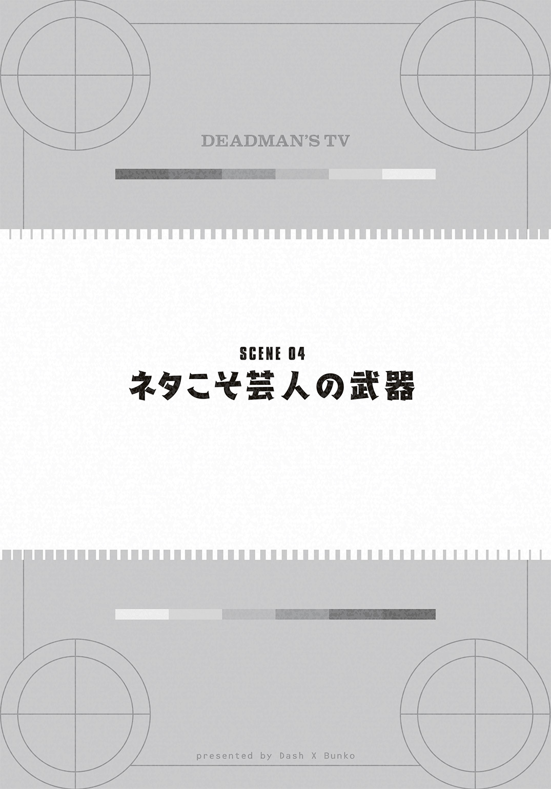

| デッドマンズTV | |
| リタ・ジェイ | |
この本は縦書きでレイアウトされています。
また、ご覧になる機種により、表示の差が認められることがあります。
 ダッシュエックス文庫DIGITAL
ダッシュエックス文庫DIGITAL
デッドマンズＴＶ
リタ・ジェイ
人が笑うということ。ユーモア。
そのユーモア、という単語は、ヒューモア――つまりは人間だとか、人間らしさという意味にも取れると、誰かが書いていた。
例えば、バナナの皮を踏んだ男が転ぶ。
あわててその場から立ち上がり、平静を装いながらもあたりを気にしている様子。
人間味あふれる、ユーモアを感じる光景だ。
ただ、人は転べば痛いし、周りの人に醜態を見られるのは恥ずかしい。
そんな姿を見て笑うなんて、よく考えてみれば残酷だ。
残酷な状況を面白いと感じる。それが人間の罪深さかもしれない。
でも、もし転んだ男性が今まさに病気の母のお見舞いに行く途中で、手に持った花束がばらまかれてしまったら？
財布には、花束を買うだけで精一杯で、代わりの花束を買うお金は残っていない。
せめて道路に散らばった花を集めようとしても、体が思うように動かない。
転んだ時に頭をしたたかにぶつけていたのだ。
後頭部にぬくもりを感じ、髪の毛が血で濡れてきているのがわかる。
腕を動かそうとしても、ぴくりと震えるのみ。
代わりに足はせわしなく痙攣し、殺虫剤をかけられた虫のようになる。
それでも、彼を面白いと感じる人はいるのだろうか。
もしいたとしたら、それは「ひとでなし」と呼ばれるだろう。
――だったら、ひとでなしは、残酷であればあるほど笑うのだろうか。
とても気分がよかった。
新橋と台場をつなぐモノレール「うみにゃんこ」の車内。
普段はえらく混んでいるボックス席に運良く座れたというのもあったが、それだけじゃない。
俺は窓に広がる東京湾を見ながら、手元のスマホのメールアプリを立ち上げる。
――秋津アキト様へ。ＧＸ「勝手にはじけろ」生放送ご観覧につきまして――
メールのタイトルを見て笑みがこぼれる。
湾岸の景色もひときわ綺麗になった気がしてきた。
俺が向かう先は新橋発の「うみにゃんこ」に乗って６駅目。
東京湾の埋立地に鎮座する報道と芸能の拠点、大日本放送――「ＧＸテレビ」の本社ビルだ。
そこで毎週金曜日の17時から生放送されるお笑いバラエティ「勝手にはじけろ」の番組観覧に当選したのだった。
「勝手にはじけろ」。ブレイク中の芸人とアイドルが様々な企画コーナーにチャレンジする人気番組だ。
お笑いとお色気が真の融合をはたした、理想の番組。
テレビっ子でお笑いが好きな俺が、自信を持っておすすめできるものだ。
観覧希望の競争率だって高い。その中での当選なのだから、顔もニヤけるというものだ。
俺はもう一度スマホに目を移す。
《司会......ガッツ弾平（らっきぃえんど）ロック土方（らっきぃえんど）『ビキニ・デストロイ』コーナー出演......鶴田ぺたみ メロリーナちゃん......》
らっきぃえんど。大好きな芸人だ。「切腹人間」のコントなんて最高だった。他のグラビアアイドルはあまりわからなかったが、生で水着の女の子を見れるだけでもテンションが上がる。
それに――と、画面をスクロールさせる指にひときわ力がこもった。
《――今週のゲスト......真淵明日香（マジ天Ｇ）》
真淵明日香。
ファンからの呼び名は「あすらん」。
アイドルユニット「マジ天Ｇ」でセンターを務めるアイドルだ。
ファンの間では「マジ天あすらんマジ天使」という呼びかけがあるように、マジ天Ｇの中でも一人での仕事が多い。
あすらんは歌もダンスもけっしてうまいわけではないが、一生懸命にがんばる姿は何物にも代えがたい存在感があり、番組ではとびっきりの笑顔で共演者の心をつかむ美少女だ。
バラエティでの受け答えも盛り上げ所をわかっており、俺はとても注目していた。
大好きな芸人と、旬のタレントをいっぺんにこの目に収めることができる「勝手にはじけろ」の観覧。
俺の「お笑い大好きパワー」が実ったというものだ。
♪そう、わたしの想いが実ったな。ずっと好きでよかったな。半端な「好き」ならもうダメかも。恋は危険で丁度いいかも。マジになるなら断じて男子――
俺の頭の中を「マジ天Ｇ」のシングル「断じて男子」が駆け巡る。
そして俺は、この歌のサビがさっきからずっと鼻歌になっていたことに気づく。
あわてて隣を見たが、座っていたおばあさんは耳が遠そうで、少しホッとした。
お笑いは好きだが、自分が笑い者になるのは嫌だ。
やがて「うみにゃんこ」は東京と埋立地を繫ぐ橋「七色橋」に入った。
橋のむこうにＧＸの本社ビルが見える。
空を突く巨大な東ビルと西ビルが左右に建ち、その間を二本の渡り廊下が繫ぐ。
渡り廊下は斜めになっていて、それぞれが交差しており、アルファベットの「Ｘ」を模している。
極めて使いにくそうだが、ハッタリが効いていて格好はいい。
そしてこのビルの最大の特徴が、東ビルの最上階の壁に張り出した、星の形をした部屋だ。
マンガに出てくる流れ星が壁に激突したようなこの部屋が、ＧＸの新番組発表などの記者会見をする「スタールーム」である。
スタールームからの映像は本社ビル前の巨大スクリーンで、局の番組ＣＭと共に常に映し出されている。
あのスタールームで初主演ドラマの会見に臨み、緊張と責任感で思わず涙したあすらんの姿を思い出す。
「次は～ァ湾岸前ェ～大日本放送ビルにお越しのお客様はこちら～です」
抑揚のつきすぎた車内アナウンスが耳に入り、俺はリュックを背負って立ち上がった。
隣のおばあさんは俺の鼻歌をコピーしたように「断じて男子」のメロディを口ずさんでいた。
湾岸駅の階段を降りたところで信号につかまった。
道を挟んだ向こうにはＧＸ本社ビルが見える。
早く着いたから早く番組が観られる、ということではないが、やはり焦りは出るものだ。
足踏みをしながらあたりを見ると、ポップなピンク色をしたワゴン車が停まっていた。
クレープ販売のワゴンだった。
考えてみれば今日は何も食べていない。
本番中に腹でも鳴ってしまったら、必ず芸人にいじられるだろう。それも恥ずかしい話だ。
万全の態勢で観覧に臨みたいと思ったが、集合時間まではあと５分。
何かを買って食べる時間はなさそうだった。
ワゴンでは、バンドマン然とした長髪の男が気だるげにクレープを焼いている。
あんな男の焼くクレープは絶対に不味い。
半ば負け惜しみのようなことを考えていると、信号が青になった。俺は急ぎ足で踏み出す。
その足元に、バナナの皮が捨てられていた。
思い切り踏み込んだ俺の足は、バナナの皮をしっかりと捉える。
体はサッカーのオーバーヘッドキックよろしく半回転する。
俺はそのまま道路に背中を打ち付けた。衝撃で息が一瞬止まった。
寝っ転がったままぽかんとしていたら、あちこちから笑い声が聞こえてきた。
小型犬が吠える声も重なる。犬の飼い主は犬をなだめながら笑いをこらえている様子だ。
俺は痛みと恥ずかしさで、起き上がることができなかった。
吠える犬から顔をそむけると、クレープ売りの男と眼が合った。
呆けた顔のそいつはバナナをかじっている。
あいつだ。
俺は、売り物のクレープをつまみ食いするようなバカが放ったバナナの皮を踏んでしまったのだ。
そして当の本人は笑ってもいなかった。
なぜ俺が転んだのか全くわからないといった顔をしている。バカすぎる。
俺は余計に腹が立ったが、痛みと衝撃で起き上がることはできない。そして何より恥ずかしさで。
悔しさと情けなさに歯嚙みする。
立ち上がるタイミングさえもつかめずにいたが、突如、誰かに手を引かれた。
顔をあげると、１人の少女が立っていた。
目深にキャップをかぶり、サングラスと大きなマスクをしているものの、小顔で手足の細い少女だった。
――芸能人か――
「大丈夫？」
「あ、ありがとうございます――」
突然目の前に現れた、一般人とは違う空気をまとう少女。
「こっちこそ」
少女はぺこりと頭を下げた。
「え？」
「最高の勢いでギャグを見せてくれて」
少女はにっこりと笑っている。
「いや、それは...」
あらためてそんなことを言われるのも恥ずかしい。
俺は言葉に詰まったが、少女は首をかしげた。
「あれ？」
サングラスの中で目を見開いたのか、形のいい眉がぴんと上がる。
「...どこかで...」
そのまま少女は顔を近づけてきた。
俺は息をのんだ。
断定は出来ないが、芸能人であることはわかる。
アイドルの、自分たちとは違う基本的な骨格の差をまじまじと見せつけられている。
今すぐ少女がかけているサングラスをひったくりたかったが、当然そんなことは出来ない。
しかし、なぜ彼女が俺のことを知っているそぶりを見せているのか。まったくわからない。
少女は小首をかしげて俺の顔を見ていたが、あっ、と小さい叫び声を上げた。
「時間ない！ 早く入らないと！」
少女は俺の背後にあるＧＸ本社ビルのモニタを指さすと、小走りに信号を渡っていった。
途中、俺に一度振り返って。
俺はクレープ売りの男よりも呆けた顔でその姿を見ているだけだった。
彼女が視界から消えた後、モニタに映る時刻に気づき、俺も慌ててＧＸ本社ビルへと走っていった。
ＧＸ本社ビル前に着いた俺を出迎えたのは、「勝手にはじけろ」の番組スタッフだった。番組のロゴが描かれたフラッグを持っているのですぐにわかる。
周囲には、すでに数十人の人たちが集まっていた。
一目でアイドルファンとわかるような中年男性の姿もちらほらといたが、主に自分と同年代の女性が多かった。
「秋津さん......と。はい、これで観覧希望の方は全員でいいすね？ じゃあ今から東ビルにあるスタジオに移動しますよ？」
後藤と名乗ったスタッフの男は俺の名前を確認すると、自分が主導権を握っているのにもかかわらず絶えず語尾を上げた口調で、不安げな様子を見せながら歩き出した。
俺たちは黙って後藤の背中について歩いていった。
東ビルのちょうど真裏に回って、俺たちは車両搬入庫に着いた。
後藤は大きなシャッターの横にある扉のセンサーに、首から提げたＩＣカードを当てる。
「こちらですよ？ 自動で閉まりますので最後の人は扉に触らなくていいですよ？」
中に入り、ふたたび後藤の後ろについて通路を歩く。
カードキーで開くいくつかの扉を通り、細く、曲がりくねった通路を歩く。
なんだか迷路のようだった。
「誰か芸能人とすれ違わないかなぁ」
「ねー！」
俺の後ろを歩く若い女の子たちは早くもテンションが上がっているようだった。
「まだスタジオにつながってないからダメだぁ。楽屋の前を通れば見れるかもだけどね」
独り言のようにつぶやいたのは、俺の隣に歩いていた一人の中年男性だった。
男は俺の顔を見て「お兄ちゃんもそう思うっしょ？ 簡単には会えないもんな？」と、念を押すように訊いてきた。
男は頭にバンダナを巻き、ボタンを外したネルシャツの間から、グラビアアイドルの水着写真がプリントされたＴシャツが覗いている。いかにもすぎる姿だった。
「あ、はあ...」
微妙な空気が流れる中、俺は生返事をしながら、先ほどの一件を思い出していた。
――もしかしてあれは『あすらん』だったのかもしれない――
サングラスで確信が持てなかったが、背格好はあすらんに似ている。特徴のロングヘアは帽子の中に隠していたかもしれない。
もし、あれがあすらんだったら？
俺とあすらんは今日この番組で再会するというわけだ。
何故か俺のことを知っているアイドル。
これはいい設定だ。
俺のバイト先はレンタルビデオ店だから、もしかしたら客として来ていたのかもしれない。可能性はある。
そして俺に話しかけてきたのだから、何かあすらんがグッとくるところを俺が持っているとか。
例えばレンタルＤＶＤが入ったケースのロックをガチャリと外す、あの速さに関しては自信がある。
拳銃の弾倉を詰め替えるようなあの動作は大好きだ。自分でも軍人か何かになった気分になることがある。
ひょっとしてあの手つきを見て俺のことを好きに――
「スタジオ、こちらですよ？ トイレの場所は後で説明しますので？」
後藤に声をかけられるまで、俺はスタジオの入り口に気づかず通り過ぎていた。
スタジオの中は思っていたよりも手狭な感じがした。
が、その明るさは尋常ではなかった。
「すご......」
一歩入って、思わず声が漏れた。
パイプを組んでひな壇のように作られた観客席。
その正面には「勝手にはじけろ」のロゴが大きく描かれた看板や壁といった各種セット。
これらが天井からの強い照明に当てられて光り輝いている。
スタジオの壁や機材のケーブルなど、普段隠されている様々なものも目に入っていたが、それらはテレビで見るよりもはるかにキラキラとしており、心が躍る。
「じゃあまず、観客席に座ってもらいますよ？」
後藤の指示により、最前列には若い女の子が座り、男たちはひな壇の後部に座らされた。
隣にはさっきのアイドルファンが座り、俺のテンションは少し落ちた。
「本日はわざわざありがとうございます？ あらためて『勝手にはじけろ』番組ＡＤの後藤です？」
観客席の正面に立った後藤の挨拶が始まった。
「と、これから放送ですけどもね？ テンションは高く......というような説明とか注意事項は、前説の芸人さんにやってもらいますのでね？」
前説。
そうだ。あすらんのことですっかり忘れていた。
番組もそうだが、前説も今回の観覧の楽しみの一つだ。
客のテンションを上げながら注意事項を面白おかしく話す前説。
これは、芸人の腕の見せどころでもあり、テレビではまだ観られない芸人を知ることができる。
それに、伸びている番組には面白い若手が前説に入るものだ。
どんな芸人が出てくるのか。
俺は身を乗り出す。
「ではお願いします!? 前説の『ユニオン・オニオン』？ です！」
後藤の呼び声と共に、セットの奥から人影が飛び出した。
小走りで観客席の真正面に近づいたのは、一人の少女である。
ショートカットのヘアスタイル。ほっそりとした手足に小さな口。つんとしながらもしっかり通った鼻。
そのピン芸人はとびきりの美少女だった。
だが、問題は彼女の目だ。
彼女の目は、それはそれは険しかった。
かわいい顔立ちに無用な迫力を与える眼力。腹を空かせた猛禽類のような眼である。
頭の左右にはくせっ毛だろうか毛束があり、それらはピンと撥ねている。ちょうど臨戦態勢に入ったミミズクのようにも見える。
その眼、その髪型を見て、俺の頭に電流が走った。
少女はぎろりと客席を見渡すと、喋りだす。
「みなさんこんにちは、前説の『ユニオン・オニオン』です。ええと、ピン芸人です。なんかコンビっぽい名前ですよね？ コンビだと思った方、手を上げてください。鼻骨を折りますので」
少女は一息に言うと、笑顔を作った。
恐るべき目つきはそのままだったので、泣く子も黙る様な笑顔だった。
「あれ、反応がないですね。みなさん死体ですか？ 亡骸ですか？ ナイアガラの亡骸ですか？ あ、はい。今のは何が面白いかといいますと、亡骸とナイアガラの言葉をかけてまして――」
観客はピクリとも反応しない。
最前列の女の子は吐き出しそうな表情で顔をそらせた。
「――ということで今から前説をしますね。本番中の飲食、これはできません。ペットボトルとか干し首はしまってください。そんなもの食べる人いますかって！ あ、最前列の方は食べそうですね。そしてトイレも本番が始まったら行けません。どうしても今行きたいという人はペットボトルをトイレの代わりに――」
俺はまばたきも忘れるほどに目を見開いていた。
体はすっかり固まって、口は開きっ放しになっている。
先ほどから少女の喋りはヒドすぎた。
最悪と言っていい。
綺麗な声で言う下品なセリフは、キャラに合っていないどころの騒ぎではなく、ギャップの良さを感じさせるというよりも、ただ面食らうばかりである。
楽しいテレビの番組観覧で、こういう形で前説をする芸人なんて前代未聞だ。
もう大事故のレベルだ。
現に観客は反応を失いすぎて「無の表情」となり、スタッフは明らかに苛立っている。
しかし、俺が驚いていたのには、それどころではない理由があった。
――俺は、会っているんだ――
猛禽の眼で観客をねめつける少女と目が合った。
そう、さっき信号の前で会ったのは彼女で間違いない。
ただ、会ったのはさっきが初めてではない。
サングラスをかけていたからわからなかったが。
――俺は、この眼を忘れることはできない。
帽子をかぶっていたのでわからなかったが、この髪型だって忘れられない。
少女は俺の存在に気づき、喋りを止めた。
心なしか左右の毛束がぴんと立ったように見えた。
少女はただでさえ険しい目をぎゅっと細め、近づいてくる。
「あれ？ ......やっぱり！」
――こんな再会があるのか――
「ゆに......灰田ゆに、なのか」
少女は俺の言葉に反応し、観客をかき分けてひな壇を登ってくる。
「やっぱり......秋津くん！ 『マリバス秋津』くん！」
「その呼び方はやめろ......！」
少女は気にもとめず喋りかけてくる。
「何年ぶり？」
「じゅ、10年かな......まさか、お前がお笑い芸人に――」
「おいユニオン！」
ここで後藤が割って入った。
「ちょっとみなさん休憩ですよ!?」
後藤はそう叫ぶと、ゆにの腕をつかんでセットの奥へと引っ張ってゆく。
「お兄ちゃん、知り合いかい？」
隣の中年の問いに、俺は力なくうなずいた。
――灰田ゆに。
彼女とは小学校の頃、同級生だった。
あれは小学４年生の時だ。俺は学校で派手に吐いたことがある。
それは五時間目が始まる寸前だった。
給食で飲んだ牛乳が悪かったのか。
悪寒と共に突然こみあげた俺は、机の上へ大量の牛乳を戻したのだ。
天変地異が起きたかの様に荒れるクラス内。
「きたねー！」
「秋津がゲロ吐いた！」
「ゲロ津だゲロ津！」
「ゲロ津ごとトイレに流せ！」と騒ぎ出す男子。
そして、当然ながら牛乳を吐いた俺にもらわれる形で、続いて戻してしまう連中もいた。
給食の後で気だるげな空気が漂う五時間目前の教室が、一転「白い地獄」となった。
こうなると、俺の運命は終わったと言ってよかった。
吐いたことで悪寒は収まったが、目の前は真っ暗になっていた。
もう学校には居場所はない。
これから卒業までゲロ野郎としてイジメられることが確定した。
そのときだった。
「秋津くん、面白い!!」
突然、灰田ゆにが机の上に立ち上がり、こう言い放ったのだ。
「こんなの見たことないよ！ 面白い!!」
それは、あまりにも単純な主張だった。
ただ、それだけにゆには実に堂々としていた。
胸を大きく張り、目を輝かせて俺の机を指さす。
そんなゆにの物言いに、俺を囲んではやし立てた男子も言葉を失う。
「面白い、面白いよ！ こんなの見たことないもん！ すごい勢い！ すごいリバース！ マックス！ 秋津くんマックスリバース！」
そんなゆにの言葉に呼応するように、皆の何かが外れた。
そうか、これは「面白い」のか。
これは「スゴい」ことなのか。
「マックスリバース」という語呂の良さにハマった男子も多かった。
マックスリバース秋津。マリバス秋津。
「マーリーバス！ マーリーバス！」
男子たちが俺の名前をコールする。
クラス内は盛り上がり、そして地獄は加速した。
残しておいた牛乳パックを机の引き出しから取り出し、一気に飲んで吐き出すもの。
牛乳を拭いた雑巾の臭いを嗅いで、そこから「戻し」を誘発するもの。
クラス中が半狂乱になり、先生が来るまで、「マリバス」コールと共に、皆が牛乳を吐き合った。
子供特有の結束が異常な盛り上がりをみせたこの事件からほどなくして、俺は親父の仕事の都合で、幸か不幸か転校することになった。
それ以来ゆにには会っていなかったが、あの時の彼女には感謝をしている。
自分のピンチを救ってくれた恩人なのだ。
だから、自然と俺の足は客席を降りてゆき、ゆにを追い、セットの奥へと向かっていった。
「勝手にはじけろ」のセットの裏はにぎやかだった。
透明のアクリルの水槽。
平行棒の下に粉を敷き詰めたステージ。
ヘルメットにピコピコハンマーなど。
番組の各コーナーで使うセットも運び込まれている。
アクリルの水槽には熱いお湯が入っているようで、うっすらと湯気を立てている。
浴槽の近くには、水着の上にベンチコートを羽織ったグラビアアイドルが数人、固まって立ち話をしている。この浴槽の中で何秒我慢できるかを競うコーナーが人気なのだ。
彼女たちを横目に見ながら通り過ぎると、その先にスタッフに囲まれているゆにがいた。
「何？ 何なのお前は？ 夕方の生放送だよ？ ブラックなネタを許容する客層じゃねーんだよ！ 後藤お前ちゃんと言っとけよ！」
ゆにを怒鳴りつけているスキンヘッドの男が、隣に立つ後藤に矛先を向けた。
「いやペイさん、僕言いましたけど......彼女、わかりましたって――」
「じゃあなんで干し首とか言ってんだよコイツは！」
ペイと呼ばれたスキンヘッドの男は、丸めた台本で後藤の頭を叩いた。
パスーン、と軽い音がして、ゆにがプッと息を漏らす。
「お前、何笑ってんだよ！」
ペイが目を見開いてゆにを見る。
ゆには真顔になっているが、顔中ふるえている。
自分が怒られているのに、その緊張感が逆に面白くなったのか。
これは悪循環のパターンだ。
「いえ、笑っぷぇないでしゅ」
ゆにの言葉にペイはさらに怒り出す。
「笑ってんだろ！ お前『はじけろ』ナメてんのか。ディレクターの俺をナメてんのか。この番組はな、ＧＸで一番面白い番組なんだよ。前説のお前がスベってる場合じゃねーんだよ！」
「ペイ――北村さん、わたしスベってないです」
「スベってたよ！」
「スベってはないです！」
ゆには眼光鋭くペイの目を見据えた。
その猛禽の眼にペイは一瞬たじろいだようだ。
「じゃあ、なんだってんだよ？」
「なんだか......オフビートな笑いが生まれたかなって」
「......ハァ？ お前何言ってるんだ？ オフビートって何だよ？」
「静けさの中に熱さがある笑いというか......熱いマグマのような？ もしくは煮えたぎった血液とか。そういうのが渦巻いて......まあ血液が煮えたぎったら死んじゃいますけどアハハ」
「面白くねーんだよ！ で、オフビートってなんだよ！」
「よくわかりません。雰囲気で言ってます」
「じゃあ言うんじゃねえよ！」
ペイはスキンヘッドをかきむしった。肩で息をしながら、とにかく――と続ける。
「お前、今のままじゃ前説なんて出来ねえよ。担当マネージャーどこ行った？」
「いません」
「なんでいねえんだよ。お前あすらんと一緒の事務所なんだから、藪野ちゃんだろ」
「藪野さんは、明日香につきっきりなんで」
ペイは舌打ちをした。
「藪野ちゃんに言って代えてもらうこともできねえなら――あれ、後輩の芸人か？ あいつでもいいや」
そう言ってペイは、俺を指さした。
「へ？」
急に声をかけられて素っ頓狂な声が出る。
「いや、俺芸人じゃ――」
このスキンヘッドは何を勘違いしているんだ。
「あ、マリバス秋津くん」
「だからその呼び名は！」
「やっぱり芸人じゃねーかよそんな名前は」
ゆにの一言でペイは確信をもったようで、大股で俺に近づいてきた。
「前説、できるか？」
近くで見るペイは実に強面で、有無を言わせない迫力がある。よくゆにも歯向かっていたものだ。
「いや、だから――」
「ピン芸人じゃねえのか。だったらこいつ一人で喋らせとくの危なっかしいから、ツッコミやるなりしろよ」
ペイはどんどん話を進めてゆく。
「ペイさん、わたしは一人で出来ます！ 立派なピン芸人です！」
「そのご立派なピンに任せていたらダメだから言ってんだよ！ チャンスもらえるだけでもありがたいと思えや！」
「第一、この人は芸人じゃなくて――」
「おはようございます！」
「おはようございます！」
ゆにが話に入りかけたところで、突如、ペイと後藤が大声を張り上げた。体を折れんばかりに曲げて、俺の後ろの人物に向かって礼をする。
振り返ると、太い黒縁のメガネをかけた太めの男が歩いてきていた。
決して似合っているわけではないが、シャツから靴までがつややかに光り、ひと目で分かる高級品を身につけている。
肌ツヤも異常なほど良く、それが死んだように濁っている眼と対照的な印象だった。
「夏木さんおつかれさまです！」
ペイが俺たちを押しのけるように、メガネの男へと駆け寄る。
夏木と呼ばれた男は、ん、と軽く顎をしゃくった。
「夏木さんすみません！ ちょっと前説で――オラお前ら挨拶しろや！」
ペイが振り向きざまに怒声を飛ばす。忙しい男だ。
「ペイさん、この人誰ですか？」
小首をかしげるゆににペイがあきれた声を出す。
「ハァ？ お前『はじけろ』のＰ知らねえのか!?」
「ピー？ 放送禁止用語ですか？」
ゆにはぽかんとしている。俺はあわてて耳打ちする。
「灰田、Ｐはプロデューサーのことだ。偉い人だよ」
「あっ、そうなんだ」
「芸人なら知っとけよ......」
まったく、10年ぶりの会話がこんなところから始まるなんて。
こそこそと話している俺たちをペイが咎めようとしたときだった。
プロデューサー、夏木の姿に気づいたグラビアアイドルたちが一気に駆け寄ってくる。
「夏木さんよろしくおねがいしますぅ～」
「夏木さん、今日はがんばりまーす。『水無月あんな』です」
「あ、よろしくおねがいしますぅ申し遅れました『鶴田ぺたみ』ですぅ。『サブミッション』所属ですぅ」
一人が名前を名乗ると、さっき挨拶した人も改めて名を名乗る。
皆一様に目をうるませながら胸を寄せ、夏木に身をすり寄せるように次々と自己紹介をしてゆく。
テレビでは観ることが出来ない彼女たちの「明確に人に媚びる態度」を見て、俺は夏木がうらやましくなるよりも先に、ちょっとした怖さをおぼえた。
「はい、よろしくネ」
夏木は軽く手を振った。妙に甲高い声だった。
「夏木さん！ 今回、初『はじけろ』ということで、よろしくお願いいたします！」
人だかりの中、スーツ姿の若者が押し入ってきた。
若者はマネージャーらしく、隣に立つ女性を夏木の前に立たせる。
「こちらが、ウチでグラビアやらせてます、メロリーナちゃんです。よろしくおねがいします！」
「メロリーナちゃんです。みなさん、よろしくお願いします～」
それはタレ目でおっとりとした顔立ちの女性で、並み居るグラビアアイドルの中でも一番胸が目立っている。大きすぎるくらいだった。
そして何より、金髪に碧眼が光っている。
ハーフタレントだろうか。いや、外国人か。びっくりするくらいに目立つ。
彼女は夏木に、というよりも全員に向かって頭を下げた。
顔を上げた時に俺と目が合って、メロリーナちゃんは軽く微笑んだ。
いい人じゃないか。と思った自分に気づいて俺は苦笑した。
やはりタレントにとって挨拶は重要なのだ。これだけで好感を持ってしまう。
俺もあやふやな笑顔を作ってメロリーナちゃんに会釈を返した。
ふと横を見ると、夏木の濁った眼が光っていた。
「ふーん。大きいネ」
夏木はメロリーナちゃんに視線を送ると、彼女の胸の前に手を出して揉むしぐさをした。
「...眼が、大きい」
メロリーナちゃんは、夏木のしぐさを見て一瞬キョトンとした後、あはっ、と軽く笑った。
「リアクション、薄いね」
夏木の声で、他のアイドル連中が大きく笑った。
何を言っているんだ。と俺は思った。
完全にスベったのを人のせいにしている。
そして、その夏木の反応を見て他の連中が笑う。いやな光景だった。
メロリーナちゃんを後ろに下げるように、マネージャーらしい若い男はなおも夏木に擦り寄っていた。
「はい！ まあ胸大きくてリアクションがフワっとしてるというか。おバカキャラなんで、ウチのメロリーナは」
「そりゃ見たらわかるよネ」
夏木はへらへらと笑った。
俺はそんな夏木を見て、絶対に関わりたくない人間だと思った。
「おつかれさまです！」
「おつかれさまっす」
続いて、大きな声と共に現れたのは、番組ＭＣのお笑い芸人「らっきぃえんど」のガッツ弾平とロック土方だった。
「はじけろ」の番組ムードを作っているのはこの二人である。
ガッツ弾平の暑苦しいツッコミと、ロック土方のどこか引いた感じのボケ。
俺はこのコンビはネタ番組に出ているときから好きだった。こんな近距離で見れるとは。
「いや夏木さん、この間、ゴルフクラブあざーした!!」
軽く顎をしゃくる夏木に、ガッツ弾平はゴルフのスイングをしながら近づく。
「ん。新しいの買ったからネ。良く飛ぶでしょ一本３００万のやつは」
「そんなに高くないでしょー！」
「そんなに高くないか。違うか」
「違いますわそれー!!」
大声でツッコむガッツ弾平に、グラビアアイドルたちもドッと笑った。
俺も場の空気に合わせて一緒に笑い声をあげたが、ロック土方が真顔になってこっちを見てくる。
「誰？」
ロック土方の眼の奥底に、見ず知らずの人間を舐めきる雰囲気が溢れていた。
「前説の芸人ですよ。一人で出たらスベったんで今からコンビでやり直させようと」
ペイが横から入ってくる。
「わたし、スベってませんから！」
「お前、いい加減に――」
「いや、スベってたネ」
ペイに食い下がるゆにへ声をかけたのは夏木だった。
「スベったことを認めなければスベったことにならない。通常のトークの絡みだったらそうやって意地を張るのもいいかもしれないけどネ。お客の前であんな感じだったら、もうダメだよネ」
一同がシーンとする中、夏木は気だるげに首を回しながら話しだす。
「『はじけろ』はネ、そーいうの求めてないんだよネ。ブラックなのはみんな嫌いなんだよネ。あんなもので笑うと思ったんだったら、オネーさんお笑いに向いてないし、小さいライブハウスで地下芸人？ やっててもいいかもしれないけど、売れないよ。絶対」
俺はゆにの顔を見た。
皆の目の前でプロデューサーにここまで言われてしまったのだ。
関係ない俺でさえ、気まずさに逃げ出したくなる。
ゆにの猛禽の眼に殺意が帯びてきているが、言い返せない悔しさでその目はわずかにうるみ、唇は震えていた。
「夏木さん！」
後ろから声が聞こえた。
皆が一斉に振り向く中、小走りに駆け寄ってきたのが――真淵明日香、あすらんだった。
俺は息を呑んだ。
小さくて、細くて、それでも胸は出ている体。瞳は大きく、顔は小さい。
この、全てのパーツを好循環させる顔。
髪の艶は照明が届かないセットの裏にいても輝いている。
俺は思わず息を止めた。
本当は深呼吸してあすらんの髪の毛の匂いを嗅ぎたかったが、周りの目を気にしてしまった。
特にアイドルに明るくない俺でもこんな気持ちになってしまうのだ。観覧席で隣にいたあの中年男など、死んでしまうのではないだろうか。
「申し訳ありません夏木さん!!」
あすらんの隣にいた、青白い顔をした男が必死に頭を下げだす。
この男が先ほどゆにが言っていた、マネージャーの藪野だろう。
藪野はゆにの腕を引っ張り、頭を下げさせる。
「いいよいいよもうそういうのはネ」
「夏木さんすみません。ゆにちゃんに前説を勧めたのはわたしだから......」
あすらんが夏木の側に立つ。
「まあ、それについては何も気にしてないけどネ」
夏木が目を光らせるが、次第に態度は軟化してゆく。
「ゆにちゃんはどうしても前説がやりたいって――」
「わかった、わかったよ」
夏木は上目遣いで迫るあすらんを両手で制し、じゃあ、と、短い指を開いた。
「10分。10分後に前説ワンチャンということで。ネタ考え直せるでしょ？」
「もちろんです！」
誰よりも先に声を出したのは藪野だった。
「夏木さん！ 本当にありがとうございます！」
あすらんは最高の笑顔で夏木に礼を言う。
「ん。じゃあよろしくネ」
「はい！ ほんとすみません！ 灰田ちゃん、前説やってよ！ マジで！」
藪野はゆにに詰め寄る。
「はい」
「でも、ここで練習やんないでよ！ スタッフさんの迷惑になるから、廊下の喫煙ルームとかでね！」
藪野はゆにに伝えると、虫のように身を屈めながら夏木の背中を追っていった。
夏木がいなくなったので、他のタレントたちもそれぞれの持ち場に戻り、セット裏に残されたのはせわしなく動くスタッフと、俺達二人だけだった。
いや、彼女が残っていた。
あすらんは、ゆにへゆっくりと近づく。
二人が並ぶと、ゆにもあすらんに負けず、華奢なアイドル体型なことに気づいた。
「ゆにちゃん、大丈夫？」
あすらんは両手でゆにの手を取って心配そうな声を出す。
「......大丈夫」
ゆにはしばらく黙っていたが、絞りだすように声を発した。
「そう。がんばってね！ きっと出来るから。結果を出したら夏木さんだって――」
「わかったから。がんばるから」
ゆには話を打ち切りたかったようだった。
何か言え、とばかりに俺へと顔を向ける。
「え？」
「どなたですか？」
ゆにの表情を察してあすらんが俺を見る。
大きな瞳につややかな髪。吸い込まれそうだ。
「灰田は......俺と、前説やることになって......」
トップアイドルに見つめられて、たどたどしい言葉になる。
あすらんは小首をかしげた。
急に入ってきた見知らぬ男がいきなり前説を担当するという。それを不思議に思うのは無理はない。
「あの、事務所は？」
「いや...」
「フリーの方なんですか？」
「あ......」
というより、芸人でもない。
「どうしてここに来て、ゆにちゃんと一緒にいるんですか？」
あすらんの言葉にトゲはないが、こうも答えづらいことばかり訊かれると、悪いことをした気持ちになってくる。
「秋津くん、行こう」
ゆには俺の手を取った。
「ペイさんにこのコンビでやれって言われたから。だから秋津くんと前説するの」
そう言ってゆにはセットの扉を指さす。
「そう...でも、ゆにちゃんだったら必ずできると思うわ。だってものすごく面白いから――」
「うんわかったから」
ゆにの気のない返事にあすらんは一瞬言葉に詰まったようだが、すぐに明るい声を出す。
「ゆにちゃん、がんばってね！」
あすらんは両手の拳を握り、ＣＭで聞いたような声を出すと、藪野を追って歩いていった。
ゆには、セットの扉を開けて廊下の奥へと歩いてゆき、俺もその後を追った。
「本当、あのペイはとんでもない電球ハゲよね！」
廊下を歩きながらゆにはプリプリと怒っている。
「俺も前説、やるんだな......」
「わたし一人でできるから。横にいてくれるだけでいいから」
芸人のプライドがあるから。とゆには言った。
「まあ、そうだけどさ......あのディレクター怒らせたら大変だろ」
「そうなんだけどね...あ」
ゆにはハッとした表情で手を打った。
「もっと怒らせたら、電球が切れるみたいに、頭の血管が切れるかな。それで、床に倒れたら電球みたいに頭がバラバラになるの」
「アブなすぎるだろ......」
隣に立っているだけでも怖くなる冗談だ。
それでも、ゆにのラストチャンスをダメにするわけにはいかなかった。
「まあ、邪魔にならない程度でいいなら協力するよ」
俺の言葉に、ゆには小さい声でありがとう、と言った。
「秋津くんは男らしいね」
「そんなこともないけどな」
「あ、男らしい、というのは、男性自身とかそういう意味じゃなくて――」
「知ってるよ！ 強調するからヘンになるんだろ」
やっぱり不安だ。
喫煙ルームは廊下の突き当たりにあった。
駅のホームにある待合所のような、ガラス張りの透明な部屋といった形だ。
ゆにはそこに入ると、腰にぶら下げたポーチからメモ帳を取り出した。
人に見られたくないのか、メモ帳に顔をぴったりとくっつけて文字を追っている。
「それ......ネタ帳？」
「うん。前説のネタ。色々メモってあるの。元々一人でやるやつだけど、これを二人で話す感じには出来るかな」
「ああ、『セリフを割る』ってやつだな」
「そうなの？ 割る？」
「知らないの？ 俺、バラエティ番組で聞いたことあるぞ」
「セリフを割るって、口を割るための拷問みたい」
「なんでそっちの方向に行くんだよ。そういうボケが怒られたんだろ」
「今のはボケてないわよ？ 拷問を思い出しただけ」
ゆにはパタパタと手を振った。
「そうなのか？ 素で拷問とか言ってるんだったらそっちも問題だよ」
「ス？ スってなに？」
ゆには首をかしげる。
「ナチュラルに、って意味だよ！」
「ああ、そうなのね」
「灰田、芸人なんだろ？ それくらいわからないのか？」
「うん。でも秋津くん、詳しいね」
「そうか？ 素、とかリアクションとか、話を振るとかハードル上げるとかさ。今はテレビでいつも聞くだろ」
「いや、すごいよ。そういう単語を知っていたって、パッと出てくるってことは、体の中に染み付いてるってことだもん。秋津くん、お笑い芸人に向いてるよ」
ゆには目を輝かせる。
「そうかな。考えたこともなかったよ」
「向いてると思うな。さっき私がボケた時も、とっさにツッコんでくれたし」
「え？ それいつ？」
「夏木さんの役職のこと」
「ああ、『Ｐ』のところか......って、あそこでボケを入れたのか？」
「うん。でもペイさんには通じなかった」
「あんなところでボケたら、そりゃあのディレクターも怒るよ」
「入れるっていうか、出ちゃうのよね」
ゆには頭をかいた。
「緊張すると頭に電気が流れるっていうか、まわりの空気がピリピリしてくると、いろんなことがどばーっと出てくるの。その言葉の渦を抑えつけると倒れそうになっちゃうから口に出すことにしてるの」
ゆには一息に言った。
緊張するとボケてしまう。そういう性質なのか。
確かに、場の空気をなんとかしたいと思うのは、芸人として一番持っていなければいけない特性ではある。
「そうなのか。まあ、緊張すると笑っちゃう人もいるからな。お葬式とか、笑っちゃダメな場所だと意識すると急に笑いが起きちゃって、肩を震わせて泣いているように見せようとしてうつむくとか、誰かタレントでいた気がしたよ」
「そういうのとは違うかな」
「違うのかよ！ お前に合わせて長いこと喋ったのに！」
首をひねるゆにについツッコミを入れてしまう。ゆには感心する表情を見せた。
「やっぱり秋津くんは芸人に向いてるよ。本当、秋津くんはすごかったから。わたしはリスペクトしてたから」
「すごかったって、それ、学校で吐いたときだろ。お笑い関係ないよ」
「いや、それよりも前だよ」
「え？」
「私がお笑い――面白いことをやろうと思ったきっかけをくれたんだから、秋津くんは」
ゆにはまっすぐに俺を見つめてきた。
俺は思わず身構えてしまったが、ゆにの眼が持つ猛禽の迫力の中に、どこかすがるような雰囲気があるのを感じた。
「それ、何？ 俺、憶えてないけど」
「うん、それはね――」
ゆにが言いかけたそのときだった。
遠くでズン、とくぐもった音がした。
何かが爆ぜるような、そんな音だった。
一拍置いて、喫煙ルームのガラスがビリビリと細かく揺れる。
「なんだ？」
体まで揺れる、というわけではなかったが、なぜか全身の毛が逆立った。
――毛穴にまで、何か邪悪なものが染みこんでゆくような揺れだ――
ゆにも怪訝な顔をしている。
「秋津くん、あれ......」
「え？」
彼女が指さす方向を見る。
廊下の奥、スタジオのセットに繫がる扉から煙が漏れ出していた。
その煙は濃い緑色で、廊下を這うようにこちらに向かってきた。
やがて喫煙ルームはその煙に囲まれる。
「なんだ？」
「毒ガス？」
「まさか」
とは言ったが、俺はとっさにシャツの袖で口元を押さえる。
ゆにもそれにならった。
やがて、煙は薄くなり、廊下のカーペットに染みこむようにして消えていった。
「何だったんだ？」
「わからないけど――」
あっ――、とゆにが小さい叫び声を上げた。
「もうすぐ前説をする時間！」
「えっ!? 何もやってないじゃん！」
「どうしよう。じゃあこれ渡すから、歩きながら読んで」
ゆにはネタを書いたメモ帳を一枚ちぎると俺に手渡す。
細かい字でびっしりと書かれたメモの中には、「干し首」などと書かれている。
「これ、さっきと同じやつだろ」
「違うボケも書いてあるから」
「『携帯電話で感電』ってやつか。使えないだろ」
「セリフをかち割ったら、変化が出ると思うし」
「割る、な。かち割ったらグロいよ」
「うん。秋津くん、良いツッコミだよ」
「そりゃどうも......って、だからそれがお客に伝わるか、なんだよな......」
こんなことを話しながら、俺たち二人は妙にしんとしている廊下を抜け、スタジオの扉を開けた。
結果、俺たちが前説をやることはなかった。
スタジオにいる人間が、全員床に倒れていたからだ。
――なんだ、これは――
叫び声を上げるというよりは、キョトンとしてしまった。
俺とゆには顔を見合わせ、ゆっくりと観客席に近づいた。
一歩、また一歩と近づいてゆくたびに、自分の内臓がぎゅっと摑まれてゆく感覚になった。
倒れている人間の多くが口から血を流している。
さっきまで一緒に観覧席に座っていた若い女の子も、せわしなく動きまわっていたスタッフも、冷たい目で俺を見ていたロック土方も、皆あんぐりと口を開けたまま、赤黒い血を流して転がっている。
肌荒れを隠すためか、濃いファンデーションを塗ったまま照明に照らされているロック土方の姿は、死化粧そのものだった。
「お、おい......」
俺はゆにを見た。
「ウソ......でしょ」
ゆにの表情も固まっている。
ウソ。そうか。もしかして、ドッキリかもしれない。
「勝手にはじけろ」の新コーナーで、前説芸人を騙すために、とか。
だが、それは俺の願望でしかなかった。
ロック土方のすぐ隣には、ガッツ弾平が転がっていた。
口をパクパクさせているガッツ弾平の腹には大きな穴が空いている。
特殊メイクというのも、とても考えられなかった。
「あ、秋津くん......！」
ゆには固まった表情で観覧席の奥を指さす。
倒れている人間の中から、立ち上がってくるものがいた。
――なんだ、これは――
彼らの肌は一様に青黒く変色し、瞳孔は開きっぱなしになっている。
口から血を流したまま、首は六角レンチのごとく真横に曲がり、口を開けばオロロロン......という唸り声を上げ、足を引きずりながら、何かを探すように歩いている。
――ちょっと待て――
「あ、あわわわ～!!」
客席の奥から声が聞こえた。
俺の隣に座っていたアイドルファンの中年男がへたりこんでいた。
口から血を流しているグラビアアイドルに囲まれている。
彼女たち一人一人はのっそりとした動きながらも、中年男を囲むように近づいてゆく。
中年男は顔面蒼白になり、何かつぶやいているようだが、ここまでは聞こえない。
第一、近づこうと思っていても、俺の足は一歩も動かなかった。
そのとき、客席近くの扉が勢い良く開いて、警備員が数人駆け込んできた。
中年男は涙と鼻水を流して顔を上げる。
俺も屈強な姿の警備員の姿に安心し、足が動いた。
――助かった、か――
屈強な姿の警備員は、尋常ではない状況に、腰から下げた警棒を引き抜く。
グラビアアイドルはあくまでのっそりとした動きで警備員に手を伸ばす。
「離れてください！」
「離れなさい！」
警備員は警棒を前に出してグラビアアイドルを威嚇する。
が、その声は上ずっている。
露出度の高い水着を着た彼女たちを目の前にして、警備員はどこか違和感を覚えているようだった。
グラビアアイドルの一人が警備員の袖を摑んだ。
反射的にもう一人の警備員がグラビアアイドルの手を打つ。
が、通常なら手の骨が折れるであろう警棒の一撃をまったく意に介さず、グラビアアイドルはそのまま警備員の手を引いた。
「ア、アアアァー！」
警備員はまるで子供のように引き倒される。
――なんだ、この力は――
もう一人の警備員も警棒でグラビアアイドルの肩を打つが、彼女はそのまま警備員の足に嚙み付いた。
警備員は絶叫し、倒れこむ。
そこにグラビアアイドルが次から次へと彼の体にかじりつく。
這って逃げ出そうとしているアイドル好きの中年男もグラビアアイドルに捕まった。
彼女たちは次から次へと彼の体にかじりつく。
その姿はやがて見えなくなり、のしかかる彼女たちの間から飛び出る彼らの足がゼンマイ仕掛けのように激しく震え、やがてぴたりと動かなくなった。
――これは、ドッキリなんかじゃない――
間違いなく、現実だ。
「ゾ、ゾ......」
ゆには口元を震わせる。
皆まで言わなくてもわかる。俺は激しくうなずいた。
「ゾウムシ！」
「ゾ・ン・ビ！」
声がひっくり返りながらツッコんでしまう。
そう、スタジオにいた人間がゾンビになっているのだ。
なぜだ。何が起こったんだ。
あの「ガス」なのか。
現時点ではそれしか――いや、そんなことを考えている暇はない。
逃げなければ。
「ろ、廊下に！」
振り向いた先の扉は、いつの間にかゾンビたちに立ち塞がれている。
「秋津くん、こっち！」
ゆにが俺の手を引っ張る。
反対側の方向に、楽屋へと繫がる通路が見えた。
足をもつれさせながら、俺たちは走った。
ゾンビの動きは遅かったが、この状況で焦りに焦った俺たちの動きもまた、水の中を歩いているように遅かった。
熱湯風呂のセットを通り過ぎる時、浴槽から何かが飛び出してきた。
「うわっ！」
水浸しのかたまりが俺に抱きついてくる。
「あああああ!!」
「秋津くん！」
「離せ！ 離せこの野郎!!」
逃れようと暴れる俺の耳元に軽く息がかけられる。
「ぷはぁ～。あー、苦しかった。わたしも一緒にいきます～」
「......え？」
「秋津くん、その人、生きてる！」
よく見ると俺に抱きついてきたのは、ビキニの水着をまとったグラビアアイドルだった。
碧く輝く瞳と大きな胸の――メロリーナちゃんと名乗ったアイドルである。
「びっくりしました？ ごめんなさい～」
メロリーナちゃんはしっかりと俺にしがみついている。
彼女の大きな胸が俺の体に密着する。
その柔らかい圧力に、おれは一瞬ではあるがすべてを忘れた。
「追いかけてきた！ 早く！」
ゆにの声でハッと我に返った。
こんな事をしている場合ではない。
俺はメロリーナちゃんの手を引いて走った。
オロロンオロロンという唸り声と、犠牲者の叫び声を聞きながら、俺たちは楽屋方面の扉に手をかけた。
二人を廊下に送り、スタジオを振り返ると、先ほどグラビアアイドルにかじられた中年男が、今まさにゾンビとなって立ち上がっていた。
大好きなアイドルに体中を食い散らかされた男は、生まれ変わったような笑顔を見せていた。
スタジオの扉を閉めた俺は、廊下にあった清掃用のワゴンを扉の前に置き、精一杯のバリケードを作って楽屋へと繫がる通路を走った。
「ここ、わたしたちの楽屋です～」
メロリーナちゃんが緊張感を感じさせない口調で楽屋へと入ってゆく。
俺とゆにもそれに続いた。
楽屋に入ったメロリーナちゃんは、ハンガーにかけてあるバスタオルを頭からかぶって、濡れた頭を拭きはじめた。
俺は息を整える時間も惜しく、楽屋のテレビをつける。
あの爆発音は何だったのか。
そして、現れたゾンビたち。
もしかしてニュースか何かが流れているかもしれない。
「このカニ、まろやかですね～」
しかし、テレビの画面は普段通りだった。
演歌歌手が旅館のカニ料理に舌鼓を打っている。
「なんだよ......」
「それ、『テレビ東都』だからかも」
ゆにが貸して、と俺からリモコンを取り、チャンネルを替える。
「――午後16時35分。大型トレーラーが大日本放送本社ビルに激突――」
「ここだ！」
公共放送のＮＨＫではヘリからの画像だろうか、ＧＸビルが空撮されている。
俺たちは息をするのも忘れてテレビ画面を観る。
「――米国に本社を置く製薬会社デクスター社所有のトレーラーには、開発中の新薬が積載されており、この事故により、付近一帯は混乱しており、警察により現在封鎖準備を――」
アナウンサーがＧＸ本社ビルの事故について話していた。
「――未だ詳しい原因は不明。詳しい情報が入り次第お伝えします――」
アナウンサーはそう結んで、次のニュースに移った。
――封鎖。
埋立地のビルに俺たちは取り残されたということか。
ゆにはチャンネルを回す。
ＧＸは「勝手にはじけろ」が流れずに、カラーバーの画面が表示されている。他の局は先ほどのＮＨＫのニュースと同じことを伝えている。
「――このカニ鍋、これで３千円なんですか!?」
テレビ東都は相変わらず旅番組だった。
しかし、一体、何が起こったのか。
チャンネルが一巡したところで、俺は後ろを振り向く。
彼女に訊くのが早いだろう。
「あの、何か知ってますか？」
俺はメロリーナちゃんに尋ねた。
メロリーナちゃんはちょうど体を拭き終わったようで、ビキニの上からタンクトップを着て、デニムのホットパンツ姿になっている。
ダメージ加工が施されたジーンズの隙間から肌が露わになって、なんだか水着姿よりも色っぽい格好だ。
「こういうの、お好きですか～？」
メロリーナちゃんは俺を見てふにゃあとした笑顔を見せると、ジーンズのラインに沿って手を這わせる。
「いや、そうじゃなくて......！ 訊きたいことがあるんです」
「それ私服ですか？」
ゆにが横から入ってくる。
「それ最初に訊くこと？」
「緊張すると言葉が浮かんでくるの！」
「だったら黙っててくれよ！」
こんなところでボケは勘弁だ。
俺はあらためてメロリーナちゃんを見る。
「その、さっきのことで話を。あのスタジオで何があったんですか？」
メロリーナちゃんは顎に人差し指をあてる。
「『ビキニ・デストロイ』のリハーサルでお風呂に入ったんですね。そうしたら、ドーン！ って、大きな音がしたんです～」
「大型トレーラー......」
「それから、緑色の煙がスタジオに流れてきて、煙を吸った人が苦しそうになって......」
「製薬会社の新薬......」
「なんですよね。デクスター社の？」
体を拭きながらもテレビはしっかり観ていたようで、メロリーナちゃんはテレビを指差す。
「それで、こんな煙は吸いたくないなぁって、わたしそのままお風呂の中に入ったんです」
「なるほど......」
「でもあれ熱湯じゃないですか？」
ゆにが割って入ってくる。
「灰田、ああいうのは大体ぬるま湯なんだ」
「そうなんだ......」
ゆにはどこか残念そうだ。
「まったく......いや、そんなことは関係ないんだよ。今の状況だよ」
あの緑の煙を吸った人間はゾンビになってしまった。
メロリーナちゃんは湯船に入って難を逃れた。
俺たちの場合は、喫煙ルームのガラスがうまく煙を防いでくれたということか。
俺たちのように助かった人間が何人いるのかはわからないが、ＧＸテレビの本社ビル全体にゾンビがいると思っていいだろう。
俺は腕組みをした。二の腕を思い切り摑む。
考えをまとめる、というよりも、体の震えを押さえるように。
「あの～。みなさんのことはなんと......？」
メロリーナちゃんが尋ねてきた。
「あ、すいません。俺は秋津アキトって言います」
俺は慌てて自己紹介をする。ゆにも続いた。
「私は『ユニオン・オニオン』です。ピン芸人です。灰田ゆにって呼んでください」
「じゃあ芸名言うなよ」
「メロリーナちゃんです。本名は泉・メリンダ＝ガーフィールドです。メロちゃんって呼んでください」
「じゃあ本名言わなくていいですよ」
メロリーナちゃんはうふふと笑い、ゆにを見た。
「相方さん、いいツッコミですね」
「いや、相方じゃないですから......」
「じゃあアキトさんですね～」
メロリーナちゃんは無邪気な笑顔を見せた。
こんな状況なのに、腹が据わっている。
とはいえ俺も、彼女の笑顔で一瞬、この恐ろしい状況を忘れていた。
「でも、これからどうしよう」
ゆにがつぶやいた。
「そう、それだよな......」
テレビ局にゾンビが現れ、俺たちは閉じ込められている。
俺は再度テレビのチャンネルを替えた。
ニュースではさっきの内容を繰り返しているだけだった。新しい情報はない。
「逃げなきゃ」
横に立っていたゆにが言った。
「そうだよな......」
俺も相槌を打ったが、どうしていいのかまではわからなかった。
ビルからスタジオへと歩いた廊下は複雑で狭い。
あんな所でゾンビに出くわせば確実にやられてしまう。
それにもうひとつ。
カードキーだ。
後藤は首から提げていたカードで、要所要所の扉を開けていた。
あのカードがなければ、必ず行き止まりになるだろう。
「でもカードキー！」
ゆにも思い出したようで俺に顔を寄せた。
「カードキー！ 外に出るためにはカードキーがいるの！ でもどこにあるのかわからないの！ 終電で寝落ちした人のポケットみたいに！ カードもお札も何もない！」
ゆには激しくかぶりを振るので、頭の「ミミズク毛束」が俺の目に当たる。
「痛えよ！」
「ごめん秋津くん」
「灰田、興奮しすぎなんだよ。新橋のサラリーマンみたいなこと言ってたぞ」
「カードキーは後藤さんが持ってますけど......」
メロリーナちゃんの言葉に俺もうなずく。
「そう。だから逃げるためにはやっぱり、スタジオに戻らなきゃいけないんだ」
「あ」
メロリーナちゃんが手を叩いた。
「どうしました？」
「いや、スタジオはモニタ繫がってます～」
そう言ってメロリーナちゃんはリモコンをいじると、テレビの画面にスタジオの様子が映った。
「こうやって楽屋から出番を確認するんです～」
「なるほど」
「他の画面もあるんですよ」
と言って、メロリーナちゃんは表示ボタンを押す。
そのたびに、ステージ、客席、セットの裏と、カメラの画像が切り替わる。
俺たちはしばらく、カメラを切り替えながら後藤の姿を探した。
「後藤さん、生きてるかな......」
ゆにが暗い声を出す。
「そうだな......。俺にとっては初めて会う人間ばっかりだけど、灰田たちにとっては仕事の付き合いがあったんだもんな」
元気を出せ、という気持ちを込めて、俺はゆにの肩に手をそえた。
「いや、わたしも今日初めて会ったの」
「そうなのかよ」
俺の手がゆにの背中をすりぬけた。
「前説からセットの奥に連れて行かれた時に初めて話したの」
「じゃあ俺より後藤さんに会ってる時間短いじゃん......」
まったく、話せば話すほど気が抜ける。
「うわ！」
ゆにが画面を指差す。
置いているカメラの正面に向かって、ちょうど後藤が歩いてきていた。
「やられたのか......」
後藤の首はおかしな方向に曲がっている。
ゾンビになってしまったのだろう。
だが、その首にはしっかりとＩＤカードがぶら下がっていた。
「これを、取るのか......」
「ちょっとアキトさん？」
メロリーナちゃんが俺の隣に首を伸ばしてきた。
「なんですか？」
「ゾンビたちの動きですけど、法則性がありません？」
「ホウソクセイ？」
「ホクホクセイ？」
「違うよ」
ふんわりとした雰囲気のメロリーナちゃんから意外な言葉が出てきた。
「法則......ってことですか？」
「はい。動きが一定な気がするんです～」
そう言って、メロリーナちゃんはモニタを指差す。
ゾンビはスタジオの中をずるずる、ずるずると歩き回っている。
あの、アイドルファンの中年男の姿も見えた。
グラビアアイドルのゾンビの後ろにぴったりと張り付いている。
ゾンビになっても根っこの部分は変わらないようだった。
「ほら、ここ」
メロリーナちゃんが中年男を指差す。
見てみると、確かにゾンビの動きには一定のパターンのようなものがあった。
壁際まで歩き、壁にあたってしばらく立ち止まる。
そうしてまた振り向くと、今度は反対方面に歩く。というように。
他のゾンビもめいめいに動いてはいるが、やはりパターン化されている。
「本当だ......すごいですね。メロリーナちゃ――」
「メロちゃん、でいいですよ」
メロリーナちゃんは俺の口を指で遮ると、ニコリと笑った。
「わたし、理系なんです～」
「ほんと、なんだかゲームみたい！」
ゆにも感心している。
「カードが取れれば、外までの行き方はわたし知ってますから」
と、メロリーナちゃん、いやメロちゃんは言った。
あの地獄絵図のようなスタジオに戻るのは怖すぎるが、このままで助かる保証もない。
付近が封鎖されているということは、おそらく外に警察や自衛隊がいるのだろう。
外に助けを求めに行くほうがいい。
「一回、スタジオに戻ろう。歩くのにその、法則性（？）があるなら、後ろから近づけそうだし」
俺は二人に振り返って言った。
「そうだね。頭を消火器か何かで殴るとか」
ゆにがしぐさを交えながら答える。
「そうしたら後藤さんの頭が取れるから。で、カードを取る！」
さっきまで後藤を心配していた人間とは思えない残酷な考えだ。
「でも、警備員の警棒だってまったく効かなかったんだぜ...」
「そんなことできますかね～？」
メロちゃんも首をひねる。
「はい！ 秋津くんがやります」
ゆにはきっぱりと言った。
「俺かよ！」
「だって、わたし力あまりないもの」
いつの間にかゆには楽屋の隅に置かれた消火器を引きずり出している。
「これ、かなり重いぜ」
こんなものを振り回して人の頭を殴るのは、いくら動きの遅いゾンビであっても難しい。
「秋津くん、せっかく決めたことなのに、ちょっとリスペクト減るよ......」
ゆには泣きそうな顔になった。
「決めてないから！ 灰田が勝手に進めてるんだろ」
俺はゆににかまわず、楽屋のまわりを探すことにした。
使う使わないは別として、何か身を守る物は欲しい。
「メロ......ちゃんも何か使えそうなものを探してもらえれば」
「はい、わかりました～」
「灰田も何か別な物持ってきてよ」
「このテーブルは？」
「俺が手に持てるものだよ！」
ゆにを放っておいて、俺はメイクルームを調べる。
メイク用具のポーチに入っているハサミは小さすぎる。
あとはコップや電気ポットといった物だ。
どれも使えそうにない。
「アキトさん、これはどうですか？」
メロちゃんが大きなハサミを出してきた。
布を切る、いわゆる裁ちバサミ、という物である。
「衣装の丈が合わなくて、切ってもらった子がいたんです。衣装さんが置いたままだったみたいですね～」
「これで、後藤の首にかかったカードの紐を切る......か」
「それか、ドーンと刺しちゃうとか」
ゆにが両手を突き出した。
確かに、丸めたノートくらいのサイズがある裁ちバサミはずっしりと重く、そのままナイフのように使えそうではある。
「できるだけそういうのはしない方向で......な」
俺はメロちゃんから裁ちバサミを受け取った。
早くも握りの部分に手の汗がにじむのを感じた。
いよいよ、ホラー映画のような展開になってきた。
俺は暴力から逃げてきたのに。
バイト先のレンタルビデオ店だって、ガラの悪い客と延滞料金でモメるくらいなら、黙ってサービス・クーポンを渡すことを選んできた。
そして社員に何か言われたら、客に脅されたんだと話を盛る。
いつもそうしてやってきたのだ。
「秋津くん......」
ゆにが俺の顔を覗き込んできた。
彼女が持つ猛禽の眼も、わずかに不安を帯びているのがわかった。
途端、ビビっていた自分が恥ずかしくなった。
そうだ、怖いのは皆一緒だ。
逃げるための勇気を振り絞らなければ。
俺は深呼吸して、精一杯胸を張った。
「じゃあ......行こう！」
「こっちですよ～」
メロちゃんはすでに楽屋の扉を開けて、先に進もうとしていた。
「あ、はい......」
俺とゆには、メロちゃんを追ってあわてて楽屋を出た。
スタジオの扉の前は、掃除用具を運ぶワゴンで作ったバリケードもそのままになっていた。
「後藤さんはスタジオに入って右のカメラのところを往復しているはずです～」
メロちゃんは扉に指を当て、スタジオの様子をなぞるように示した。
「そのタイミングをみて、後藤さんの後ろにつけると」
俺の返事にメロちゃんは黙ってうなずく。
表情こそ柔らかいが、冷静な様子だ。
「ゾンビの歩行の法則性、そして移動速度。それを考えると、足がもつれもしない限りは逃げられると思いますよ～」
「メロちゃんは怖くないんですか？」
俺の問いに、メロちゃんは答える。
「すごくびっくりしましたけど、それよりも興味が先行してるんです～」
「興味......」
メロちゃんは目を輝かせた。
「人体にここまでの影響を与える新薬って何なのか。って」
「なんか、ほんと理系、って感じですね......」
こんなときに状況の分析を始めるメロちゃんに、俺はつい感心してしまう。
言ってはなんだが、彼女の口調や格好はとてもそんな風には見えない。
「ええ。前の仕事がそういう仕事だったんです～」
メロちゃんは扉を見つめながら言った。
「もし、あの煙が直接神経に作用するガスか何かなら、そうなると脳の機能――」
「秋津くん、これ武器になるかな？」
ゆにが掃除ワゴンからモップを引き抜き、槍のように突き出す。
「なんだか頼りないな」
「でも、これトイレ用のモップだから、顔に当たったら破壊力出るよ。わたしなら吐く」
「ゾンビがそんなところにこだわるかよ」
ゆにはうーん、と言ってメロリーナちゃんに話をふる。
「メロちゃんも何か持ったほうがいいですよ？」
「はい。じゃあこれかな？」
そう言ってメロちゃんはスプレータイプの洗剤を取った。
「強酸性なんで、顔にかけたら眼は塞げるかもです」
「けっこうエグいすね......」
「あー、そっちにすればよかった！」
ゆにはくやしがっている。
「とにかく行くぞ......」
「うん」
「行きましょう～」
扉を開け、俺たちは再びスタジオへと入った。
正面に見えるセットの陰に素早く隠れ、中の様子を探る。
向かって右側に、ちょうど後藤の背中が見えた。
隣に二人のゾンビが並んで歩いている。
――壁に当たってしばらく経ってから、振り返る――
俺は楽屋で見た後藤の動きを頭に叩き込む。
と、同時に他のゾンビの動きにも気を配る。
幸いにして、後藤のまわりにはゾンビがいなかった。
隣を歩く二人くらいなもので、あとは客席の方をうろうろしている。
「よし」
思わず小さな声が出る。いけそうだ。
「灰田とメロちゃんはここにいてくれ。カードを取ったら戻ってくるから」
俺は二人にそう告げて、セットから一歩踏み出す。
天井から差すまばゆい照明が、ゾンビが歩いている状況の噓くささを強調しており、怖さが薄まっている気がした。
俺はそろりそろりと後藤に近づく。
後藤の背中までは大体５メートル。
靴の音を鳴らさないようにしながら、周囲にも眼を向ける。
まだ大丈夫だ。他のゾンビには見つかっていない。
もうひとつ幸いなことに、後藤が向かっている先は、使わないセットが密集している袋小路のような場所だった。
これなら他のゾンビに見つかることはないだろう。
３メートル、２メートル。だんだんと距離が近づいてくる。
俺はじっくりと歩を進める。
オロロロン......と後藤が鳴き声をあげ、俺は一瞬ビクリと身を震わせる。
そうやって後藤に近づきながら俺は、「背中ポスター」を思い出した。
背中ポスター。
それは俺が中学生の頃に流行った遊びだ。
相手に気付かれないように、制服の後ろに「バカ」とか「女子のパンツ好きです」とかいう紙を貼るもので、とても単純な遊びだったが、それだけに、上手い下手が明確に表れた。
俺はこの「背中ポスター」がやたらと上手かった。
ヘタなヤツは「よ、元気？」とか、何気ない挨拶のように肩を叩く。
それではバレる。
漫画ではないのだから、人は他人の肩を叩いて挨拶などしない。
すぐ振り向かれて、違和感のある背中を探られてしまうのだ。
バレないためには、触らないことだ。
生地の厚い学生服に紙一枚だけが触れるように、やさしく貼り付ける。
俺はそんなことを考えながら、手に持った裁ちバサミをゆっくりと開いた。
わずかに揺れる後藤のＩＤカード。
その紐を断ち切る。
床に落ちる前にそれを拾い、一気にセットまで戻るのだ。
こめかみから汗が流れる。
つつ、と頰から首筋へと伝う汗を感じて、ほんの少し首がかゆくなった。
俺は息を止め、後藤と歩を合わせる。
一歩、二歩、三歩目のタイミングで、紐を切るのだ。
「背中ポスター」のときのように。
悟られずに、何気なく。
――そして俺は、裁ちバサミを伸ばした。
「おい！ 助けてくれ！」
いける、と思ったその時だった。
天井のほうからいきなり叫び声が聞こえてきた。
「えぇ!?」
何が起こったのか。わからないまま上を見る。
天井の照明にしがみついている男がいた。
スキンヘッドの男は、ゆにを怒鳴りつけていたディレクター、ペイだった。
ペイは懸垂よろしく天井の照明バトンにしがみついている。
そして次の瞬間、後藤が振り向く。
俺はペイに気を取られていた流れで、そのままハサミを閉じていた。
目測を誤った俺のハサミは、ぬすり、と後藤の首に入ってゆく。
「うぅあ！」
粘土を切ったような感触に、俺は素っ頓狂な声をあげてハサミを取り落としてしまう。
後藤の動きが止まった。首に大きな切れ目ができている。
絶えず疑問の口調だった後藤は、そんなハテナを浮かべた表情のまま、首から血を吹き出して仰向けに倒れこんだ。
続いて振り向いたのは両隣のゾンビである。
オロロロン......と鳴き声を出しながら俺へと手を伸ばしてくる。
――逃げなければ――
頭の中で警報が鳴り響いているのだが、膝が震えて上手く動けない。
「畜生！」
膝を叩いて後ずさりながら、俺は周りを見た。
マズい。
ゆにやメロちゃんはどうしている。
俺はさっきまで隠れていたセットの方を見たが、それよりも先にペイの声が頭に降り注ぐ。
「も、もう耐えられねえ～！」
ペイはそのまま手を離し、天井から落ちてくる。
俺は後ずさって身をかわす。
が、途中で足を取られて尻もちをついてしまった。
二体のゾンビが両手を大きく伸ばしてくる。
そこに、ペイが落ちてきた。
避難訓練の救助マットよろしく、ゾンビの体の上に重なり落ちるペイ。
ゾンビがペイに潰され、頭をしたたかに床に打ち付けた。
鈍い音と共にゾンビの頭がバウンドし、一体が動きを止める。
「あ...あわわ...」
「逃げよう!!」
呆けた顔をしているペイを見て、逆に俺の足に力が戻ってきた。
ペイの腕を引っ張り、駆け出そうとする。
が、ペイの足首はもう一体のゾンビに摑まれていた。
それに釣られて俺はまた尻もちをついてしまう。
ゾンビがもう一本の腕で俺の足を摑んだ。
その感触はズボン越しでも十分に、冷たさと異常なまでの力を感じた。
ゾンビは俺の足首にかじりつこうとする。
その瞬間、ゾンビの首が直角に折れ曲がる。
「秋津くん!!」
ゾンビのこめかみにモップの一撃を見舞ったのはゆにだった。
「灰田！」
ゆにの手を借りて俺は起き上がる。
二人でペイの体を起こし、ペイもなんとか立ち上がった。
「行きましょう！」
起き上がろうとするゾンビの顔にスプレーを噴射したのはメロちゃんだった。
「でもカードが――」
「ペイさん、持ってますよね？」
俺の言葉をさえぎって、メロちゃんはペイの胸元を指す。
ペイの首にＩＤカードがぶら下がっている。
「さすがディレクター！」
ゆにがペイの背中を叩く。
「あわわぁぁ！」
ペイが急に泣き顔になった。
「そんなに強く叩いたかな......」
ゆにはそう言ったが、俺はペイがなんでそんな顔になっているのかわかった。
倒れたはずの後藤が起き上がってきたのだ。
ぱっくり切れた首から赤黒い泡を立てながら、後藤はぼんやりとペイを見つめている。
「早く！ 逃げよう！」
俺はペイの手を引いたが、またもペイは倒れたゾンビに足を摑まれる。
ゆにがモップでゾンビの頭を突くも、ゾンビはモップの先にかじりついて離れない。
「ご、後藤......勘弁してくれ！ 成仏してくれ！」
ペイは後藤に手を合わせたが、そんなことはおかまいなしに後藤はペイに両手を伸ばす。
「アキトさん！」
メロちゃんが俺の肩をゆする。
指を差した方向には他のゾンビがいて、ゆっくりとこちらに振り返るところだった。
「クソ！」
逃げなければ。しかし、ＩＤカードはペイが持っている。
「足！ 外せないのか！」
「秋津くん！ 抜けない！」
ゆにがモップを引っ張っている。
俺はゾンビの頭を思い切り踏みつけた。
メロちゃんもゾンビの顔にスプレーをかける。
が、これが裏目に出た。
洗剤がかかったゾンビの頭を踏んだ俺は、足を滑らせてバランスを崩してしまう。
倒れた俺の足をまたゾンビが摑む。
「畜生！」
ゾンビの手に力がこもる。
ごみ処理車に足を挟まれるのはこんな気持ちなのか。骨がきしむ音が聞こえてくるようだ。
――足が、折れる――
「きゃあああー！ 落ちるー!!」
そのとき、悲鳴と同時に、天井からまたも黒い影が落ちてきた。
照明バトンから落下し、両足からゾンビの体を踏むようにして現れたのは――
あすらんだった。
背中を思い切り踏まれたゾンビの手がゆるむ。
あすらんが照明バトンに摑まっていたというのか。
これには俺も驚いたが、今はとにかく、足を抜かなければ。
「わわわわわ！」
足を抜いた瞬間、ゾンビの体の上でバランスを崩したあすらんが俺に倒れこんでくる。
目の前が真っ暗になって、息苦しくなる。
「ムグググ......！」
顔におおいかぶさる布地の感触。柔らかく、たしかな重みのある質感。
痛みはない。ただ頭が真っ白になりそうになる――
そう、あすらんは俺の顔の上に尻もちをついていた。
「え......キャー！」
あすらんはここで俺の顔の上に座っていることに気づいたようだった。
あすらんは慌てて飛び上がる。
「......明日香!?」
さすがのゆにも目を丸くしている。
「ゆにちゃん！ よかった無事だった――」
「今はそんなことより！」
ゆにはモップを激しく引っ張っている。メロちゃんも手を貸しているが、ゾンビはしっかりとモップをくわえこんでいる。
ペイは涙を流しながら手を合わせるばかりだ。
「ゆにちゃん！ 逃げなきゃ――」
ゆにに抱きつこうとしたあすらんが、洗剤のついた床を踏んで足を滑らせる。
ちょうどその足が、モップを嚙んでいたゾンビの顔に当たった。
あすらんの蹴りを食らったゾンビは激しくかぶりを振ってモップを食いちぎる。
そしてモップは口から抜けて宙を舞い――そのままペイの頭に載った。
その姿を見てゆには叫んだ。
「ペイさんに......髪が生えた！」
「モップだよ！」
俺が思わずツッコんだそのときだった。
後藤が。そして隣のゾンビが動きを止めた。
それは不自然なほどの間だった。
「ア......ア......アァ......？」
後藤は口を大きく開けて次第に震えだす。
全身を震わせ、穴の空いた首をゆすり、口を大きく開けて空気を吸い込んでいる。
隣のゾンビも同じように体を震わせている。
後藤の穴の空いた首から、ボヒュー、と空気が漏れる音が盛大に聞こえた。
その直後、後藤と隣のゾンビの頭が爆発した。
「「「「「ギャー！！！」」」」」
俺たち全員の叫び声がシンクロした。
頭を失った後藤と隣のゾンビが倒れるのを見て、最初に正気を取り戻したのはメロちゃんだった。
「今です！ 逃げましょう！」
「そうだ！ メロちゃんどっち？」
「左です！」
メロちゃんが指差す方向にゾンビが集まってゆくところだった。
俺たちは叫び声を上げながら走った。
扉に近づくゾンビに、近くにあるセットの木材や落ちている椅子を投げる。
「オラー！ コノヤロー！」
目の前で後藤が爆発した衝撃で、俺の頭もどうかしていた。
叫ばないと、正気を保っていられないような気がする。
ゾンビたちがわずかに後退したところで、俺たちは扉に飛び込んだ。
ペイを先頭にして細い通路を走る。
階段を登り、また突き当たりを曲がる。
そして扉の前に着く。
「外までは!?」
「この扉の次が東ビルの裏の搬入口だ。そこに行けばすぐだ！」
ペイが手を震わせながら、横に付けられたセンサーにＩＤカードを当てる。
最初に俺が来たシャッターの所に戻る。ということか。
軽い電子音と共に扉のロックが開く。
ペイが開きかけの扉に身をねじ込むように入ってゆく。
これで外に出られる。
続いて扉に入った俺はペイの背中にぶつかる。
「どうした――」
足を止めたペイの肩越し。出口の前のシャッターには、スタジオの中とは比べ物にならないくらいの数のゾンビが群がっていた。
やつらは今、まさにシャッターを破ろうとしているのだ。
「秋津くん――」
「どうしました――」
立ち止まっている俺の背中に重なるゆにとあすらんの口を後ろ手で塞ぐ。
もごもご言っていたが、ふたりも目の前の事態に気づいて黙った。
とても、あそこからは出られない。
「上に、あがりましょう」
そう言ったのはメロちゃんだった。
メロちゃんが伸ばした手の方向に、搬入用のエレベーターが見えた。
シャッターの手前の左端。
ゾンビも固まっていない。
それに、階数を示すボタンもこの階で止まっている。
「あのガスは空気より重かったです。上のほうがゾンビはいないかもです！」
他に選択肢はなかった。
出口を目前にして、俺たちはエレベーターに乗った。
「どこに行く？」
エレベーターのドアを閉めて俺は皆に尋ねる。
「とりあえず一番上でしょうか......」
提案したメロちゃんもあてはないようだった。
「22階にしてくれ」
ペイが絞りだすように言った。
「スタッフの会議室があるんだ。あの階はこの時間、人はほとんどいねえ」
ゾンビがいる確率が減るということか。
俺は黙って22階のボタンを押した。
業務用のエレベーターは俺の部屋ほどの広さがあったが、皆、自然に身を寄せあっていた。
やがてエレベーターは22階についた。
扉が開くところで身構えたが、ペイの言う通り、誰もいなかった。
そこは広めのエレベーターホールになっており、目の前には「５ＭＡスタジオ」「編集室」などというプレートが貼ってある。
「こっちだ」
ペイがまっすぐの方向を指差した。
またＩＤセンサーが付いた扉がある。
扉を開けて中に入ると、カーペット敷きの広めの廊下に出た。
「ミーティングルームＡ１」などといった、分厚いガラス張りの扉が並んでいる。
バラエティ番組で、芸人が会議をしている光景を見たことがある。
人の気配はない。
どうやら、俺たち以外には人がいないようだった。
「ここ、オーディションで来たことある」
廊下を歩いているとゆにがつぶやいた。
「そうなんだ」
「うん。あそこに置いてある消火器で一発ギャグをしようとしたの」
ゆには通路を指差した。
「消火器好きだな......」
「『浜辺に打ち上げられた潜水艦』をやろうとしたら、ピンが抜けて中身が出ちゃって」
一発ギャグの内容はまったく想像できないが、すさまじい状況になったことだけはわかる。
「あれお前だったのか。再現ドラマのオーディションに大バカが来たって話題になってたぞ」
ペイは呆れている。
「でも、あれは再現ドラマにパンクなムードを持ち込みたくて」
「わたし、ゆにちゃんのあれ好きだよ。また見たいな」
「秋津くんならパンクのムード、わかるよね？」
ゆにはあすらんの言葉をさえぎるように、俺へ話しかけた。
「わからないよ！」
「なんでなんで!? 再現ドラマに反骨精神を持ち込むわたしが――」
「そうだ、メロちゃんはここ来たことあります？」
ゆにがグイグイくるので、俺は話を変えるようにメロちゃんに振り返る。
だが、メロちゃんは顎に手を当て、何か考えこんでいる。
その表情は真剣そのものだった。
「どうしたんですか......？」
「え？ あ、ごめんなさい～。ちょっと気になっていて、さっきのことで」
「さっきのこと？」
「後藤さんの」
「ああ......」
後藤のぽかんとした表情が蘇り、俺はかぶりを振った。
思い出したくなかったが、確かに気になる。
突然、人間の頭が爆発したのだ。
一体、何が起こったのか。
「あれ、おそらくなんですけど。後藤さんがああなったのは――」
「おい、ここだぞ」
ペイが通りすぎようとしている俺たちに声をかけた。
「会議室Ｃ」の鍵を開けて、ペイが中に入る。
俺たちも引き返してペイの後に続いた。
会議室はホワイトボードを囲むように、大きなテーブルが並べられており、テーブルにはお菓子やペットボトルのお茶などが置かれている。
ホワイトボードにはタレントの名前や、企画コーナーのメモが書き込まれている。
バラエティ番組の作り手の最前線。という感じだった。
こんな事態になっていながら、俺はこの空間にいることに興奮していた。
ゆにも目を輝かせていた。
ムリもない。お笑い芸人にとってはこの会議室は宝の山みたいなものだろう。
ゆにはテーブルを指差して言った。
「お菓子食べていいですか？」
「そっち？」
「だって、お腹が空いて。楽屋のお弁当食べられなかったし」
ゆにはペットボトルのお茶を自分の物のように取る。
勢い良くお茶を飲んでいるゆにを見ると、俺も喉が渇いていたことを思い出した。
ペットボトルを４本取って、他の人にも回した。
ペイはひったくるようにお茶を取り、メロちゃんはウインクをして受け取った。
「ありがとうございます......」
あすらんは小さくうなずいて、両手で俺からお茶を受け取った。
――これが、アイドルか――
俺の手を包むようにペットボトルを取る仕草に、心を奪われるものがあった。
ペイは早速テレビをつけて、チャンネルをいじっている。
ニュースは俺たちが観た時と同じような内容だった。
何も進展がない。
製薬会社のトレーラーが事故を起こす。
封鎖された台場。
警察が出動。
「――いや、ほんとカニが美味しくて――」
まだやっている旅番組。
「さっぱりわからねえ」
ペイは吐き捨てるように言って頭を抱えた。
隣で見ていたあすらんの表情も固まっている。
「これ......本当なんですか？」
「だと、思うよ」
それが精一杯だった。
「くそ！ あいつら一体なんなんだ」
ペイが頭をかきむしる。
「ゾンビですよ。人をゾンビみたいにする薬がここでバラまかれたんです。おそらく」
俺は言った。ペイは特に返事をしなかった。
「ペイさんは吸わなかったんですか？」
ゆにはチョコレートをもぐもぐさせながらペイに訊く。
「脚立に上がって物取ってたんだよ。そしたらみんなゲーゲー言い出してよ。脚立から天井のバトンにつかまってやり過ごそうとしたけどな」
ペイは面倒そうに答えた。あすらんもその後に続く。
「わたしも、お手洗いに行っていて、大きな音が聞こえて戻ってきたら、急に共演の人たちがあんな感じになって。脚立の上に登りました......」
「まったくな。携帯も落としちまったし――」
あ、とペイは声を出した。
「おい、誰か携帯！ 警察に連絡しろや！ 俺は天井につかまってる時に落としちまったから」
そうだ、すっかり忘れていたがスマホがあったのだ。
俺はポケットを探ったが、中はカラだった。
ゆにの前説のときに電源を切り、カバンに入れていたのだ。
「灰田は持ってないか？」
「うん、あるよ」
ゆにはスマホを取り出し、画面を見る。
「あ」
画面には通話アプリのメッセージ履歴が連なっている。
――新着：藪野の目玉野郎――
「藪野......灰田たちの、マネージャーか...」
「藪野さん!?」
あすらんが割って入り、ゆにのスマホに顔を近づける。
俺も画面を覗き込む。
「藪野の目玉野郎：あすらんは？」
「藪野の目玉野郎：あすらんのスマホ預かってて」
「藪野の目玉野郎：あすらんそっちいる？」
「藪野の目玉野郎：いま東ビル10かいにいｒ」
画面には緑色のフキダシが連なっている。
それぞれ数秒単位で書き込まれており、最後の文章は途中で途切れていた。
「本番前は電話や貴重品を藪野さんに預けているんです......」
あすらんは心配そうな声を出す。
「もー！ わたしのことなんて一言も書いてないじゃない！」
「ヘンな登録名つけてるからだろ」
「ゆにちゃんを心配しているから連絡したんだと思うよ......」
あすらんの言葉にゆにが眉根を上げる。
「あすらんあすらんって、そればっかりじゃないの！ わたしが心配だったら灰田の『は』の字も書きなさいって話よ！ ってよく見たら最初の『あすらんは？』で『は』の文字使われてるじゃないの！ こりゃすいませんでしたー！」
「灰田、興奮しすぎだぞ」
「おい、何やってんだ、早く警察にかけろよ」
ペイがいらついている。
「今かけますよ！ 灰田、まず警察に――」
「うん。わかった――」
スマホの画面を見たゆにの動きが止まった。
「あ、電池切れた」
「マジか！」
思わず肩にツッコミを入れてしまう。
「いや、ただ壊れただけかも」
「余計悪いだろ！ 充電は？ ケーブルとかモバイルバッテリーとか！」
しかし、楽屋を見渡してもそういうものはなかった。
「ここにある内線通話も、使えないみたいですね～」
メロちゃんは会議室の隅に置かれた受話器をぷらぷらさせている。
「何だ!? 外と繫がらねえのかよ......これからどうすりゃいいんだよ。警察が来るまでここに立てこもるってか......」
「お菓子ももうないし......」
ペイに続いて、ゆにもがっくりとうなだれた。もう全部食っていたのか。
「藪野さんに、会いたいです......」
あすらんが小さい声で言った。
ゆににツッコみかけた俺の動きも止まる。
「スマホ、預けてますし。電話をかけるのなら......」
あすらんが消え入るように言った。
そうか、電話か。
「......じゃあ、10階に行きましょう」
「あ？ 10階？」
ペイはじろりと俺を睨んだ。
「はい。あすらんたちのマネージャーの藪野さんがいるっていうんです。他に生きている人がいるなら、合流したほうがいいですよ」
「ダメだ」
ペイが冷たく言い放った。
「下に行くってことは、あいつらに近づくってことだろ。だったらここにいたほうがいいだろ」
「でも、ここにいたって危ないことには変わらないですし、あすらんたちに関わりがある人なんですから」
「こんな時にアイドルの事務所の人間だから助けに行けってか」
ペイはあすらんに向かって顎をしゃくった。
俺はおびえるあすらんの前に立った。体が自然とそうしていた。
「そんな言い方はないでしょう」
「第一、もう喰われちまったかもしれねーのによ。俺はイヤだぜ」
あすらんの体がびくりと震える。
「やめましょうよ！ ペイさん――」
「嫌だって言ってんだろ！」
ペイは手で俺の肩を払い、あすらんの前に立った。
「俺はもう動きたくねーんだよ......！」
ペイのスキンヘッドには玉のような汗が浮かんでいる。
「ペイさん......どうしたんですか？」
「動きたくねぇーんだよ......」
ペイの体がガタガタと震えている。
「動きたくねーんだよぉ......よぉ......」
ペイは同じ言葉を繰り返す。
「アキトさん、見てください......！」
メロちゃんが指差す。
ペイの足首のあたりが大きく腫れている。
紫色に変色した足首が、ズボンの裾からはみ出ている。
ゾンビに嚙まれた人間がゾンビになっていた。
そして、ペイはゾンビに長いこと摑まれていた。
異常な力を出すゾンビに爪でも立てられれば――
「ペイさん......」
「よぉ......アァァ......」
ペイの口の端からはよだれが垂れている。
「アァァァ......」
ペイの頭がガクン、と下がった。
やがて、激しく全身が震えだす。
あすらんは金縛りにかかったようにその場から動けないでいる。
「くそ」
俺の舌打ちを待たずにペイは顔を上げた。
虚ろになったその目は、もう、今までのものではなかった。
「逃げろ！」
俺は叫びながら飛び出していた。
あすらんをかばうように前に立つ。
ゾンビになったペイは俺の上着をつかみ、俺は白いテーブルの上に叩きつけられた。
その衝撃に一瞬呼吸が止まる。
「秋津くん！」
ゆにの叫び声と共に、ペイの口に何かが挟まる。
俺に食らいつこうと、大きく開いたペイの口にスマホを投げたのだ。
「秋津くんこっち！」
「逃げてください！」
ゆにとあすらんが俺の手を引っ張る。
しかし、ペイはいとも簡単にゆにのスマホを嚙み砕く。
「こらこらウエハースじゃないんだからー！」
「そんなこと言ってる場合か！」
「言葉が勝手に出るの！」
「ウソだろ！」
「ほんとです！」
「ふぉんと？」
あすらんが訊き返す。
「ああ、スマートフォンだけに......って上手くないよ！」
ペイの動きが止まった。
「......え？」
ペイは虚ろな目でゆにを見ている。
そして、口をひときわ大きく開けた。
口から砕けたスマホの部品を吐き出しながら、ペイは激しく震え出した。
「なんだ......」
ペイは自分の頭を手のひらで激しく叩きだす。
ペイのスキンヘッドから太鼓のような音がする。それはやがて手の骨と頭の骨がぶつかる鈍い響きに変わる。
ペイは頭から血をしたたらせながら顎をガタガタと揺らし、歯をむき出しにしている。
――また、あのときのような――
ボスン、という音と共にペイの後頭部が爆発した。
「「「「ギャー!!」」」」
俺たちはまたも揃って絶叫した。
ペイの後ろに立てられたホワイトボードに血がぶちまけられる。
転げるようにペイの亡骸から逃げる中、メロちゃんだけは逆に近づいていった。
「ちょ、メロちゃん」
「やっぱり......!!」
メロちゃんは倒れたペイに近づき、その頭をつぶさに観察している。
「何してるんですか......」
俺が声をかけても、メロちゃんは気にもとめない。
床に転がったボールペンを取り、ペイのこめかみに点線を引き、また、散らばった紙を拾って何やら数式を書き始めた。
「何やってんすか......」
いくら理系で好奇心旺盛だといっても、グロに対する耐性が強すぎる。
「秋津くん、メロちゃんのボケってわかりづらいね」
「ボケではないと思うけどな......」
とは言ったものの、俺はメロちゃんの真意を測りかねた。
ズボンをまくり、さっきのスタジオでゾンビに摑まれた足を見る。特に変色などはしていない。安心できるだろうか。メロちゃんも安心が欲しくて、ペイを調べているのだろう。
しばらく紙とペイの亡骸と格闘をしていたメロちゃんは、やっぱり、ともう一度言ってから、俺たちに向き直った。
「アキトさん、さっきの話の続きです。なぜ後藤さん、そしてペイさんが爆発したのか。結論を保留していましたが、わかりました～」
「そうなんですか......」
信じられないかもしれませんけど～。とメロちゃんは前置きして、口を開いた。
「笑ったからなんです」
「え？」
笑う。
それは一体どういうことなのか。
キョトンとする俺の顔を見て、メロちゃんはもう一度言った。
「笑ったからです。笑うことで――脳が焼けたんです」
「焼けた？」
はい～。と言ってメロちゃんはペンでペイの頭を指す。
「神経ペプチドと呼ばれている物質があります。これは脳で作られる物質で、笑うことで数が増えるものです。病気の元を退治してくれたりするんですよ～」
「あの、笑うとガンにかかりにくくなる、とかいうやつですか」
こうした話は一度テレビ番組で観たことがあった。メロちゃんはそういう説もありますね。と言ってうなずいた。
「デクスター社の新薬により、人間の行動が異常なものになっている。物理的な力が強まり、食欲が表に出ている――そんな状態の人間は、脳にかなり異常が出ています」
メロちゃんはペイを見る。
「爆発してしまって詳しくはわかりませんが、何より脳の色が変わっています。通常、脳の色は薄いグレーなんですが、ペイさんのそれは、濃い緑色になっているんです」
「それは......」
あのガスの色、だ。
メロちゃんはなおも続ける。
「異常な脳。そこに瞬間的に神経ペプチドが増幅する状況――笑うことで、その神経ペプチドのＮＫ細胞が脳に集まれば、物理的な爆発が起こる可能性も――」
「あの！」
ゆにが手を上げた。
「笑ったらお腹痛くなるんじゃないんですか？ なんで頭なんですか？」
「どこ聞いてたんだよ！」
俺はツッコむが、メロちゃんはそんな俺たちに笑顔を向けた。
「それがいいんだと思います～。新薬についてはわからないことが多すぎますけど、こんな異常な行動を取るようになった......『ゾンビ』ですか？」
メロちゃんはゾンビ、という単語を強調した。
「その脳に直接作用するほどの刺激をゆにちゃんが与えた。ということですね～」
「灰田が......」
「あ、それと、彼女ですね」
メロちゃんはあすらんを指さした。
「ダジャレ、面白かったです～」
「あ、はい......」
あすらんはきょとんとしている。
俺はペイの亡骸を見た。
あらためて見たペイの顔は、口が大きく開いて口角が上がり、満面の笑みをたたえているようにも見えた。
いや、実際にペイは笑ったのだ。
スマートフォンと、「ふぉんと？」というダジャレで。
――ゾンビを倒すには、笑わせる――
まったく、にわかには信じられない話だ。
しかし、メロちゃんの言葉には説得力があった。
そして実際のところ、思い返してみれば、さっきの後藤も、ゆにがボケることによって頭を爆発させた。
ほとんど情報がない今、この方法で自分たちの身を守れるというなら、信じたほうがいいのだろう。
俺はゆにを見る。
ゆにの猛禽の眼が光を放っていた。
「秋津くん」
ゆには俺ににじりよる。
「どうした」
「わたしが笑わせたから、ゾンビを倒せたんだよね」
「ああ、そうなるのかな」
「ということは、わたしの笑いが、認められたってことよね！」
ゆにの顔が輝いた。
「そう......かもな」
今後、ゾンビが現れたらそいつらを笑わせる。
それが俺たちが持っている唯一の武器ということか。
「よーし、私の笑いで、片っ端からやっつけてやるわ！」
ゆにはすっかりやる気になっている。
「あすらんのダジャレもあったんだけどな」
「あんなの偶然よ偶然！ わたしのコメントボケが最初にして最大の笑いを産んだのよ。ああいうラッキーダジャレは実績じゃないからボケとしてカウントしないわ」
「ガキかお前は」
何に対抗意識を燃やしているのか、あすらんと話しているときのゆには妙にケンカ腰だ。
「とにかく、10階に行こう。藪野さんに会えば電話もかけれるし」
俺はペイに手を合わせると、その首からＩＤカードを取った。
会議室を出てエレベーターまで歩いていると、後ろからシャツを引かれた。
あすらんだった。
「どうしましたか？」
俺が尋ねると、あすらんは小さく、だがはっきりと伝わる声でありがとうございました。と言った。
「さっきは助けてくれて。すごく怖かったんで......あの？」
小さく細い指が俺の上着を強くにぎる。
「え？」
「その......名前、訊いてもいいですか？」
「あ！ 俺は秋津アキトって言います」
俺はあらためて名を名乗った。あすらんはふたたび両手で俺の手を取った。
「本当、ドラマの現場だってこんなシーンなかったです......あの時、すごく、格好よかったです！」
「あ、はぁ」
あまりの出来事に、思わず気が抜けた返事が出た。
トップアイドルが今、俺に向かって頰を赤らめている。
こんなプライベートな握手会なんて、存在しないだろう。
ダラダラとバイトをしていた昨日の俺に見せてやりたい。はしゃぎながらアダルトコーナーに入るカップルを呪いの目で見ていた自分に。
「秋津くん、早く行こう――」
ゆにが振り返る。俺の手元を見て、猛禽の眼が光った。
「あ、これは――」
「ごめんなさいゆにちゃん。わたし、アキトくんにお礼が言いたかっただけで」
「はい出ましたーいきなり下の名前！ 明日香媚びまくり！ 捨てられた小犬！」
「灰田、そんなんじゃなくて！」
「本当、これから笑いをするっていうのに、空気が壊れるわー！ サムい！」
「言いすぎだろ」
「そんなことはないけど？ 秋津くんも芸人としてアイドルとペロペロするのはおいしくないからね！」
「俺芸人じゃないし！ あとペロペロってなんだよ!?」
「語感でわかってよ語感で！」
あすらんが手を挙げる。
「ペロペロっていうのは、おそらく体を舐め合うくらいの仲になることかと思います......」
「いや、なんとなくはわかるけど！」
「みなさん、エレベーターが来ましたよ～」
「だってよ！ メロちゃんありがとうございます！ ほら、行こう」
「本当、アイドルなんてロクなもんじゃないんだから！」
プリプリと怒るゆにの声を聞きながら、俺は逃げるようにエレベーターに乗り込んだ。

東ビルの10階に着いた。
あすらんとゆにのマネージャー、藪野はこの階にいる。
今のところ、エレベーターホールは荒れた様子もなく、ゾンビの気配はない。
「どこにいるかまでは......わからないよな」
「10階って、何がありましたっけ～？」
メロちゃんがエレベーター前のプレートを見た。
「『ボ・ナムール』......あぁ、社員さんが使うカフェですね～」
「カフェか......」
人が集まるところだ。ゾンビがいる可能性も上がる。
「藪野さん、わたしがここのカフェオレが好きなことを知ってるから、買いに行ってくれたのかもです......」
あすらんがつぶやいた。
「その可能性があるなら、カフェに行こうか」
皆がうなずく。ゆにはひときわ力強くうなずいた。
「カフェならお菓子以外の物はあるよね！」
「まだ腹が減ってるのか」
「だって、甘いものを食べたら今度は塩気が欲しいでしょ。甘いもの食べてしょっぱいの食べて。そうして人は破裂するまで食べ続けると」
「破裂はしないよ」
「じゃあ、カフェに行きましょうか？ 目的もないまま探し歩くよりは、そっちのほうがいいかもです～」
「確かに、そうかもしれないですね......」
メロちゃんの提案を受けて、俺たちはカフェに向かうことにした。
廊下を歩きながら、周囲に目を配る。
手を胸の前で押さえ、キョロキョロとあたりを見るあすらんのはかなさとは対照的に、ゆには不敵な笑みを浮かべていた。
「なあ、灰田」
「何？」
ゆにはくるりと俺に顔を向ける。
「例えばこうして歩いている時に、いきなりゾンビが出たとするじゃん。そうしたら、なんかギャグをやるんだよな？」
「うん。これがあれば大丈夫。ゾンビも怖くないから！ わたしの笑いが完璧に通じるのよ」
ゆにはポケットからネタ帳を出した。
「で、灰田の笑いを認めたやつから頭が爆発してくのか。なんか皮肉だな」
「それは、なんというか、一期一会だよね......」
ゆには遠い目をした。
「その言葉合ってる？」
「わからないけど。深く考えたら負けな気がするから」
「そうか。死ぬほどウケてるってことは、それはそれで幸せだと思うし、もうゾンビになってるんじゃ、死んだようなものだからな」
俺も後藤の首をハサミで刺してしまったのだ。
都合のいい考えかもしれないが、そっちのほうが気が楽だ。
「成仏、ってやつだよね」
「そうかもしれないな」
そうであってほしい。俺は頭の中で後藤に手を合わせた。
「アキトくん、どうしたんですか目をつぶって」
あすらんが心配そうな目をむけてきた。
「いや、後藤さん？ そのスタッフの人にもかわいそうなことしたなって......ハサミで首を刺しちゃって」
あすらんは首を振った。
「そういうのは、アキトくんのせいじゃないと思います」
「ありがとう。そうは言っても気にはなるけどさ......」
「責任感が強いんですね。そういう人、格好いいです」
あすらんは俺を見つめる。大きな瞳がわずかにうるむ。その顔を見るだけで頭に血がのぼる。天にも昇る気持ちとはこのことか。
赤くなる顔を隠そうと俺は横を向く。
ちょうどその向きに、猛禽の眼をかがやかせるゆにの顔がせまっていた。
「うわっ!!」
「秋津くん、何驚いてるの？」
「いや、至近距離で見ると昇天しそうになったというか......」
ゆには首をひねる。
「天に召されるのはゾンビだけで十分よ。その成仏のためにもがんばる！」
ゆにはすっかりやる気になっている。
俺としてはゾンビが出ないのを祈るばかりだが――。
「アキトさん！」
そうも言ってはいられなかった。
メロちゃんが声を上げた先、廊下の曲がり角に複数の人影が現れた。
不自然に折れ曲がった関節。
血の気を失った肌。
すぐにわかる。ゾンビだ。
「藪野さん......じゃない」
あすらんは体を震わせながらも、胸をなでおろしている。
「灰田！」
俺はゆにを見る。
ゆにはネタ帳をしまい、早くも身構えている。
「この廊下......そしてこの距離！」
ゆにはゾンビたちに正対すると、大きく手を振って壁を指差す。
そこには一台の消火器が置かれていた。
「今こそ命をかけたわたしのギャグで、成仏させる！」
そう叫ぶと、ゆには両手で消火器をつかんだ。
「えええええい!!」
消火器を引きずりながら、ハンマー投げの選手よろしく体を回転させる。
「灰田......！」
「ゆにちゃん！」
突然繰り出されたゆにの動きに、俺たちは驚きとまどう。
「うりゃぁぁぁ!!」
そしてゆには、消火器をゾンビたちへ向かって投げ込んだ。
――ゾンビにぶつけるのか――
しかし、重い消火器はゆにの手から離れたところで、飛んでゆくわけでもなく、廊下をすべってゆく。
その消火器の動きに合わせて、ゆには『気をつけ』の姿勢を取り、頭からスライディングのようにすべりこんだ。
「おもしろ一発ギャグ！ 『浜辺に打ち上げられた潜水艦』!!」
気をつけの状態のままで廊下に横たわるゆに。
そして、横に置かれた消火器。
この２つをもって、浜辺に打ち上げられた潜水艦を表現したというのか。
俺は息を呑んで、ゾンビたちを見た。
ゾンビたちは動きを止めて、倒れこんだゆにを見ている。
「......オォォ......ン」
ゾンビたちはゆにを見て口を大きく開けた。
「オォォ......オグァー！！！」
そして、両手を上げて襲いかかってきた。
「通じてねえー!!」
俺はひっくり返りそうになった。
ゆにはゾンビたちの反応に気づくことなくうつ伏せになったままである。
「灰田！」
俺は急いでゆにの足を摑み、思い切り引っ張る。
ゾンビたちの両手は廊下のカーペットを摑み、そのままむしりとった。
そのままゆにが寝ていたら、頭をもぎ取られていただろう。
「灰田！」
「ウケた？」
ゆにはここで顔を上げる。
「見りゃわかるだろ！ スベったよ！」
「えぇっ!?」
ゾンビたちはむしりとったカーペットを壁に放り投げ、近づいてくる。
「潜水艦がわからなかった!? 似てない？」
「しらねえよ！ 潜水艦なんて見たことねえよ！」
「わたしだってないから！」
「じゃあなんでやるんだよ！」
「そこはニュアンスで！」
ゾンビたちがゆっくりと近づいてくる。
「他のギャグは!?」
「じゃあこれで！」
そういうとゆには後ろにいるメロちゃんの腕を引く。
「えぇっ!?」
急に引き出されてメロちゃんも驚いている。
「ここに立ってて！」
「は、はい！」
「いくよ！」
ゆには車のハンドルを握るしぐさをする。
「ブブーンブブーン。あ、あぶない目の前にタヌキの死骸が！ 急ブレーキ！ 間に合わない！ シートベルトもない！」
と叫びながら、ゆにはメロちゃんに走ってゆく。
「面白一発ギャグ！ でも大丈夫エアバッグ！」
ゆにはメロちゃんの大きな胸に顔を突っ込んだ。
「あぁぁ～ん！」
メロちゃんが声を上げる。
「シモネタかよ！」
俺はゆににツッコミを入れる。
が、ゆにが急に顔を動かしたので、俺の手がメロちゃんの胸へと吸い込まれる。
ぽすん、という音と共に俺の手がやわらかな感触に包まれる。
「ああぁぁ～ん」
「す、すみません！ 灰田！ お前が顔を動かすから！」
「でもホントにエアバッグだったでしょ？」
「確かに......ってバカ野郎！」
「アキトくん、あぶない！」
あすらんが俺の手を引く。
「なっ！」
後ろに飛び跳ねながら俺はゾンビの姿を目に捉える。
ゾンビたちは全身を激しく震わせている。
――ウケた、のか――
ゾンビたちの頭が爆発し、バッタリと倒れた。
「やった......」
「あの......ちょっと苦しいです......」
「え？」
気づくと俺の後頭部は、あすらんの胸にうずまっていた。
「わわ！ ごめん！」
俺は飛び退く。
「いえ......大丈夫です」
あすらんも胸元に手を当てて所在なさげにしている。
「苦しかっただけですので......でも、それ以外だと......」
「え？」
「......あのメロリーナちゃんと比べられたのかなって......」
「い、いや、そんなことはないよ！ メロちゃんは確かに大きかったけど、あすらんはあすらんでこう包容力が違うというか......」
俺は汗を吹き出しながらあすらんに弁明する。
あすらんは顔を真っ赤にして聞いている。
「......そ、そうなんですか？」
「あ、ああ！ 間違いないよ！ 大きいだけじゃダメなんだよね」
「わたし、大きくないんですか？」
「いや、平均よりははるかに大きいと思うけど、俺もそんなに比べたことないから」
ヤバいことを言っているのはわかるが、口が止まらない。
誰か助けてくれ。
「ウケた！ ウケたよ！」
勝利の余韻に浸ったゆにが飛び跳ねながら俺の肩に手を回してきた。
「な、なんだよいきなり！」
自分でもよくわからないことを言っていたので、ゆにの乱入は正直ありがたかった。
「やっぱりギャグは『天丼』が必要よね！」
「天丼の意味わかってねえだろ......。天丼って、同じギャグを繰り返すことだぞ。潜水艦とエアバッグはなんの関係もないだろ」
「じゃあほら、そこはニュアンスで」
「ニュアンスも関係ねえよ......大体『面白一発ギャグ』って、自分で言ったらダメだろ」
「いいの細かいことは！ 倒したんだから！」
「まったく......メロちゃん、ほんと、すみませんでした」
俺はメロちゃんに謝った。事故とはいえ、胸を触ってしまったのだ。
「いえいえ、大丈夫ですよ～。アキトさん触り方上手でしたし」
「な、何言ってんすか！」
「もう一度触ってみます？」
メロちゃんは笑顔で体をくねらせる。
海外のストリッパーよろしく、俺の体をポールダンスの棒に見立てて、ぐるりと手を回した。
「や、やめてくださいよ！」
声が震えているのが自分でもわかる。
「あすらんちゃんもそう思いましたよね～」
「え？」
あすらんは再び顔を赤くした。
「ちょっとメロちゃん！」
「ウフフ、なんだかティーンズの触れ合いって感じですよね～」
メロちゃんはいたずらっぽい笑みを浮かべた後、表情を戻した。
「この階までは、感染したゾンビがいるということですよね～」
「......ですね」
「広がるととめどないものになると思います～。現時点で対応策はひとつ、しかないわけですし」
俺とメロちゃんはゆにを見た。
ゆにはガッツポーズをしたまま固まっている。ウケたことの余韻に浸っているようだ。
「あいつが頼みか......」
「ですね。じゃあ、行きましょう～」
メロちゃんを先頭に、俺たちはまた歩き始めた。
「頼りになるなぁ......」
彼女は冷静に状況を把握し、ゾンビの行動を分析している。
理系と言っていたが、何者なのだろうか。
「でも、摑みどころのない人だな......」
メロちゃんの背中を見ながら、俺はつぶやく。
「『摑みどころ』はあるじゃない」
ゆにが手を胸のあたりに当て、揉むしぐさを見せる。
「シモネタかよ！」
「でも、こういうネタで倒せたんだから！」
「それはそうかもしれないけどさ......」
「あのギャグ、おっぱいの大きい人がいる時だけ出来る限定ギャグなの」
「でもお前、こんな時だからいいけど、いきなり共演者にあんなことやったら怒られるぜ」
「うん、一度グラビアの人にすごい怒られた」
ゆにはケロっとした顔で言った。
「それでよく何度もできるな......」
「そこは自分の中で曲げられないところだから」
ゆにはキリっとした表情になって続ける。
「笑いが通じるって......いいよね」
「まあ、気持ちはわかるよ」
前説を聞いて感じていたが、ゆには今まで自分の笑いを認められたことがなかったのだろう。
明確な『笑い』と『成仏の救い』をゾンビに与えられたということが、ゆにを輝かせている。
「ゆにちゃん、すごかったよ」
「すごい......？ 猫のエサか！」
あすらんの言葉にゆにが反応した。
「灰田、なんだよそれ」
「ねこまんまか。つまり、そのまんまかってこと！」
「......苦しいな～」
首をひねる俺を無視して、ゆには続けた。
「わたしがすごい？ そんな当たり前のこと言わないでくださいってことよ」
ゆには口をとがらせる。
「なんかお前、さっきからあすらんに厳しすぎるだろ」
「別に？」
ゆにはそっぽを向いている。
「いや、別にじゃなくてさ」
「秋津くんには特に関係ないから、あしからず。うまからず、まずからず」
「言葉つながってねえよ。それ」
「いや、うまいこと言ったわよ」
ゆには考えを曲げる気はないようだ。
「それはいいや。まあ大体こんな時にさ、ケンカしてる余裕なんて――」
「アキトくん、いいんです」
あすらんが俺の言葉をさえぎった。
「ゆにちゃん、ごめんね」
「別に......謝ってもらいたいわけじゃ......ないし」
頭を下げるあすらんに対し、ゆには複雑な表情を浮かべて目をそらした。
二人の間に流れる空気に、俺はこれ以上言葉が出なかった。
「わたし、ゾンビを倒したのはすごいと思ったけど、ギャグ自体はあまり意味がわからなかったし......そんな人に褒められても失礼だよね」
あすらんは申し訳無さそうに言う。
それはそれで失礼な物言いかもしれないが、俺はフォローすることにした。
「いや、あのギャグはわかりづらいよ。浜辺の潜水艦とか見たことないし」
「その『せんすいかん』っていうのが何なのかわからなくて」
あすらんは言った。
俺は絶句した。潜水艦がわからない。ダメだ。天然すぎる。
「ここを曲がったらカフェですよ～」
メロちゃんが振り返る。
「どうしました？」
「いや、何でもないです......みんな、行こう」
ゆにとあすらんは黙って俺の後ろを歩き始めた。
メロちゃんを追って廊下の角を曲がると、大きなロビーが広がっていた。
中央に円形のドリンクスタンドが置かれ、テラスタイプのテーブル席があるカフェ。
『ボ・ナムール』は空港の待合室にあるような感じのものである。
だが、その場所は今や、くつろぎとは無縁の空間になっていた。
「なんだ、こりゃ......」
テーブルも椅子も皆ひっくり返り、ドリンクスタンドのカウンターは割れ、折れ曲がった生ビールのサーバーからは泡がぐしゅぐしゅと吹き出ている。
大型テレビがロビーの壁に沿って置かれていたが、流れているのは相変わらずカラーバーの表示画面だった。
その原色の明るさが、台風の直撃に遭ったような現場に、ばかばかしい空気を加えていた。
「誰か、誰かいませんか～」
メロちゃんの声に続いて俺たちも藪野を探した。
「誰かいませんかー！」
「藪野さーん!!」
「生きてたら声出してくださいー！ 死んでたらそのままで！」
あすらんの呼びかけにも、ゆにの失礼な声がけにも反応もない。
「襲撃を受けた、ということでしょうか......」
メロちゃんがつぶやく。
もしゾンビに襲われていたら、ここにいた客も全員ゾンビになって、どこかに移動した。ということになる。
「それで、集団行動か......」
ゾンビの動きには法則性があるというが、全員で団体行動でも取ったということなのか。
「腹ごしらえしたあとは散歩だもんね......」
ゆにが言った。
確かに、このカフェには死体一つ転がっていない。
どこかに行ったか。
あるいは、戻ってくるのか。
そんなことを考えていると、口の中が乾いてくる。
ドリンクカウンターからジュースの一本でも持ってこようか......と思っていたら、急に人の声が聞こえてきた。
振り返ると、メロちゃんが大型テレビのリモコンをいじっていた。
「テレビか......」
「外の様子、知りたいと思いまして～」
「そうですね。俺も観たいです」
俺たちは大型テレビの前に立ってニュースを観た。
「――大日本放送ビルの本社の事故の件で、警察は付近一帯の封鎖の完了を発表――」
「え!?」
「――近隣住人の避難はすでに完了――デクスター社のトレーラーには未認可の薬品が積載されていた可能性があるため、付近住民に避難勧告を――」
「見捨て......られた？」
俺はメロちゃんからリモコンを取ってボリュームを上げる。
「――報道は湾岸の外にて中継。自衛隊の準備とデクスター社の発表を待っている――」
ニュースキャスターが淡々と、俺達の置かれた悲惨な状況を伝えている。
「おい！ じゃあ、外に出ても助けがないってことかよ......」
一度逃げようとした東ビル１Ｆのシャッターはゾンビに破られる寸前だった。
ゾンビが外に出てしまったら、俺たちが外に出たところでどうしようもない。
「自衛隊が来たら話もかわりますけどね～」
メロちゃんはのほほんとした口調こそ変えなかったが、テレビから目を離さない。
「待つしか、ないのか......」
「――いまだ安否が確認されていないタレントの中には、人気アイドルグループ『マジ天Ｇ』の『あすらん』こと真淵明日香さんも――」
テレビ画面にコンサート会場で歌うあすらんの写真が映しだされた。
「――トレーラー激突現場とスタジオの距離の問題から、すでに死亡説も――」
「めちゃくちゃ言うな......」
もっとも、半分は当たっている。ＭＣや主要スタッフがゾンビ化しているのだ。
ゆには腕組みしながら唇を嚙んだ。
「わたしの名前がない......」
「そりゃそうだよ。お前は前説だろ」
まったく、図々しいやつだ。
「事務所に電話したほうがいいんじゃないですか～？」
メロちゃんの問いに、あすらんは首を振った。
「いいです。いっそ、死んだことにしたほうがラクかも......」
そう言ってあすらんはうつむいた。
「サムいわー」
ゆには大きく体を反らせた。
「売れてる人間の持つそういう感じね。ほんとサムい！ 冷蔵庫に入れた革ジャンか！」
「おい灰田、何言ってるんだ」
「あれ？ 喩えわからなかった？ 冷えた革ジャンを着たときの冷たさとサムいという言葉をかけて」
「いや、そっちじゃなくて。大体冷蔵庫入れたらなんでも冷たいだろ」
「鋭いね秋津くん」
「いや、だから話がズレてるから！」
「でも、革ジャンは冷蔵庫に入れたら堅くなって着られないから、冷たさを感じられないかもです......」
「あすらんも何言ってるの？」
「ちょっと明日香、入ってこないでよ」
ゆにの言葉にあすらんが首を振る。
「いや、わたしはただ、アキトくんがゆにちゃんをいじめているように見えたから」
「え？ いや俺いじめてないし！ なんで俺が悪者になってるの!?」
あすらんはあすらんで天然で疲れるところがある。
「ただツッコんだだけだから。大体、話がズレすぎだよ。灰田があすらんに嚙み付くなって言ってるんだよ」
ゆには口をとがらせて言った。
「嚙み付くもなにも、わたしはほんとのことを言ってるだけだから。売れてるアイドルなんだから、贅沢言うなって話よ。昔の言葉にもあったじゃない。『欲しがりません売れるまでは』ってこと」
「じゃあ売れたら欲しがっていいんじゃないか。あすらんが何言ってもいいよ」
ゆにはしまった、という顔をしてから口をとがらせる。
「本当秋津くんって、ああ言えばこう言うね！」
「アキトくん、ちょっと残酷です......」
あすらんが咎める顔で俺を見る。
「え？ また俺が責められる流れ!? おかしいでしょ――」
そのとき、ガタリ、と音がした。
「え？」
「テレビじゃありませんよ～」
メロちゃんが指さした方向を見ると、ロビーの奥にトイレがあった。
ちょうどトイレの入り口から一人の男が顔を出した。
「あ！」
それは一人の中年男性だった。
清掃員の制服を着ている。
「大丈夫ですか!?」
タイミングよく出てきた清掃員はこっちを向いて一瞬、何かを訴えかける表情を見せた。
だが、その訴えに応える時間は、誰にもなかった。
彼が一歩足を踏み出すと、その後頭部、背中、腰や尻にゾンビが群がり、かじりついていたのだ。
バッタリと倒れた清掃員に群がるゾンビたち。
がちゃがちゃと乱暴に食器を洗っているような音を立て、ゾンビたちは清掃員に群がっている。
俺はもう、そこから目をそらすことはできなかった。
「......いけるか？」
俺はゾンビたちを見据えながらつぶやく。
「今、ネタ思い出してる......」
隣からゆにの声が聞こえた。
清掃員を食べ尽くした後、起き上がったゾンビたちの数は８人。
カフェの店員にＧＸの社員。
その後ろにいるのは――
「藪野......さん」
あすらんが色を失ったような声を出した。
「アキトさん......あれ」
メロちゃんが指をさす。
藪野の後ろ。周りより一歩遅れて出てきたのは、まるまると太った一人のゾンビだった。
「あれは......」
ゆにの口から小さい音が漏れた。
「......Ｐ」
出てきたのは、プロデューサーの夏木だった。
元々死んだような眼をしていた夏木だが、ゾンビになった眼から生じる闇は一層濃くなっている。
やたらとテカテカとしていた肌が青黒くなり、これでようやく統一感が出てきたとも言えた。
ゆにはそんな夏木をキッと睨みつけ、藪野に視線を移した。
「藪野さん――成仏させる！」
「ゆにちゃん待って!!」
ゆにが身構えたところにあすらんが割って入る。
「ちょっと明日香！ 離れて！ ギャグが出せないから！ 秋津くんこの子離して！」
「お、おう！」
俺はゆにに抱きついているあすらんの肩をつかんで引っ張る。
「藪野さんを殺さないで！」
「あすらん！ もうあの人は死んでるんだ！」
あすらんはゆににしがみついて離れない。
アイドルの握手会で行われているような『引きはがし』。
これを当のアイドルにやっているとは、まさにギャグのような話だ。
「あすらん！ ちょっと離れて！」
「いやー！」
あすらんは必死に抵抗している。なんなんだこれは。
「灰田の邪魔にならないようにしなきゃ！」
ゾンビはジリジリと近づいてきている。
「クソ、なんなんだよこの状況は！」
「ちょっとごめんなさい～」
後ろからメロちゃんが割り込み、あすらんの脇に手を回してくすぐる。
「キャー!!」
瞬間、手を離すあすらんの腰を抱えて引きはがす。
「ありがとう！ よし、ギャグいく！」
ゆには前のめりになり、叫んだ。
「ギャグやります！ 私サッカー部！ 今から干し首を使ってれんちゅうちまちゅ」
しかし、焦っていたために、足をもつれさせて転ぶ。
「何やってんだ！ しかも嚙んでるじゃねえか！」
「ごめんなさい！」
「他のギャグないのかよ――」
だが、ここでカフェ店員のゾンビが体を揺らし、頭を爆発させた。
あすらんの悲鳴が聞こえる。
「大丈夫！ 藪野さんじゃない！」
何が大丈夫なのかわからないが、こういう時に気の利いたことなど言えない。
爆発を受けて、他のゾンビが一旦動きを止める。
ばったりと倒れたゾンビの体にむらがり、かじりはじめた。共食い、といえるのだろうか。
「よし、逃げよう！」
「まだ他のやつらを笑わせてない――」
ゆにはまだゾンビに向かっていこうとする。
「足止めは十分です～！」
メロちゃんもゆにの手を引いた。
「そうだ。今は逃げよう！」
「どこに逃げるの？」
ゆにが訊いてきたが、俺にもわからなかった。
「とにかくここからだよ！」
俺はあすらんの手を引いて駆け出す。
まだゾンビは仲間を食べることに夢中だ。逃げられる。
「え......？」
逃げる途中で振り向いた俺は、つい足を止めてしまった。
床に落ちた金を拾うように群がるゾンビの中で、一人だけ立っているゾンビがいた。
それは、夏木だった。
夏木と目が合った。
夏木は暗黒の目で、ずっと俺を見ている。
そして、わずかに首をひねって肩をすくめた。
――まったく笑えなかった。と言わんばかりに――
カフェフロアから出た俺たちは必死に走った。
ゾンビはいない。が、死体はいくつか点在している。
それらがいつ起き上がってくるかわからない恐怖を感じながら、息を切らせて走る。
やがて、正面に大きなドアが見えた。
「ここは？」
ゆにがガラスで出来たドアに触れる。
俺もひんやりしたドアに手をあてて中を覗く。
向こうには、なだらかな傾斜のついた通路が見える。
「......『Ｘ』の廊下？」
俺はこのビルに来た時のことを思い出した。
「うみにゃんこ」から見えた、東ビルと西ビルを繫ぐ渡り廊下だ。
「トレーラーが突っ込んだスタジオが東ビルだから......」
「こっちのビルはゾンビがいない可能性が高いですね～」
「よし、行こう！」
俺はペイのＩＤカードをドアのセンサーに当てた。
電子音と共にドアのロックが開く。
分厚いガラス扉に身をすべらせると、自動ロックのかかる音が頼もしく響いた。
俺たちはここで一息ついたかたちとなって、大きな渡り廊下を歩いた。
テレビ関係者しか歩けないＧＸテレビの渡り廊下。
こんな時でなければ、どんなに気持ちがよかったことか。
「外、どうなっているのかな」
ゆにが足を止めたのをきっかけに、俺たちは横並びになった。
廊下の壁はガラス張りになっており、外を一望できる。
いつの間にか外は強い雨が降っていて、周囲一体が濃い灰色に染まっている。
眺めは最悪と言ってよかった。
俺は真下を見る。ＧＸビルの入り口である。一番目立つところだ。
だが、そこに警察や報道カメラの姿はなかった。
ここからでは見えないだけなのだろうか。
雨で見えづらくなってはいたが、東ビルに突っ込んだトレーラーの一部分はわずかに見えた。
あんなにニュースが流れていたのに、人の気配がまったくない。
不思議に思っていたのは俺だけではないようで、メロちゃんやゆにも怪訝な表情を浮かべている。
あすらんはガラスに叩きつけられる雨粒をじっと見つめていた。
ムリもない。
身の回りの人間がゾンビになって、その上、ギャグがウケたら頭が爆発するのだ。
しかも、自分のマネージャーまでゾンビになってしまったのだ。
「藪野さんは......もうダメなんですよね」
あすらんがぽそりとつぶやく。
「前にも言ったけど、ゾンビになった時点で、死んでいるんだ......」
俺は言った。あすらんは、はい、と小さい声で答えて、俺の上着を摑んだ。その手は震えていた。
「邪魔が入らなかったら、藪野さんも成仏させられたよ」
ゆにが言った。
「明日香、次は邪魔しないで。わたしの笑いは最強なの。それを証明するんだから」
「そう......思ってるよ」
あすらんの返事にゆにが声を大きくする。
「何が？ 何を思ってるの？」
「ゆにちゃん。ごめんなさい。気に障ること言っちゃって――」
あすらんは慌てて言い直そうとしたが、ゆには止まらない。
「だから、そういうのいいから」
ゆには言葉を待たずに言う。
「でも、ゆにちゃんはわたしのこと――」
「だから違うって！」
ゆには声を荒げてまくしたてた。
「わたしは笑いをリスペクトしてるからお笑いをやってる。それだけ。明日香、あなたはあなたの出来ることをすればいいの。簡単な話よ。何の問題もないし、明日香はわたしのやることに何の関係もない！」
聞いているだけだとわからないが、あすらんに対するゆにの態度はとてもかたくなだった。
「灰田、あまり意地張るなよ」
「意地張ってないわ。誰が来たって成仏させる！ 今から戻ってゾンビを倒しに行こう！」
ゆにはすっかり興奮している。
「でも危なかっしいだろ。灰田さっき嚙んでたし」
「あれはラフな空気を摑むために必要なことで......」
「ウソだろ。相当焦ってただろ」
「でも、結果的にハマったゾンビはいたから」
ゆには食い下がるが、そこまで聞いていられない。
「俺は反対だよ。ゾンビのところに行って、わざわざ危ない目に遭うことはないって。西ビルにいれば安全なんだし、自衛隊が来るのを待とう。な？」
「そうかもですね～。ほら」
メロちゃんが何かを見つけたようだった。
トレーラーが停まっているあたりに、濃い緑色の車両が数台、連なってきたのだ。
停車した車からは、黒い人影が続々と降りてくる。
ここから見るとアリのように小さいが、それこそ一糸乱れぬ動きの軍隊アリ――自衛隊だった。
「な、これで安心だよ」
「いえ、でもどうでしょうか......」
「え？」
メロちゃんがつぶやいた理由はすぐにわかった。
トレーラーの周りから、わらわらと黒い人影が現れる。
「まさか......」
――ゾンビだ――
東ビルのシャッターが破られたのだ。
ゾンビと自衛隊。
はるか上の渡り廊下から見ると、アリの群れ同士がぶつかり合っているような絵面である。
しかし、ゾンビの数は自衛隊よりも上回っているのがわかる。
統制こそ取れていないが、黒い塊が自衛隊を呑み込んでゆく。
突然のゾンビの襲来に準備も出来なかったのだろうか。ゾンビの群れが交じり合ったところで、いくつか火花が出る。
平和な日本である。発砲のタイミングが遅い。
そして、反応が遅れてしまった後は――感染だ。
ゾンビに嚙まれた自衛隊員はゾンビとなり、数が増える。
やがて、黒いアリの群れはそれぞれに勝手に動くようになり、その動きもどこか規則性があるように、ある群れは東ビルに戻り、またあるものは車を取り囲んでぐるぐると歩き続けていた。
雨足が次第に弱まってきた。
見たくもないゾンビたちの勝利のダンスが目に入り、俺たちはしばらく言葉を失った。
しかし、彼女だけは違ったようだ。
「ふふふ......ふふふふふ」
ゆにが肩を震わせて、笑っていた。
「......やっぱりギャグしかない！ 軍隊よりも強い笑いの力を見せる時が来たのね！」
ゆには大きく広げた両手を渡り廊下のガラスに付けて、ゾンビたちを見下ろした。
頼もしいのか、恐ろしいのか。
その姿はどこか悪魔じみて見えた。
「やっぱり攻撃は最大の防御！ 藁の家は吹き飛ばされて、木の家は燃やされる。そしてレンガの家はミサイルで壊される。そういうこと！」
「そんな『三匹のこぶた』はないだろ」
ゆには首をかしげた。
「え？ 何それ？ そんな話した？」
「知らないでその喩え出したのかよ！ 逆に天才だよ」
「え！ そんな、恥ずかしいよ......でも秋津くんやっぱりリスペクトだよ。わたしのそういう芯の部分に気づいてくれるなんて......」
ゆには後ろ手になってもじもじする。
だめだ。皮肉がまったく通じていない。
「ということで、早速、東ビルに戻ってゾンビを倒そうよ！」
「ちょっと待て。急過ぎるだろ」
「他に方法はないよ。あんまり悩むと秋津くんへのリスペクトが減るよ」
「減ってもいいよ！ 他に方法がないって言ったって、例えばほら、屋上に行って助けを呼ぶとかさ。そうしたらヘリとか出て救助が来るかも。なあ、あすらん――」
振り返るとあすらんの姿が消えていた。
「どこ行ったんだよ！」
俺はひっくり返りそうになった。
「わたしたちが自衛隊を見ているときに、もう歩いてましたよ～」
メロちゃんが渡り廊下の奥を差す。
肩を落として歩いているあすらんの背中が見えた。
「なんで先に行っちゃうんだよ！ 危ないだろ。戻ってきて！」
「ゆにちゃんに......嫌われた......」
かすかにあすらんの声が聞こえる。
「あすらん！」
呼んでもまったく返事がない。
「まあ、一本道ですし、扉はアキトさんのキーがないと開かないですから」
「そうかもしれないけどさ、もっと団体行動というか......」
俺は追いかけようとするが、ゆにに肩を摑まれる。
「秋津くん、こっちだよ」
ゆには親指で東ビルの方向を指した。
「......行かないよ......」
「それは、わたしの芸人の力を信じてないってこと？」
ゆには真顔になった。
「そういう話じゃなくてさ。みんながバラバラになったらダメだろって」
「じゃあ、あの子をこっちに戻せばいいよ」
ゆには西ビルへの入り口で立ち止まっているあすらんを手招く。
くそ、どうしたらいいんだ。
もうそれぞれ勝手すぎる。
「一旦落ち着こうぜ。せっかく安全そうな所に来たんだから、西ビルで助けを待ったっていいだろ」
「あの子が西ビルに行きたいんなら行かせればいいよ。わたしはゾンビを倒しに行く。あの夏木プロデューサーにギャグを食らわして、成仏させてやりたいの」
ゆにの目が燃えていた。
だが、ゆにのギャグを見た夏木の反応は、今まで見たゾンビと違い、妙なものだった。
まるで自分の意思が残っているかのように動いていたのだ。
「でも、通じてなかったからさ。灰田のギャグ――」
不用意な発言だった。
それを聞いてゆには顔を真っ赤にした。
「そんなことない！ 今、ゾンビを倒せるのはわたししかいないの！ わたしのギャグ！ わたしの笑いよ！」
「別にそこを疑ってるわけじゃないよ。夏木は――」
今、夏木の事を説明するのは難しいだろう。俺は一旦言葉を呑み込んで続けた。
「――だからさ、あすらんとも合流できたから、一緒にいようって言ってるだけだろ」
「それこそ関係ないよ！ 今必要なのはわたしでしょ！ あの子は今、なんの役にも立たないの！」
「だから言い過ぎだって！ 灰田はあすらんに厳しすぎるんだよ！」
「厳しい？ 厳しくなんかない。わたしはあの子が出来なかったことをしているだけだから」
「さっきもそんなこと言ってたけど、何なんだよ――」
ゴン、と鈍い音がした。
渡り廊下のガラスに鳥がぶつかったのだろうか。
いや、それよりもはるかに大きな音だ。
「何だ？」
「アキトさん、あそこです！」
メロちゃんが指差した。
今まで外を見ていた反対側に、一台のゴンドラが降りてきていた。
窓の清掃に使うそのゴンドラの中には、びしょ濡れになった清掃員が立っている。
正しくは、清掃員になったゾンビだ。
ゴンドラは西ビル側にあり、あすらんの位置から近い。
「あすらん、こっちに！」
あすらんは俺の呼びかけに全く応じない。腰が抜けているのか、その場にへたり込んでいる。
ゴンドラのゾンビは握り拳を作って窓を叩いている。
ゴン、ゴン、という音が続く。
もちろん、ビルとビルとの間を繫ぐ渡り廊下だ。相当に厚いガラスが張られている。
だが、相手は通常ならぬ力を発揮しているゾンビだ。
何度も叩いているうちに、わずかではあるが、ガラスに細かいひびが入ってきた。
ゾンビはゴンドラのワイヤーを摑むと前後に揺らし始めた。
ゴンドラごと突き破る気だ。
「灰田！」
ゆにはすでにネタ帳をめくっている。
「いきます！ タクシーで起こった面白エピソード！」
「今言っても外には聞こえないよ！」
「あっ、そうだった！」
ゾンビのゴンドラがガラスに当たり、ヒビが一段と大きくなる。
このままゴンドラごとゾンビが通路に飛び出したら、あすらんが巻き込まれる。
俺とゆにはあすらんの所まで走る。
「灰田！ 動きのギャグないのか!?」
走りながら俺はゆにに訊く。
「え？」
「窓を壊して入ってくる前に、動きのギャグで笑わせろ！」
「じゃあ『エアバッグ』をもう一回！」
「あれは『エアバッグ』って言わないとわからないから！」
「じゃあどのギャグで――」
「わからん！ 何か頼む！」
ゾンビがゴンドラを一段と大きくゆさぶる。
もう目と鼻の先だ。
「ちょっと待ってて、考える！」
ゆには立ち止まり、俺はあすらんの元へと滑りこみ、手を差し出す。
「ここから離れて！」
思い切り手を引っ張ったが、勢い余って引きすぎた。
俺はバランスを崩して尻もちをつき、あすらんの手を離してしまう。
「きゃああぁぁ！」
勢いがついたあすらんはそのまま俺の後ろを駆け抜けてゆく。
「捻挫を隠す野球選手のパンツの紐がほどける......」
「ぁぁぁぁ!!」
何かギャグをしようと片足立ちになっていたゆにへとあすらんが突っ込んでゆく。
ゾンビのゴンドラがガラスに激突した。
あすらんとゆにも激突し、同時に倒れこんだ。
大きな音と共にガラスが割れ、ガラスの破片と共にゴンドラが通路に飛び出した。
俺は転がってなんとかゴンドラから逃れる。
上着にかかったガラスの破片を払いのけながら素早く起き上がる。
ゾンビは通路に倒れたあすらんとゆにを見下ろすように立っていた。
「灰田！ あすらん！」
あすらんとゆには、並んでうつ伏せの体勢で倒れている。
手は腰に付け、足をまっすぐに伸ばすこのポーズは、ゆにが一発ギャグで行った『浜辺に打ち上げられた潜水艦のポーズ』である。
しかし、ポイントは二人揃って同じポーズになっているということだ。
消火器が横に置いてあるのではなく、人間二人が無機質な潜水艦のポーズで寝転がっている。
そして、何より衝撃的なのは、二人のスカートが揃ってまくれて上がっており、パンツが丸見えになっていることだった。
「な......な......！」
実に刺激的な、いや、有り体に言って『エロい』格好だった。
しかし、うつ伏せになった人間二人がまったく同じポーズで寝転がっている。
そこにはエロさを吹き飛ばすバカらしさもあった。
ゆにの言葉を借りれば、実にオフビートなムードにあふれていて――
そう、面白かった。
ゾンビは仁王立ちになって二人を見ている。
「......伝わった......のか？」
ゾンビは口を大きく開けて全身を震わせ、腹まで押さえて体を揺らして――爆発した。
「......伝わった」
「アキトさん！ 大丈夫ですか」
メロちゃんが駆け寄ってくる。
「俺は大丈夫です。灰田とあすらんが......」
「あすらんちゃん、起きてください～」
メロちゃんは倒れているあすらんの肩を抱く。
「ううん......」
どうやらあすらんは気を失っていたようだった。
それもそうだ。アイドルがスカートをまくったまま倒れる動きのギャグなんてしない。
「あれ......いやー!!」
あすらんは素早くスカートを直した。顔は真っ赤になっている。
俺はその様子を見ないようにして、ゆにを起こしに行った。
「おい灰田。『潜水艦のポーズ』よかったぜ。ゾンビは倒したぞ......」
ゆにの肩をゆするが、反応がない。
「灰田......？」
肩を抱いてひっくり返すと、ゆには目を閉じたままぐったりとしている。
「灰田！ 大丈夫か！」
「え？ ゆにちゃん!? ゆにちゃん！ ゆにちゃん！」
「気を失っているだけみたいですね～」
メロちゃんがあすらんを制しながら、ゆにの口に頰をあてて呼吸を確かめている。
「特に問題はないかと～。少し休ませてあげましょう」
気を失っているだけなら大丈夫か。
俺はホッとしてゆにを見る。
猛禽の眼を閉じて横になっている姿は、アイドルと名乗っても通用する、細身の美少女である。
よくもああやって無茶が出来るものだ。
「偶然とはいえ、よくやったよな......」
割れたガラスから吹き込む風が肌を刺す。
「ゆにちゃん......ゆにちゃん！」
あすらんはゆににすがりつこうとするが、メロちゃんが優しくあすらんを抱き止めた。
「西ビルに、行きましょうか。ここにいたらゆにちゃんにも寒いと思いますし～」
「そうだね。灰田は俺が運ぶよ」
俺はゆにを抱きかかえて歩き出した。想像以上にゆにの体は軽かった。
西ビルに着いた。
今のところ、ゾンビの気配はない。
ガラスを破って出てくるゾンビがいるのだから気が抜けないが、まずはゆにを休ませたい。
「ここ、またロビーになってるんですね～」
メロちゃんが俺たちを誘導する。
東ビルと対になっているように、このロビーにもまたカフェがあった。テーブルと円形のドリンクスタンドもまったく同じものだった。
緊急に避難した人がいたからなのか、椅子がいくつか倒れているが、本来の「放送局のおしゃれなロビーカフェ」の雰囲気がある。
「あそこにゆにちゃんを寝かせましょう～」
メロちゃんが窓際のソファ席を指した。
ソファの上にゆにを寝かせてから、壁にかけられた時計を見る。
すでに17時を回っていた。
本来ならば、「勝手にはじけろ」の生放送が始まっている。
今頃、トークや企画コーナーが盛り上がり、あすらんだって笑顔で番組に参加しているはずだった。
あすらんは俺の隣にいるものの、葬式みたいな雰囲気をかもし出している。
俺が求めているのは、こういう状況ではない。
「さっきはその......ごめんね」
「......何が、ですか？」
フォローをしようと思ってあすらんに話しかけたが、本人はよくわかっていないようだ。
「いや、俺の手がすっぽ抜けちゃって、ごめん。でも見てないから！」
俺は両手を振っておどけてみせたが、あすらんは複雑な表情を浮かべている。
「それ、見てるって言ってるようなものですよ～」
メロちゃんが後ろから俺の肩を揉む。
「アキトさんはあすらんちゃんのショーツを穴が空くほど見てましたよ～」
「ちょっとメロちゃん！ ま、まあ結果的にゾンビを倒したし......あすらんもお笑いの才能あるかも。なんてねハハハ」
流れを変えるための軽口だったが、あすらんの表情が固まった。
「......ないです」
「え？ どうしたの？」
「わたしには、お笑いの才能なんてありません」
あすらんは、はっきりとした口調でそう言った。
「才能なんてないんです。わたしは、ゆにちゃんを裏切ったんです」
裏切り。強い響きのある言葉だ。俺はあらためてあすらんに向き直る。
「なあ、あすらん。その話、ゆっくり聞かせてくれないか？ 灰田はどうもあすらんに厳しすぎるというか、何かあったの？」
「そのお話、ゆっくり聞かせてください～」
メロちゃんが入ってくる。いつの間にか手にはジュースのドリンクボトルとケーキが置かれたトレイを持っている。
「カフェのショーケースから、ちょっといただいちゃいました～」
あすらんはケーキを受け取った。
「そうですね......アキトくんになら、話せると思います」
あすらんはぽつりぽつりと口を開き始めた。
「ゆにちゃんとわたしは、中学高校と一緒だったんです。わたしは引っ込み思案で、人の顔を見てあまり話ができなかったんです」
「そうだったんだ」
「はい。それでクラスの女子グループに話を合わせることができなくて、嫌われてて。でも、ゆにちゃんはそんなわたしをかばってくれたんです。人とかぶってないのが面白いって。そのときからの付き合いでした」
訥々とした口調で話すあすらんは、テレビで見るような雰囲気はなかった。
ごく普通、もっと言えば素朴な女の子、という印象さえ与える。
「中学３年生のときでした。学園祭で『みんなの特技を披露する』という出し物があったんです。一輪車を乗る子とか、英語で歌を歌う子とかの中で、わたし、何もなくて。今でもそうですけど、本当に何もないんです」
「そんなことはないけど......」
俺の声が聞こえなかったように、あすらんは「何もないんです」と繰り返した。
「そのときでした。ゆにちゃんが誘ってくれたんです。『一緒にお笑いをやろう』って。わたしうれしくて。人から誘われたことなんて初めてだったので。それで、わたしたちコンビを組んだんです」
「マジで!?」
あすらんがお笑いをやっていたなんて。
「初耳だよ。ネットにも書いていない」
「学校にバレたらダメだったので、二人ともカツラとか色々つけて変装して。事務所もプロフィールに載せていません」
「それで、学園祭はどうなったんですか？」
あすらんはお茶をこくりと飲んだ。
「ぜんぜんウケませんでした。学園祭でも全然ダメで、でもゆにちゃんは諦めないで、自分たちが出られるお笑いライブを見つけてくれました。そこでもウケませんでしたけど」
あすらんは苦笑した。
「でも、そうやってライブに出ていたら、今いる事務所からスカウトされたんです。芸能界には不安はありましたけど、ゆにちゃんが喜んでましたし、ゆにちゃんと一緒にいられるのがうれしくて、事務所に入ることにしたんです」
でも――、と、あすらんは言葉を切った。
「ゆにちゃんとお笑いをがんばってましたけど、ゆにちゃんは事務所の人には気に入られていなくて......イベントの仕事でもグラビアの人を怒らせたりもして」
前に聞いた『エアバッグ事件』だろうか。
「それを聞いた社長が怒って、ゆにちゃんをクビにするって言ったんです」
「クビ!? それ、灰田は知ってたの？」
あすらんは首を振った。
「わたし、社長にかけあいました。そのとき、ちょうどわたしにアイドル路線の大きい仕事が入ったんです」
「『マジ天Ｇ』のメンバーか......」
「はい。だから、どっちにしてもコンビは解散って言われたんです――」
あすらんは膝の上に置いた拳をぎゅっと握った。
「社長はわたしがアイドル路線になったら、ゆにちゃんをピン芸人として残してくれるって言いました。それで、ゆにちゃんは一人でお笑いを続けて、わたしはそのまま大きな渦に呑み込まれるみたいに、いつの間にかこんな感じになっていました」
デビュー後、即トップアイドルになった『マジ天Ｇ』のブレイクぶりはすごかった。一若手芸人との環境の差は天と地ほどあるだろう。
「ゆにちゃんには、『お笑いから逃げた』って言われました。わたし、正直ゆにちゃんがやっていることは理解できなかったんです。でも、人に見せるようなものが何もないわたしを面白がってくれた。というのがうれしかったんです。ゆにちゃんがお笑いを出来るように、仕事で出会った人に頼んで、実際このお仕事にも繫がりましたけど......ゆにちゃんはやりにくそうでした。当たり前ですよね」
あすらんはゆにの背中を見つめている。
「あのままコンビを続けていたらって思うことがあります。事務所を辞めてでも。そうしたらゆにちゃんと仲良しのままでいられたのに。今、こんなことにもならなかったのに――」
そう言うと、あすらんはふたたび沈黙した。
「いや、そんなことはないよ......」
声をかけようとした俺に、あすらんの声がかぶさる。
「すみません。何の関係もないアキトくんにこんな話をして。業界の事とか話してしまいまして」
「いや、関係がないというか、俺も灰田に救われた口だからさ......」
「ゆにちゃんに？」
「小学校の時に、教室でゲロ吐いちゃってさ――」
俺は昔の話をした。あすらんは時折うなずいて聞いていた。「マリバス秋津コール」のくだりには笑顔も浮かべた。
「ゆにちゃんは......面白いですよね」
「ああ、面白いってことに、こだわりがあるんだよ。あすらんと灰田の間にそういうことがあったのは初めて聞いたけど、やっぱり灰田との関係は、あすらんのせいだけじゃないと思うな」
あすらんは顔を上げた。
「俺はただのお笑い好きなテレビっ子だけどさ、だからわかるよ。芸能界でチャンスを摑むってすごいことだって。あすらんは何もないって言ってたけど、売れるだけのものがあるんだよ」
「わたしも、お金が必要だったので仕事を辞めてこの業界に入りましたけど、思ったよりお金がもらえなくて大変なんですね～」
メロちゃんはケーキを食べながら困り顔になる。
「メロちゃんも大変なんですね」
「わたし、あるプロジェクトで会社に損失を与えてしまったんです。それで会社から訴えられてしまって、そのお金を返さなくっちゃいけなくて、それでこういうお仕事をすることにしました～」
「そうなんすか。確かに芸能界はお金稼げそうですけど......」
「はい。わたし、こういう世界はぜんぜんわからなくって。この番組に出た後は水着のＤＶＤの撮影と、水着を着ないＤＶＤ撮影を男の人と一緒に......というのがあったみたいです～」
「それ、多分ＡＶですよね......」
メロちゃんは首をひねる。いかん、話が横道にそれてしまった。俺は咳払いをして続ける。
「それに、さっきあすらんも言ってたけど、前説の仕事だって灰田のために引っ張ってきたんだから。コンビで活動をしていたら前説さえもなかったってことだからさ。優しいよ。灰田だって今芸人としてあまり結果が出てないから余裕ないけど、今にわかってくれるよ」
あすらんは小さい声で、ありがとうございますと言った。
「アキトくんはやさしいんですね。こういう人に会うの、初めてです」
さみしそうな笑顔が一層、俺の胸を打った。
「こういうときは甘いものですよ～」
メロちゃんがケーキをすすめると、あすらんは静かにいちごのケーキに手を付けた。
細い指でケーキのフィルムをはがし、そのまま手に持って先端をかじる。
フォークを使わず菓子パンの様にケーキを食べる美女と美少女を横目に、俺は苦い時間を味わっていた。
やがて、あすらんはゆっくりと立ち上がった。
「どこに行くの？」
俺が訊くと、あすらんは顔を赤らめた。
「あの......ちょっと、お手洗いに......」
「あ、ごめん。何か言わせちゃったみたいで」
「でも、一人では......怖くて......」
そう言ってあすらんはメロちゃんを見る。
「はい、ではわたしが一緒に行きますね～。アキトさん、何かあったら呼びますので、ゆにちゃんを見ていてもらえればと～」
メロちゃんはあすらんを連れてトイレに向かっていった。
――もっとはげましたりとか、色々出来たかな――
舌打ちと一緒に頭に浮かぶのは、自分のふがいなさだった。
俺はみじめな気持ちを嚙みしめた。
テレビの観覧に来て、ただ巻き込まれただけだ。
せっかくトップアイドルの隣にいてもチャンスを生かせず、ヒーローにはなれない。
「なんだかなぁ......」
俺はため息をついた。
その細い息と共に、ゆにの肩がぴくりと動いた。
「う、うぅん......」
「灰田......！ 大丈夫か!?」
「ううぅん」
俺がゆにの肩を摑むと、ゆには即座に寝返りを打った。
その動きに巻き込まれて前のめりになった体のバランスは崩れ、俺はそのままソファへと倒れこむ。
それは、ちょうど、後ろからゆにを抱きしめたような格好になっている。
「うわ！ すまん――」
俺は謝ったが、ゆには後ろから回した俺の手を強く握っている。
「..................」
「灰、田......？」
ゆには握った俺の手ごと、自分の胸元に抱きしめる。
ゆにの細い指に包まれた俺の手は、そのまま柔らかな胸へと埋まってゆく。
「お......おい......」
メロちゃんとも、あすらんとも違う、俺の手の平の大きさにぴったりはまる、吸い付いて離れないような胸の感触だった。
俺は今日という日の中で自分が重ねた好運にめまいさえおぼえた。
「秋津......くん......」
急に、ゆには俺の名を呼んだ。
「......え？」
目の前にあるゆにの髪の毛から立ち上る甘い匂いが、俺の鼻をくすぐる。
「秋津くん......す」
「え？」
「す......」
「おい、『す』っておい」
手の平にびっしりと汗をかいているのがわかった。
「す......す......すー......ピー」
ゆには寝息を立てはじめた。
「寝言かよ！」
安心したような、残念なような、複雑な気持ちだ。
俺はゆっくりとゆにの手をほどき、ソファに寝かし直した。
ゆにの顔を見ると、目の端がわずかに潤んでいた。
その姿はあすらんよりもか細く見えるくらいだった。
「お前も......大変だよな」
俺は指で静かにゆにの目元を拭った。
がぶり、とゆには俺の手を嚙んだ。
「痛ってえ!!」
「......うぅん？」
俺の叫び声でゆには目を覚ましたようで、ソファから身を起こした。
「ん......秋津くん？」
「あ、ああ、俺だ」
「頭、痛い......」
「思い切りぶつかってたからな」
「秋津くん......ゾンビは？」
「倒したよ。動きのギャグで」
それを聞いてゆにはガッツポーズをする。
「やった！ わたし、動きのギャグは自信があったのよ」
「ぶつかったあすらんと一緒に倒れたとき、同じポーズになってたんだよ。二人並んでいたから面白くなったんだぜ」
ゆにはガッツポーズを止める。
「明日香は――」
「なあ灰田、お前たちコンビだったんだろ？」
「え？ なんで......」
「さっき聞いたんだ。あすらんから。なあ灰田。あすらんは灰田を裏切ったわけじゃないぜ」
ゆにはテーブルの上に置かれたペットボトルを持った。
「それは、わかってたの」
「え？」
「わたしも黙ってたことがあるの。解散した後、事務所に言われてたの。元々明日香だけをアイドルとして売りたいからスカウトしたけど、お前とのコンビで入りたがったから仕方なしに入れたって言われたの」
「そうなのか......」
「うん。わたしは芸人として認められてなかったの。悔しかった。そしてアイドル路線に行った明日香は一気に売れた。そして、売れれば売れるほど、明日香は仕事以外では笑わなくなったの。いつもおどおどしていて、それを見てわたしは逆にイライラしてきて――」
あすらんは、作り笑いという『ネタ』を覚えたということなのか。
「わたしはなんとか事務所を見返してやりたい......って思って、それでお笑いを続けてた。事務所から『明日香のお情けだ』って言われても。でも、毎回空回りしてたっていうか――伝わらなかった。事務所にも。明日香にも――」
ゆには堰を切ったように喋り続ける。
「明日香にはわたしの笑いは通じてなかったと思う。わたしは明日香のことを面白いと思っていたけど、明日香はいつもわたしのギャグにいつもキョトンとしていた。昔やった学園祭のネタだって、今日の前説だって、何も、誰からの反応もなかった。だから余計に悔しくなったの。芸人になってからわたし、ずっと悔しかった。明日香の顔も見られないくらい悔しかったの！」
ここでゆには大きく手を広げた。
「でも今、笑わせてるの。ゾンビを。毒ガスであんなになってしまったゾンビをわたしが成仏させてるって思ったら、正直、力が湧いてきたのよ。そう、笑わせたいの。もっと多くの人を。たとえゾンビであってもいい。事務所でまったくわたしのネタにハマってなかった藪野さんを。わたしのネタをハッキリスベっているって言ったプロデューサーの夏木さんを！ わたしを怒鳴りつけたペイさんを！」
「ペイはもう笑わせたよ」
「そうだった。秋津くんありがとう」
ゆにはぺこりと頭を下げた。
「とにかく、ゾンビを笑わせるのが、わたしの芸人としてのケジメになる気がするの。そうしたら、明日香ともまた話せるような気がするの。勝手な話だけど」
ゆにはそう言って、机に置かれたペットボトルを手の中で遊ばせた。
伏し目がちになったゆにの横顔は、色気のない蛍光灯の下であっても確かな輝きを放っていた。
「その気持ち......わかるよ。認められないって辛いよな。俺だって成り行きでお笑いやるくらいの存在だけど、スタジオにいるときに『らっきぃえんど』の二人にゴミを見るような目で見られて、ペイに怒鳴られてさ。キツかった。俺のこと、使えない人間扱いしてたもんな」
ゆには俺の顔を見返した。
「秋津くんは使えない人間なんかじゃないよ。昔からわたしのリスペクトの対象だもん。秋津くんのツッコミは」
「そうなのか？」
「うん。さっきの喫煙ルームで言おうと思っていたけど」
と言って、ゆには強くうなずいた。
「小学３年生の時、わたしお弁当のお箸忘れたの。人から借りるのも面倒だったから手で食べてたら、他の人からバカにされたの。でもその時秋津くんが言ったのよ。『指で箸作ってるんだよ』って」
ゆにはピースサインのようなポーズをした。
「え？ そんな事言ったか？」
ゆには何度もうなずいた。
「わたし、ただ手で食べてただけだったのに、指で箸を作ったって、すごく新しくて面白かった。それで一気に楽しくなったの」
「そうなのか」
「だから小学４年生のときに秋津くんが盛大にゲロを吐いたときも、最高に新しいって思っちゃった――」
「もうそのことはいいよ！ あの時の恩は感じてるけど......」
ゆにはうっとりした顔になった。
「わたしにとってのリスペクトは、新しいものの見方を与えてくれる人のこと。秋津くんのツッコミをもらって、わたしも面白いことをしようって思ったの。だから、芸人になるきっかけをくれたのよ。秋津くんのツッコミが」
――ツッコミ――
「そうか」
俺は自分でもわかるくらい目を見開いた。
ゆにと、ここまでの話をするのは当然初めてだった。
だが、ゆにのことを、あすらんのことを考えて、俺が出来ることが見つかったのだ。
「なあ灰田」
「何？」
「灰田の力になるって言ったよな。前説のとき」
「うん」
「俺、考えたんだ。あすらんと灰田のコンビのこと。ネタは見たことがないけど、学園祭とかでもウケなかったんだよな？」
「逆光で客席は見えなかったけど、お客はニヤリとはしてたよ」
「それ見えてないだろ」
「うう......」
「ちょっと厳しいこと言うけどさ、学校の発表って一番ハードルが低いんだよ。そこでウケなかったっていうのは、何か致命的な嚙み合わなさがあったんだと思う。灰田はいつもの調子でボケまくったとして、あすらんはコンビでどんなポジションだったんだ？」
ゆにはちょっと驚いた顔をしていたが、答えた。
「明日香は、わたしの言うギャグに相槌を打って、時々一緒に動きのギャグをやったよ。意味合いはわからなさそうだったけど、わたしが引っ張るからついていく感じで」
「それだよ」
俺は片手をゆにの前に出す。
「灰田は面白くないんじゃない。伝わりづらいだけなんだよ」
ゆには黙って俺を見ている。
喫煙ルームでネタの話をしていたときのように、どこかすがるような表情で。
「プロの芸人に言うのは失礼かもしれないけど、俺へのリスペクト？ まあ昔のよしみってことで許してくれ。灰田のギャグがどういう形でゾンビに伝わっているか。俺は思い出したんだ。ギャグもそうだけど、ツッコミなんだよ」
「ツッコミ......？」
ゆにがキョトンとした顔になるが、俺は構わず続ける。
「ツッコミが入ったときにゾンビが反応してるんだ。コンビだった時、そういうネタのスタイルじゃなかったんだよな？」
「うん」
「じゃあ、やっぱりツッコミなんだ。あすらんはおっとりした感じのキャラだから、そのコンビじゃお互いを殺しあってたんだ」
ゆには初めて聞いたと言わんばかりに目を丸くしている。
「ゾンビを倒すためには、灰田のギャグだけじゃダメなんだ。俺が一緒にツッコミをするよ。メロちゃんが言ってたよな。相方だって。俺、相方になるよ。灰田、お笑い、やろうぜ」
俺はゆにに手を差し出した。
久々の再会でこんなことを言うなんて。
ただ、ゾンビが自衛隊まで全滅させる状況で、久々に再会した小学校の同級生とお笑いをするくらい、何の不思議もない。
ゆにの猛禽の眼は光り輝いている。
だがそれはよく見るとフクロウの子供のように、よく見れば愛らしさにあふれる眼の光だった。
「秋津くん、やっぱりリスペクトだよ」
ゆには俺に手を差し出す。
俺とゆには握手を交わした。
「秋津くん、なんで顔が赤くなってるの？」
「いや、ちょっと思い出したっていうか......」
「何を？」
「いや、なんでもないよ。でもこの握手ってことは、これで俺も芸人になったのかな」
「うん。ゾンビ相手にデビューだね。この後は？」
「まず、トイレに行っているあすらんとメロちゃんを待って......」
――しかし、遅い――
ゆにが目を覚ましてからけっこうな時間が経っているはずなのに、二人が戻ってくる気配はなかった。
「ちょっと、トイレに行ってみよう」
俺はゆにを連れてトイレに向かった。
トイレはドリンクカウンターを越えて少し歩いたところにあった。
入り口には『清掃中』の立て看板があったが、倒れている。
さっき、東ビルではゾンビになった夏木たちがトイレから出てきたのだ。
「中に入ろう」
嫌な予感がしながらも、俺はゆにと一緒に女子トイレの中へと入った。
すると、入り口の鏡の前でメロちゃんが倒れていた。
「メロちゃん！」
急いで駆け寄った俺はメロちゃんの肩を抱える。
メロちゃんは気を失っているようだったが、声をかけ続けると、小さいうめき声を上げて意識を取り戻した。
「うぅ............？」
「メロちゃん、大丈夫ですか？ 一体何が......」
「秋津くん！ トイレの中には誰もいないよ」
ゆにはトイレの扉を片っ端から開けている。
「メロちゃん！ あすらんは......？」
「......あすらんは......」
メロちゃんは言葉を濁した。
「メロちゃん、話してください。明日香は――」
ゆにもメロちゃんの隣で膝をついた。
「わたしがトイレに入って、個室にゾンビがいるかどうかは確かめたんですが、一箇所見落としていて......後ろの掃除用具入れが開いて、中からゾンビが出てきたんです」
メロちゃんはトイレの奥の掃除用具入れを指す。
「いきなり突き飛ばされたわたしは手洗い場にぶつかって、声もあげられませんでした」
「じゃあ、明日香は......」
「ゾンビに、さらわれました――」
「えぇ!?」
メロちゃんは身を起こした。ぶつかった時についたのか、二の腕に擦り傷がある。
「意識を失いかけたときに、あすらんに向かってゆくゾンビを見ました。ですが、そのゾンビはあすらんに襲いかかろうとして動きを止めたんです」
「動きを......止めた？」
「ええ。そして、目覚めると彼女はいなかった。わたしは無事で、ゾンビが暴れた跡もない」
わたしが覚えているのはここまでです――と、言って、メロちゃんはたくしあがったタンクトップを直した。
「なんでゾンビはあすらんをさらったんですか？」
わかるわけもないが、訊かずにはいられなかった。
メロちゃんは案の定、首を振った。
「わかりません......ですが、今考えると、気になることもあるんです」
「......なんですか」
「トイレに行く途中、後ろから見ると、あすらんのシャツの襟元がゆるんでいました。その隙間から、なにか傷のようなものが見えたんです」
メロちゃんは自分の首、その根本あたりに手をあてる。
「考えたくないことですが、わたしたちがこの西ビルに来たときに、すでにあすらんは感染していたのかもしれません――」
――ペイの時のように。ということか――
「そんなことないでしょ!!」
俺は声を荒げた。
胃袋がひっくり返りそうだ。
ゆにを見ると、ゆにの顔も血の気を失いかけていたが、それでも大きく胸を張った。
「いや、大丈夫だよ」
「何がだよ！」
「もし明日香が感染してゾンビになってたら、メロちゃんが食べられてたよ。ゾンビと明日香がどこかに行ったっていうのは、やっぱりさらわれたって考えたほうがいいと思う」
「かもしれません。わたしがこうして無事ということが、あすらんの無事にもつながってる可能性が高そうですし。余計な事を言ってすみませんでした」
メロちゃんは頭を下げた。
「もしかしてトイレで人を食べるのを遠慮したのかも？」
「そうですね～わたしも食べられるならちゃんとしたキッチンがいいです～」
「何言ってるんですか！」
俺はツッコミながらも、二人がつとめて明るく振る舞おうとしていることに気づいた。
そう、心配しているのは全員なのだ。
「落ち着け......ってことだよな。ごめん」
ゆには沈みかけた俺の肩に手を置いた。
「それに、もし明日香が感染していても、明日香は爆発することはないよ。わたしのネタは明日香にはまったく通じてなかったから」
「それはあすらんも言ってたけど......」
「明日香の笑うポイントはわからない。わたしはそこが面白いと思ってコンビに誘ったの。だから大丈夫よ！ わたしは明日香に対してスベりまくり！」
ゆには胸を張った。
「その自信、ちょっとかなしいけど、今は頼もしく感じるよ......」
「ゾンビを倒しながらあすらんを探す。今やるべきはそれですね～」
「いや、その前にわたしはトイレ！」
ゆにが手をあげる。
「今かよ！」
「じゃあ、わたしたちは外に出ましょう～」
トイレから出た俺は、メロちゃんに先ほどのゆにとの会話を伝えた。
「そうなんですか。ゾンビを倒すためにお笑いコンビに......確かに、ゾンビが多数出現した時に、ゆにちゃんのやり方では、範囲が狭いとは思っていました。アキトさんと一緒にいることで、より正確にゆにちゃんの思っていることを届けられると思います～」
「伝わりづらいんですよね、あいつのボケは」
「ただ、破壊力はすごいんです。生半可な笑いではデクスター社の薬で異常化した脳に刺激を与えることはできません。ゆにちゃんくらいの極端さがゾンビの好みではないのかと。それを増幅させるのがアキトさんですね～」
いえ、相方さんですね。と言い直してメロちゃんは微笑んだ。
「そうですね。がんばります」
俺は力なく、だがきわめて前向きに返事をした。
あすらんを前にした時にゆにのギャグやボケを見届ける自信はないが、まだ感染したと決まったわけではない。
そうだ、そう思わなければいけない。
やがて、ゆにがトイレから出てきた。
髪の毛と、すこし目元が濡れていた。
「本番前に、髪セットし直したから！」
ゆには明るく、訊いてもいないことを答えた。
「そうだな......」
「じゃあ、生まれ変わってコンビになった『ユニオン・オニオン』で、片っ端からゾンビを倒しにいこう！」
ゆには高々と手を上げたが、メロちゃんは顎に手を当てている。
「ゾンビの数は増えています。自衛隊までゾンビになってしまった......ということは、これまでのような出会い頭に笑わせる、という方法では追いつかないかと思います～」
「確かに、藪野や夏木がいたときも、灰田のギャグが全員に通じた感じはしなかった」
「あれはちょっとギャグの出だしを間違えたというか......」
「ですが、例えば左右からゾンビが現れた時など、リスクが大きいですね～」
ゆにの言い訳を止めるように、メロちゃんが口をはさむ。
「この西ビルまでゾンビが出てきたとなれば、わたしたちは追い詰められますね～。捕食を待つばかり......かも」
「そんなことは......」
とはいえ、俺は何の打開策もない。
「もー、せっかく面白いことをやってるんだから、ゾンビの方から見に来ればいいのに」
ゆには地団駄を踏む。
――ゾンビが、ネタを見に来る――
俺の頭に電流が走った。
「ちょっと待て灰田、それだ」
ゆにが動きを止めて俺を見る。
「え？ 何？」
「どういうことですか？」
メロちゃんも首をひねっている。
「灰田は、いや俺たちは芸人です。『勝手にはじけろ』の前説に来たお笑いコンビですよ。あらためてネタをゾンビに見せてやればいいんです」
「ネタを見せる？」
メロちゃんはまだピンときていない。
そう、これはテレビっ子の俺のアイディアだ。
「はい。ＧＸのあの部屋でネタをやります」
メロちゃんよりも先にゆにが反応した。
「秋津くん、もしかして『スタールーム』？」
「ああ」
「何のことですか？」
「ＧＸには『スタールーム』っていう部屋があるんですよ。そこの様子が社内のテレビや本社ビルの巨大モニタに流れるんです。そこで灰田と俺がネタをやれば、外のゾンビに見せることができる」
「なるほど！ それは効果的です～。直接ゾンビとやり取りするリスクもないですし」
メロちゃんは手を叩いたが、すぐに動きを止める。
「でも、そのスタールームの映像をわたしたちが繫げられるかどうかですよね......」
「それは大丈夫です」
俺は言った。
「スタールームには、『ダダもれスタールーム』っていう、定点カメラみたいなものがあって、そこに行けば常に映れます。芸能人が自分のドラマを宣伝したりするんですよ」
「あ、わたしも一度、明日香にくっついてスタールームに行ったことがあるよ。ギャグをやろうとして藪野さんに怒られた」
「だろうな」
「なるほど～。では、その番組の時間に間に合えばいいんですね。それは何時でした？」
「朝昼夜で３回やってて、次は18時だったかな......」
俺は壁に掛けられた時計を見る。
17時40分。
「ギリギリだな」
「急ぎましょう～。で、どこに？」
俺はドリンクカウンターに振り返り、渡り廊下を見る。
「あっちです」
「東ビル......ですか？」
「はい。その最上階なんです」
メロちゃんは肩をすくめた。
「行く、しかないですよね～」
「うん！ わたしたちのコンビなら、きっと突破できる！」
「ああ、『新ユニオン・オニオン』のデビューだな」
「ちなみに、わたしが『オニオン』ね」
「そっち!? お前の名前ゆにだろ？」
俺のツッコミに、ゆには笑った。
「わたし、これを待ってたのかも。リスペクト出来るツッコミを」
「よせよ。まだゾンビも倒してないぜ。それよりネタは？」
ゆには手帳を見せる。
「これ。セリフをかち割れば大丈夫」
「割る。な」
「うん、そっち。どっちみち、頭を吹き飛ばすんだけどね」
「うまくないよ」
俺はゆにと言葉を交わしながら、東ビルへと続く渡り廊下へと向かった。
ネタをやる前の準備運動はできていた。
渡り廊下の割れたガラスから吹き込む冷たい風が、俺たちの髪を揺らした。
俺は反対側のガラスの前に立ち、下を見る。
地味な色をした自衛隊の車両は夕闇にすっかり溶け込んでいたが、フォークダンスを踊っているようなゾンビたちの影だけははっきり見えた。
まだ、自衛隊の後続は到着していないらしい。
もっとも、来るかどうかはわからない。
いや、もっと言うなら、今の世の中がどうなっているかも、正直わからない。
情報の発信源というテレビ局で、自分たちだけが取り残されているのだ。
「秋津くん、何か楽しそうだね」
ゆにが俺の顔を見て言った。
「え？」
「顔、笑ってるように見えたから」
「いや、なんか皮肉だなって思ってさ。テレビ局にいるのに外のことがわからない」
「そうだね。ほんと、まるで――」
ゆにが黙った。
「なんだ、喩えが出てこなかったのか？」
「いや、違うの」
ゆにが指さした方向。ガラス戸の手前に、何か光っているものが落ちていた。
近寄って拾ってみると、それはキーホルダーだった。
小さいクマのぬいぐるみが付いている。
「それ、明日香のだ」
ゆにが俺の手からぬいぐるみを取る。
「何だって？」
「一つ目の『モノアイクマ』。明日香が好きなキャラクターなの」
あすらんの持ち物が落ちている。
そして、最初にここを通った時に落としたとは考えにくい。
「あすらんは――」
「わたしたちのいた西ビルから、ゾンビと一緒にまた東ビルに渡った、ということですね～」
メロちゃんが俺の言葉を継いだ。
「と、なると誰かがカードキーを使って開けた、ということか。ガラスが割れたりしていない」
「そうなりますね～。ゾンビの行動は法則性がある......とはいえ、ここまで出来るのかどうかは疑問なのですが」
メロちゃんは言葉を濁したが、ゆには俺のＩＤカードを奪わんばかりの勢いになっていた。
「東ビルにいることがわかったなら、早くスタールームに行かなきゃ！」
「そうだな。行こう」
俺たちは再び歩を進めた。
エレベーターでゾンビに出くわすこともなく、俺たちは東ビルの24階に着いた。
最上階。
エレベーターホールの向かいが直接、スタールームの入り口になっている。
真正面にホテルのクロークのような受付と、その隣には遊園地の入り口のような、回転する金属バーのゲートが並んでいた。
「ゾンビ、いないみたい」
ゆにが周囲を見渡し、バーを乗り越えてゆく。
俺とメロちゃんもそれに続いた。
スタールームの中は意外に広かった。
デザイナーズ家具や、一角にターンテーブルを置いてＤＪブースのようにした室内は、いかにもトーク番組のセットのようだ。
真正面の壁は星形にかたどられたまま張り出しており、この部分が外から見える「スタールーム」の形となっているのがわかった。
壁に沿うようにしてＧＸの番組ポスターが並べられている。
そして、部屋の中央には『ダダもれスタールーム』で使うビデオカメラが設置されていた。
俺はカメラの正面に置かれたテーブルを見る。
デジタル時計の表示時刻は、17時58分。
「ギリギリで間に合ったな」
俺はテーブルを後ろにどかし、ゆにと並んでカメラの前に立つ。
「灰田。もう一回ネタ帳を見せてくれ」
「うん。このネタをやろうと思っているんだけど――」
そのときだった。
受付の方から、ぎしり、ぎしりという金属音が聞こえてきた。
「なんの音だ？」
受付横の金属バーが悲鳴を上げているということに気づくまで、さほど時間はかからなかった。
バーを飛び越えることなく、体をそのままバーに預けて前に進んでいる。
そんなことをするのは――
「ゾンビです！」
「わかってます！ メロちゃんは隠れて！」
メロちゃんはターンテーブルの裏に隠れる。
ガコン、とバーが外れる音がした。
「灰田！ お客が来たぞ」
「そうみたいだね。やっぱり生の反応があったほうがいいよ」
「スベったら食われるけどな」
「大丈夫！ このネタがあれば！」
ゾンビがやってくる。一人だ。
ゆにの表情がひときわ険しくなった。
オロロロロン......と鳴き声を上げながら近づいてきたのは、見覚えのある顔だった。
藪野である。
元々青白い顔は紙のように白くなり、長い髪がぺっとりと額に張り付いている。
ゾンビというよりは、幽霊のように見えた。
「うぉぉろろん」
藪野は口の端からよだれを垂らしながら近づいてくる。
考えている暇はない。
「灰田、まだネタの台本読めてないからギャグだ！ 何かギャグを！ もう放送しているから！」
カメラのランプが赤く点灯している。
「うん！」
ゆにはさっと身構えた。
「これで成仏させる！ サッカー部が干し首でドリブルするネタ！」
「前に間違えたヤツだろ？ それ、伝わるのか!?」
「秋津くんのツッコミがあればいける！ 藪野さんに見せたいの。あの人、このネタまったくハマらなかったから」
ゆにの目が輝いている。
「それなら......思い切りやってみろ！」
ゆにはうなずいて、その場で小走りするような動きを見せる。
「わたしサッカー部！ 今から干し首でジャグリングします！」
ゆには機敏な動きでボールを蹴るパントマイムをする。
「なんで干し首なんだよ！」
俺はゆににツッコミを入れる。
しかし、藪野の動きは変わらない。
「うぉろろろん！」
藪野は再び鳴き声を上げながら襲いかかってくる。
「伝わらねー！」
「藪野さん、やっぱりハマらないの!?」
俺はゆにを連れてテーブルの後ろに回りこむ。
「押せ！」
藪野の動きを止めようと、両手でテーブルを押し出す。
キャスターの付いたテーブルは思っていた以上に勢い良く滑り出し、藪野の体に当たる。
藪野がひるんだところまではよかったが、よろけた藪野がカメラの三脚を倒した。
「クソ！ カメラが！」
「もー！ なんで伝わらないの!?」
「俺のツッコミか？」
「干し首でジャグリングをするという、めちゃくちゃエッジの効いたギャグなのに！ なんで――」
「ちょ、ちょっと待て！」
「何？」
「『干し首』の単語に引っ張られて聞き逃してたけど、灰田、今『ジャグリング』って言ったよな？ サッカーとジャグリング関係なくないか？」
「え？」
「サッカーは『リフティング』だ。ジャグリングはお手玉だろ！」
「そうだった！ 干し首だけに、レッドカードですね！」
「繫がってねえよ！」
俺はゆににツッコミを入れる。
藪野が動きを止めた。
顎を突き出し、口を大きく開けている。
「うぉろろろ......」
手をバンザイの形に上げながら、全身を震わせる。
「通じ......た！」
藪野の後頭部が弾けて、そのまま真後ろに倒れた。
「やった......」
「お二人とも、大丈夫でしたか～」
メロちゃんが駆け寄ってくる。
ゆには複雑な表情で藪野を見下ろしている。
「......藪野さん、今まで事務所でネタを見せても、何も言わなかったの。多分、ネタそのものを聞いていなかったんだと思う。今日は初めてネタを聞いてもらえた気がした。あんなに前のめりになってて......」
「『セリフが流れる』ってヤツだな。干し首の単語としてのインパクトが強かったから、俺もジャグリングとリフティングの違いに気づかなかった。だから、最初の干し首でネタに入っていけない人は、ネタのムードがバラバラになるから、ウケないんだろう」
「それを秋津くんが伝えてくれたんだね......ありがとう」
しかし、藪野には伝わったが、外のゾンビたちはどうだったのだろう。
俺は倒れたカメラを見る。すでに録画を示す赤いランプは消えていた。
「外には......伝わっていないか」
「作戦が、失敗したということですか」
メロちゃんが三脚を直す。
「みたい、ですね......」
生放送中にネタがスベった上に、カメラが倒れてまともに映っていない。
芸人として考えると、これほど辛いこともない。
「デビューは......こんなものだよ」
ゆにが慰めの言葉をかけてきたが、このデビューがしくじればもうチャンスなどないのだ。
重苦しい空気が漂う中、俺は藪野の呆けた顔をずっと見ていた。
「ア......ア......」
「......なんだ!?」
後頭部を失ったはずの藪野の口がわずかに動いていた。
――まだ、動くだって？――
藪野は吐息を漏らすようにして、口を細かく震わせる。
「......して、くだ......」
「喋った！」
俺たちは藪野を取り囲んだ。
藪野は目を泳がせながら、次第に口を開き始める。
「な......きさ......」
何を話しているのか。
脳が半分欠けているようなものだが、よく聞くと何か言葉を発している。
「なつ......きさん」
「夏木......？」
「なつ......きさんも......かんべん......してくださいよぉ......」
藪野が夏木にぼやいているというのか。
「うちの......たれんと......すよ......まじで......いちおしの......」
藪野は手をあげ、何かを摑もうとしているようだった。
何を言っているんだ。
俺は半歩だけ藪野に近づく。
「あす......らんを......あんな......かんべんしてくださいよ」
「あすらん？ おい！ あすらんがどうしたんだ!? 藪野さん！」
「なつき......さん......うちのたれんとに......て...だすの......かんべん」
「夏木が、あすらんに手を出す？」
「藪野さん！」
ゆにも藪野に近づく。
「明日香は？ 明日香はどこにいるんですか!?」
「なつきさん......まじかんべん......あすらんが......ほしいって......」
「藪野さん！」
「こんなところ......いきたく......なかった......でも......」
藪野の口の端が、わずかに曲がった。
「おもしろ......かった......」
ぽん、と藪野の頭から軽い音がして、それっきり藪野は動かなくなった。
「藪野さん......」
メロちゃんが藪野に近寄り、頭をひっくり返す。
「感染した脳が焼けたことで『正気』に戻ったというの......？」
メロちゃんが分析している間、俺とゆには藪野に手を合わせた。
ギャグにハマったやつらは成仏する。
ハマらなかったら俺たちが死ぬ。
つくづく因果な話だ。
――しかし、藪野はなんのためにここに来たんだ――
規則性のある行動をしているゾンビだったが、藪野はここに来ることを命ぜられたようだった。
夏木、なのか。
東ビルから逃げるとき、ゾンビになった夏木には他の連中とは違うムードを感じた。
――そして、あすらんに手を出す――
ネットの書き込みを見たことがある。
「勝手にはじけろ」のプロデューサーはグラビアアイドルに手を出す。番組への起用などをちらつかせて。業界の隠語で言うところの「食いまくっている」と。
「メロちゃん」
俺は藪野の頭を覗いている彼女に声をかける。
「ゾンビに感染したら、どうなるんでしたっけ」
「脳の根幹に異常な発達が起こります。食欲に、力の解放。ということは前に話しましたが――」
「ですよね。で、今の藪野さんみたいに、ある程度自分の意思が出てくるゾンビもいるってことですよね」
「調べはそこまでいっていませんが、この方の例を見る限り、このウィルスへの感染には個人差もあるかと思います～。生前の行動をある程度なぞるのが法則性のある動きに繫がることもあると思います」
本能に目指した行動も活発になるのなら、夏木とあすらんが会ったら、最悪なことが起こる。
「くそ」
俺の舌打ちと同時に、ブツッ、と縄を切るような音がした。
スタールームの壁に置かれたテレビから音が出たのだ。
これまで「ダダもれスタールーム」が映っていた画像が、スタジオの全景に変わっている。
そこら中に人が倒れていて、ゾンビがうろついているスタジオ。
見覚えのあるどころではない。
「勝手にはじけろ」のスタジオだ。
俺たちはテレビの前にかけよった。
血がかかったセットや、傾いている「勝手にはじけろ」のロゴ看板。
その周囲には電球が散りばめられているが、ところどころ割れており、まばらな光を放っている。
それらがどぎついまでにライトアップされ、地獄の展覧会といった状態になっていた。
やがて、ＭＣ席に向かって一人の男が歩いてきた。
遠目でしか見えないが、あいつしかいない。
夏木だった。
手にはマイクを持っている。
「テ......てす......と......」
夏木は手に持ったマイクを顎に押し当てて、ゆっくりと口を開いた。
「はじけろ、を......ばんぐみを......とちゅうでとめるの......だめ、ネ」
夏木が手を上げると、一人のゾンビがステージに入ってくる。
小脇に人間を抱えている。
俺の呼吸が一瞬、止まった。
ゾンビに抱えられているのは、見覚えのあるブラウスを着た一人の少女である。
「あすらん！」
俺はテレビの縁を摑む。
顔を密着させて画面を見つめる。
テレビモニタのバックライトに目を突かれながら、しっかりを両目を見開く。
あすらんだ。間違いなくあすらんだ。
ゾンビは抱えたあすらんをＭＣ席へと放る。
あすらんはＭＣ席を倒してステージの上を転がった。
「なんてことしやがる！」
「秋津くん！」
ゆにがテレビを揺する俺の腕を押さえる。
「あすらんちゃん、感染はしていないようですよ」
メロちゃんが画面を指す。
あすらんはステージに座り込んで動かないが、顔を覆って泣いているのはわかる。
そういった感情など、ゾンビにはないだろう。
あすらんはまだゾンビ化していない。そこだけは救いと言えた。
「あすら......ん。おきて、ネ。さがしたよ......じむしょのひとに、たのんだけど......もどってこないから......ネ」
夏木は片手であすらんの腕を引いた。
膝に力が入っていないあすらんはぬいぐるみのように引っ張られ、ゲスト席へと座らされる。
夏木はあすらんの肩に手を置き、鎖骨あたりに顔を埋めた。
「あす......らん。かたが......いい、ネ」
と言って夏木はあすらんのブラウスを嚙み、引き裂いた。
あすらんの細い肩が露わになる。
夏木が持ったマイクがかたむいてあすらんの顎に当たり、すすり泣く音がテレビモニタから聞こえてきた。
「明日香！」
「ゴミかこいつは」
「ほんばんは......もうすぐ......ネ」
夏木はあすらんの肩をぺろりと舐めてから手を上げる。
ステージにマイクを持った二人の男が歩いてきた。
ゾンビになった「らっきぃえんど」の二人だった。
ただ、ふたりとも腹に大きな穴が空いており、体のバランスを崩している。
元気のいいツッコミで有名なガッツ弾平は、見る影もないほどにふらふらと歩き、セットに躓いて転んだ。
それにつられてロック土方も転び、二人は使用済みのマッチ棒のように折り重なって無価値な塊に変化した。
「ばんぐみ......は、とめない......ネ」
夏木は他のゾンビに何か指図するしぐさをする。
元はＡＤだったろうジャンパー姿のゾンビが出てきて、「らっきぃえんど」の二人を起こすのを手伝っていた。
やがてカメラはランダムにセット、ステージ、客席へと切り替わり、ほとんど人のいない客席で固定された。
早く助けに行かなければ。
ゾンビが待ち受ける「勝手にはじけろ」のスタジオに。
じゃないと、あすらんが食べられてしまう。
皆の目的は決まっている。
だが――。
「あすらんを助けるためにはお笑いをゾンビに見せなければいけませんよね......でも、それをどうやって届ければいいのでしょうか。いきなりスタジオに入ったとしても、襲われてしまいます......」
メロちゃんが当然の疑問を投げかける。
「それは......」
俺は言葉を濁したが、すぐに思い直す。
「ちょっと待ってくれ」
いや、そこの答えは出かかっているのだ。
俺はゆにとメロちゃんを見る。
今から俺が話すことは、人として間違っているかもしれない。
だが、これしかない――ということもよくわかっている。
俺はずっと感じていた。
この番組の観覧に来た時に。
初めてゆにの前説を見たときに。
ペイとやり取りしている姿を見たときに。
後藤を成仏させ、東ビルのゾンビの頭を爆発させたときに。
藪野の最後を。そして、夏木の行動の変化を見たときに確信した。
ゾンビが人を食い、またゾンビになる。
そして好きなアイドルは変態ゾンビに捕まっている。
お笑いが何より好きな俺が、笑えないくらいの異常な空間に放り込まれた。
どうやって抜け出す？
そのためには。
――灰田ゆに――
彼女の笑いを増幅させることが必要なのだ。
「灰田、売れたら何やりたい？」
「え？」
「売れたらだよ。ネタが認められて、お金も入ってさ。灰田がやろうとしているものをみんなが心待ちにしている。って、そんな状況になったら、何やりたい？」
「今はそんな――」
「ごめんメロちゃん、これ大事なんですよ。すごく大事なことなんです。なあ灰田」
ゆには眼を見開いた。
山に囲まれた土地に住んでいる人間が、初めて海を見るような顔だ。
ゆにはちょっとの間天井を見て考えたが、やがてはっきりと答えた。
「面白ショー番組」
「そうか。それどんなのだ」
「うん。わたしが考えたネタを、わたしと、わたしが呼んだいろいろなゲストにやってもらうの。わたしの頭の中が再現されているようなやつ！ ゲストはお笑い芸人じゃなくてもいい。大学の先生とか、海外のミュージシャンとか、問題を起こした政治家とか、干し首を作る人とかとコラボするの！」
「よし、それやるぞ」
俺はゆにのネタ帳を取る。
「やってやろうぜ。そのネタを見せてやろう」
「何をやろうとしているのですか？」
心配そうな顔を向けたメロちゃんに俺は言った。
「メロちゃん、言ってましたよね。ゾンビの行動は法則性がある。生前の動きをある程度なぞる。そして、脳が異常化していて、灰田のブラックで突飛なギャグが効いているって」
俺はゆにのネタ帳に「勝手にはじけろ」のコーナーで使われた道具、セットを思い出す限り書き出してゆく。
「はい。そうですが、それがどういうことに繫がるんです？」
合点がいっていないメロちゃんに、俺はメモを取りながら答える。
「ブラックで突飛な笑い。ゆにが持っている世界観。それをあの『勝手にはじけろ』の会場でやってやるんですよ。ただ俺達が漫才をやるんじゃない。あそこにいるゾンビを巻き込んだバラエティをやるんです」
「バラエティ？」
俺はテレビモニタを観る。客席、ステージ、セット裏と、また画面が切り替わってゆく。
ステージに座ったあすらんはぐったりとしているが、今見るのはそこではない。
あすらん、待ってろ。必ず助けに行く。
その前にセットの見取り図と、俺たちのネタの設計図が必要なのだ。
「見ろ灰田。あそこに熱湯風呂、パウダーの落とし穴、ゴムパッチンの道具もあるぞ」
俺はメモを取りながら見取り図に書き入れてゆく。
「秋津くん......」
「灰田。あの熱湯風呂。お前が考える面白い入り方は？ 小麦粉が入っているアクリルの箱、あれをどう使う？ ゴムパッチンの先っぽに何が付いてたら面白い？」
ゆにの眼がどんどんと輝いてゆく。
「例えば......お風呂の中にドジョウが入っているの。グラビアアイドルの水着の中に入ってさあ大変......ってなるんだけど、実は全部電気ウナギになっててもっと大変、だとか」
「ひでえなそれ。絶対テレビじゃできねえよ。でも最高だ」
俺のメモを見て、メロちゃんが不安げな声を出す。
「......これを、するんですか？」
俺はうなずく。
「後藤が爆発したときのことを覚えてますか。他のゾンビは灰田のギャグじゃなくて、後藤の爆発そのものにつられて笑ってたやつもいたんです。灰田のぶっ飛んだギャグに、ゾンビのリアクションを加えることができれば、俺たちにあすらんを救い出すチャンスはある」
メロちゃんも眼を見開く。
「なるほど......それはいけそうです！」
「秋津くん、ゴムパッチンもボケが出てきたんだけど」
「よし、教えてくれ」
俺はネタ帳にメモを取りながら、切り替わるモニタを交互に見た。
俺はお笑いが好きだった。
テレビで観ている馬鹿騒ぎの中に入りたいと思ったことだって一度や二度じゃない。
でも、自分であんな仕事が出来るとは思えなかった。
だからなんとなく大学に入って、テレビを観てはお笑いについてあれこれと考えていた。
だが、スタジオへと向かうエレベーターで隣に立っている彼女は、それを叶えた。
自分の面白さを信じて。
それを他人に伝えられると確信して。
伝わってなくても、決してあきらめずに。
それがこの地獄を切り抜ける唯一の力となっているのだ。
「秋津くん、どうしたの」
ゆにと眼が合った。
「いや、つくづく灰田はすごいな......って思ってた」
俺は気恥ずかしくなって視線をそらした。
「いや、よく、ボケを考えつくなって」
「頭に浮かんじゃうの。そういうことを考えているときが幸せだしね」
「今だから言うけど、俺もそういうの、好きなんだぜ。バイト先のレンタルビデオ店でさ、バイオレンス映画とホラー映画とかよく持って帰るんだ。あれ笑えるんだよ。なんでもやりすぎな感じでさ。あんなことないだろ......ってことが起こるだろ。宇宙人が団地に攻めてきたり、ヒッチハイクのニイチャンたちが殺人ショーの館に迷い込んだり。あまりにもありえなさすぎて楽しくなっちゃうんだ。あれが『一周回ったギャグ』ってやつだよ。でも、自分では設定とか考えられない」
「今からやる『わたしたちの番組』は、映画になるかな」
「映画にするなら、もっと大規模な陰謀とかがないとな。まだ薬についてはわからないし。誰が何のために作ったのかとかさ。あと、ひょっとしたら日本中にこの薬がばらまかれてて、まともに生きているのは俺たちしかいない......とか」
俺は笑ったが、すぐさま、あまりシャレにならないことだと気づいた。
「ごめん......シャレにならないか」
「でも、わたしもそれが一番知りたいです～」
メロちゃんはエレベーターの文字盤を見つめながら言った。
口調こそ普段の軽さだったが、顔は無表情だった。
「ごめん......なんか言い過ぎたよ」
「気にしてませんよ～。わたし、ゆにちゃんと一緒に行動できてうれしいんです～。一人じゃゾンビを調べる前にやられていたと思いますし」
「そう、やられる前にやれ。よね！」
ゆにが声を張った。
「そうですね～」
メロちゃんは振り返って笑顔を見せたが、その表情は硬かった。
こういうキャラの人ではあるが、やはり緊張しているのだろう。
なにせ、ゾンビが待ち構えている所に戻るのだから。
エレベーターが停まった。
ゆにが身構える。
俺もいつでもツッコミが出来るように身構えた。
二人揃って僅かに前かがみになっている。
まるで、舞台袖で待機している漫才コンビのように。
エレベーターが開いた。
ゾンビが居ても居なくても。俺たち二人は小走りに動きを合わせて飛び出した。
後藤に連れられて歩いていたのがずいぶんと昔のことのように感じる。
細い通路を歩き、楽屋の前を抜け、俺たちはスタジオに繫がる扉の前に着いた。
扉の向こうにあすらんがいる。
そして夏木も。ゾンビたちもだ。
手のひらにじっとりと汗をかいていた。
紙袋の紐を握りしめる。
スタールームに置いてあった、ＧＸのロゴの入った紙袋。
ここに今回のボケの小道具が入っているのだ。
「メロちゃん、これを」
俺は紙袋の中から取り出した物をメロちゃんに渡す。
「気をつけてください」
「はい～」
「俺の後ろについて。合図で打ち合わせの動きをよろしくお願いします。で、灰田。いけるか？」
「いつでも」
隣に立つゆには猛禽の眼を輝かせている。
俺もゆっくりとうなずいた。
これこそが本番だ。そして決戦だ。
「よし。俺たちは『勝手にはじけろ』の前説じゃない。特別ゲストだ。さあ、今から『ユニオン・オニオン』のネタショーだぜ！」
「うん！」
俺とゆには同時に手を添えて、スタジオの扉を開けた。
どぎつい照明が照らす「勝手にはじけろ」のスタジオ。
逃げた時となんら変わらない。うそ臭い照明の下の地獄絵図。
俺たちはひな壇になっている客席の裏に出た。
今からネタ合わせ通りに動くのだ。
真正面に見えるステージにゾンビ達が固まっている。
俺は一人、横から回りこむように客席を駆け上がると、これまでの人生で一番大きい声を出した。
「はいどーもー!!」
腹から声が出る、ということもなく、半分ひっくり返った声になったが、通じている。
ステージにいるゾンビが、夏木が、そしてあすらんが俺の方を見た。
「......アキトくん！」
俺は手のひらを前に出す。
「はい！ ということで、『ユニオン・オニオン』の秋津アキトです。でも生まれは４月です。秋津だけど春かよ！ ってね」
ゾンビがわらわらと寄ってくる。
これはウケない。わかっている。
俺は注意をひくための存在だ。
俺はそのまま客席を駆け下りる。
真正面にはゾンビの群れ。
同じ目線にいるというのは、それだけで心臓が摑まれそうだ。
だが、勝負はこれからだ。
まずは第一の目的地に行く。
俺は上着を脱ぎ捨てた。
大きく迂回するようにして向かうのは、ステージの横だ。
そこには、今から搬入するだろう熱湯風呂が置かれている。
「いくぞいくぞ!!」
俺は勢い良くジャンプして浴槽に飛び込んだ。
「アチャチャチャ 」
」
熱くはない。むしろ冷たいくらいだ。
しかし、俺は自分の肩を抱きしめ、こすったり叩いたりする。
ぬるい水を熱く感じさせる。正式なリアクションだ。
ゾンビはまったく笑わない。
大丈夫だ。わかっている。
これは『フリ』の段階だ。
大股で俺を追ってくるスタッフのゾンビが二体、風呂へ近づいてくる。
「アヂイアヂイ!!」
俺は叫びながらゾンビとの距離を確かめる。
「これアツいよ!! ていうかしびれるよ！」
「しびれるわけないでしょ～！」
セットの裏に隠れたメロちゃんが合いの手を入れる。
「いや、マジでマジで！」
ゾンビが近づく。
両手を伸ばして俺に向かってくる。
俺が後ろに下がるのに合わせて、ゾンビが湯船に体を預けてくる。
よし、狙い通りだ。
「メロちゃん！ 今だ!!」
ゾンビの体が湯船に預けられた瞬間、俺は湯船から飛び出た。
メロちゃんがそこに小道具を投げ入れる。
スタールームに置いてあった、ビデオカメラのバッテリー充電器だ。
何せ業務用なので電力が高い。
他の器具も充電出来るようにと、コンセント穴も付いている。
そこに俺は、楽屋から取ってきたドライヤーを繫げている。
もちろんスイッチは入れたままだ。
ゾンビの入った湯船にドライヤーが入り、バチン、という音と共に、ゾンビの体が激しく震え出す。
ゾンビに似つかわしくない激しい動きだ。
両手を掲げながら、クラブでノッている時のような動きでゾンビが感電している。
「ほら、シビれるでしょ！」
浴槽の周りのゾンビの動きが止まった。
一人が感電しているゾンビを指差す。
「う......うぉぉんん～」
ゾンビは大きく口を開け、全身を震わせる。
笑っている。ウケている。
まわりのゾンビも同じく笑っている。
実に幸せそうに感電ゾンビのリアクションを楽しんでいる。
そして――頭を爆発させる。
「よし！」
五体のゾンビが次々に倒れてゆく中、俺はセット裏に行く。
俺が浴槽に入っている間、メロちゃんが拾ってくれていたピコピコハンマーとヘルメットを受け取る。
そして、天井に向かって合図を出す。
ちょうどゆにが脚立から照明のバトンの上に登ったところだった。
「灰田、いけるか？」
「もちろん！ はいどうも！ 『ユニオン・オニオン』のオニオンこと灰田ゆにです！」
さすが芸人、腹から声が出ている。
「さて今からオニオン企画をするわけですけども、オニオン企画って何だよって方、今から説明しますねっと、ペラペラ喋ってごめんなさい。今火災報知機に付いたスプリンクラーのように、下の皆さんにツバをかけていまーす」
「汚えよ！」
「ネットの炎上もこれで消火できます！」
「火に油だよ！」
一人のゾンビの頭が爆ぜた。
これがツボのヤツもいるのだ。話が早い。
「で、企画って何なんだよ？」
俺のフリに、ゆには一層大きな声で答える。
「『落としてかぶって大丈夫』～!!」
「おいおい、なんですかそれは」
「今、天井からある物を落としますので、それを頭で受け止めてください」
「なるほどなるほど、ではいきましょう！」
ゆには天井の照明ランプを外して、次々に落としてゆく。
５キロはあるだろう鉄の塊が落下してゆく。
ひとつはセットを壊し、もう一つはゾンビの頭に当たる。
元々折れ曲がっているゾンビの首は再びあらぬ方向に曲がり、床へと頽れた。
「おいこら！ アブなすぎるだろ！」
「言い忘れました！ もちろん安全のため、ヘルメットを使ってください！」
「言うの遅いよ！」
俺はゆにの真下にいるゾンビに駆け寄り、後ろからヘルメットをかぶせる。
「これでオッケー！」
ゆにがふたたび照明を落とす。
ピコピコハンマーとセットになっているくらいの薄いヘルメットは粉々に砕け、ゾンビもまた腰砕けになって倒れる。
「意味ねー！ ヘルメット意味ねーし!!」
俺はズッコケながらツッコむ。
まわりのゾンビの動きが、止まった。
頽れたゾンビを見て、皆一様に口を開け――頭を爆ぜさせる。
「よっしゃ！」
ゆにのボケとゾンビのリアクション。
伝わっている。伝わっているぞ。
ゾンビの姿は減ってきている。俺はステージを見る。
残るは「らっきぃえんど」とスタッフが３人。そして夏木だ。
夏木は相変わらず、文字通りの死んだ眼で俺たちを見ている。
夏木が手をかざすと、スタッフゾンビが「らっきぃえんど」を抱きかかえて、俺のところへ押し出してきた。
腹に大きな穴の空いた「らっきぃえんど」の二人が、俺の所にヨタヨタと歩いてくる。
ガッツ弾平、ロック土方。
精一杯のリスペクトを込めて、俺たちのボケに使わせてもらう。
「よっしゃこい！」
俺は床に置いてあるガンマイクを取る。
ドラマのメイキングなどで見る、物干し竿のようになっているマイクだ。
動きをよく見極めて、二人が縦に重なる瞬間を狙ってガンマイクを突き入れる。
腹にポッカリと空いた穴にマイクが通り抜けてゆく。
「メロちゃん！」
「はい！」
スタジオの奥に行っていたメロちゃんが電動ウインチのスイッチを押すと、ゆにの乗っている、ワイヤー式の照明バトンが降りてゆく。
俺はガンマイクを動かしながら、ゆにの真下へと「らっきぃえんど」の二人を誘導する。
「灰田、頼む！」
「うん！」
ゆには素早い動きで照明を吊るすワイヤー器具とガンマイクを繫いだ。
ガンマイクの両端にワイヤーを繫げると、さっと飛び降りてメロちゃんに合図を出す。
「いきますよ～」
メロちゃんは再び電動ウインチのスイッチを押す。
すると、串団子のように繫がった「らっきぃえんど」の二人は天井まで吊り上げられる。
メロちゃんは電動ウインチを巧みに操り、小麦粉が詰まった巨大ケースの上まで照明バトンを誘導してゆく。
「メロちゃん、大丈夫ですか？」
「オッケーです！」
「それではいってみましょう！ 『らっきぃえんど』の小麦粉チャレンジ、スタート！」
ゆにの号令と共にメロちゃんがスイッチを入れる。
「らっきぃえんど」付きの照明バトンが小麦粉ケースに急降下する。
激しい音とともに粉塵が舞い、二人は小麦粉ケースと照明バトンに挟まれた。
再び照明バトンが上昇を始めると、体中の関節があらぬ方向に折れ曲がり、全身を小麦粉で覆った「らっきぃえんど」の二人が天井に吊るされた。
その姿は、油に入れる前の唐揚げのようだった。
「『らっきぃえんど』の小麦粉チャレンジ、これにて、ジ・エンド！」
「言うと思ったよ！」
俺はビシっとゆににツッコむ。二回目だから慣れたものだ。
スタッフのゾンビ三体は、今まで見たことないほど大きなリアクションで笑っている。
「うぉぉぉん......」
「ざ......ざまぁ......ざまぁぁぁぁぁ！」
「ひじかたざまぁぁ!!」
「だん、ぺい、よっしゃぁぁぁあ～!!」
スタッフのゾンビは「らっきぃえんど」を指さし、ハイタッチをした後で頭を爆ぜさせた。
「スタッフに恨まれてたんだな......」
「だね......」
俺とゆにはうなずき合った。
「うまくいきましたね～」
メロちゃんが戻ってくる。
「ありがとうメロちゃん。でも、まだ残っている」
しんと静まり返ったスタジオで、俺とゆにはステージへと足を踏み入れた。
ひときわ眩しくなる照明。
「勝手にはじけろ」のロゴ看板の電球が接触不良をおこしている音もはっきり聞こえてくる。
真正面に、夏木が立っている。
隣にはあすらんが座っている。
「ゆにちゃん！ アキトくん......！」
「あすらん、動くとあぶない」
夏木はあすらんの肩をしっかりと摑んでいる。
爪でも食い込んでしまえば感染してしまう。
今にも逃げ出したい気持ちはわかる。あすらんは歯をくいしばってこらえている。
破れたブラウスから覗く肩と、顔の涙の痕が痛々しかった。
「はじけろ......は......こういう......むーどじゃ、ないネ。だいたい――」
「うるさいよ」
俺は夏木の言葉を遮る。
「何がムードだ。あすらんにあんなエロいことしやがって、説得力がなさすぎる」
「ばんぐみが......ばんぐみが......」
「番組はいい感じ。みんなウケて成仏したわ。前説はできなかったけど、それ以上の仕事はしたと思う」
ゆにが一歩前に出る。
「夏木さん、いや夏木。そして明日香、いや明日香。あ、もともと呼び捨てだった」
「何が言いたいんだよ」
「二人とも、わたしの、いや、わたしたちのネタを見て」
「お、おう」
俺も一歩踏み出し、ゆにに並んだ。
「先に謝っておくね。明日香、ごめん。わたし意地になってたの。自分のネタが伝わらないことに。明日香がどんどん違う世界に行ったことに」
あすらんは小さく首を振る。
「わたしも――わたしだってゆにちゃんのことを考えずに、流されるようにアイドルになった。もっとゆにちゃんの面白さをわかるようにできれば、そうすれば......」
「ばんぐみ......でたいの......？ だったらぼくとネ......」
「「うるさいよ！」」
俺とゆには同時にツッコんだ。
咳払いをしてゆには続ける。
「明日香の笑顔が見たいの。わたしを気にしてずっと笑顔がなかったから。テレビ用の笑顔でずっと過ごしていたって知ってたから。テレビの前のバカなお客はそれで喜ぶかもしれないけど、わたしはずっとつらかったの！」
「テレビの前のバカなお客って、俺のことか」
「ごめん、流れで言っちゃった」
とにかく――と、ゆには身構える。
「渾身の面白ネタやるから、夏木は成仏、明日香とわたしは生まれ変わった関係に。しっかり見ていて！」
「それ、ハードル上がるよ」
「え？ 何が？」
「だから、渾身の、とか面白ネタとか言っちゃったら、見る人が身構えるというかさ」
「そうなんだ」
「それ芸人の基本だろ」
「秋津くん、悪いけど芸人としてはわたしが先輩なんだよ」
「そこでそれ言う？ まあいいや、とにかくネタをしようぜ」
ふと見ると、夏木がズボンを脱ぎ始めていた。
「お前何やってるんだよ!!」
「ばんぐみ......でたかったらネ......ボクとネ......」
「キャー!!」
あすらんが絶叫する。
「え、なにこれシモネタ？」
「くそ、予想外だ。こっちもネタだ、ネタをやるぞ！」
「でも、この人ぜんぜんこっち見てないよ！」
確かに、夏木はこっちの話をまったく聞いていない。
ずっと狙っていたであろうあすらんを前にして、自分の世界に浸りきっている。
このままだと、あすらんがこの変態ゾンビの餌食になってしまう。
素早く、できるだけ即座に夏木を笑わせなければ。
「灰田、すぐ出来るギャグないのか？」
「すぐって言われてもこっち見てないし！」
「でも早くしなきゃダメだろ！ あいつに見せなきゃ、アレまずいぞ！」
「あいつのアレって？ 秋津くん、シモネタが過ぎるよ」
「違う！ アレっていうのはあいつのアレじゃなくて――」
俺の頭に電流が走った。
そう、笑いには種類がある。
夏木は自分のことにしか興味がない。
なれば――
「あすらん！」
「は、はい！」
「このセリフ言ってくれ！」
「な。なんですか？」
「『夏木さん、わたし我慢できない』って」
「えぇ!?」
「早く言うんだ！ 恥ずかしがらずに！」
俺は気迫を込めてあすらんに声を飛ばす。
急に何を言わせるんだ。という気持ちはある。
俺だってこんなセリフ聞きたくない。
しかし、これが重要だ。きわめて重要なのだ。
「な、なつきさん......わたし、がまん......できない！」
あすらんは首まで真っ赤にしてセリフを言った。
１００点満点の言い方だ。
ズボンのチャックをおろしかけていた夏木はぴたりと動きを止めた。
「ム......ムフ......むふむふ......むほほほほ......！」
夏木は喜びにむせんだ。
チャックを持つ手を細かく震わせ、片手はあすらんの首筋を撫で回しながら、全身を震わせる。
いけるか。いや、まだわからない。
もう一撃、最後にもう一撃入れなければ。
「灰田......すまん！」
俺はゆにの後ろに回って肩を摑む。
「え、何？ 何？」
「このギャグで、とどめだ!!」
おれはゆにの背中を思い切り押したまま走る。
ゆには体を反らせて夏木へと向かってゆく。
「何？ 何？」
「あぶない！ 正面衝突だ～!!」
夏木の顔の正面に、ゆにの胸が押し当てられる。
「でも大丈夫、エアバッグ!!」
「む......むほぉぉぉぉ～っっっっ！」
夏木はその瞬間大きくのけぞり、天国にでも行きそうな顔を見せた。
そして、パァン、と、ひときわ大きい破裂音を出した。
頭がまったくなくなってしまった夏木は、その場で二、三回転がって、倒れた。
「やった......」
俺はあすらんの元へと歩く。
「アキトくん......アキトくん！」
俺が手を取ると、あすらんは勢い良く俺に抱きついてきた。
俺は夏木のよだれが付いたあすらんの首筋をぬぐった。夏木め。こんな真似をしやがって。
ただ、そのおかげで細かく震えているあすらんをこの手に抱き留めていられる。そこだけは感謝しておこうと思った。
そうだ、首筋だ。
トイレで攫われたとき、メロちゃんが言っていたあすらんの首筋の傷痕。
俺はあすらんの首筋を見る。
「アキトくん、笑ってるんですか？」
「ああ」
あすらんの首筋には、ロビーで食べたケーキだろう、乾いたいちごの欠片が付いていたのだ。
「よかった。本当によかったよ」
俺はあすらんの背中に手を回す。
あすらんは身を任せている。
かすかに震える背中を軽く叩いた。恋愛映画のＤＶＤで何度も観た光景だ。
最高だ。体中が熱くなる。
途端に背中に衝撃を受ける。
「もー、最後......シモネタじゃない！」
地団駄を踏んで悔しがっているゆにが体当たりをしてきた。
「クソ......シモネタって言っても、お前の持ちギャグだろ」
「使った人の責任よ！」
「あれ？ 灰田、お前顔赤いけど何かあったのか？」
「な......そんなことないから！」
「ゆ、ゆにちゃん。すごかったよ！」
慌てて俺から離れたあすらんが、顔を真っ赤にしているゆにの両手を取った。
「わたしがすごい？ そんなのは当たり前のこと――」
「猫のエサ、よね」
あすらんはにっこり笑った。
「そう！」
ゆにも笑顔を返した。
「でも、もったいないな。せっかくおしゃれでエッジの効いたネタだって考えてたのに！」
「じゃあ、それ今からやろうぜ」
俺は客席に振り返った。
「メロちゃん、そこに紙袋、あったよね」
「はい～。中身も無事ですよ」
奥から出てきたメロちゃんは、手に持った紙袋からビデオカメラを出した。
「あ、スタールームの――」
「ああ、『ダダもれカメラ』さ。ワイヤレスネットで繫がってたんだ。これで今からネタやって、外にいるやつらに、ネタ見せようぜ」
「......うん！」
ゆには俺の手を引いて立たせてくれた。
「明日香、見ててね。生まれ変わった『ユニオン・オニオン』のネタよ！」
「うん......。ゆにちゃん、アキトくん。ネタ、楽しみにしてますね」
あすらんは顔をこすって涙の痕を拭うと、俺に向かってにっこりと笑った。
「......マジ、天使だな。なあ灰田。あの笑顔以外の『本当の笑顔』って、ほんとにあるのかよ」
「うん。鼻の穴がすごいふくらんで、口からカニみたいな泡が出るの。明日香が心から笑うとそういう顔するよ」
「くそ、全然見たくねえよ。多分直したんだぜ、その笑い方」
「試してみなきゃわからないでしょ。明日香いくよ！ よく見ててね、わたしたちのネタを！」
ゆには猛禽の――いや、子フクロウのような眼を輝かせて言った。
俺はゆにの隣に立った。
あすらんに負けず劣らず天使のような笑顔を見せる、そんな相方と一緒にネタを始めた。
「うみにゃんこ」の湾岸前駅の裏は浜辺になっている。
靴越しとはいえ、月明かりの下で砂を踏みしめて深呼吸をすると、ひややかな夜気が肺に満ちてゆき、とても心地がよかった。
あたりは静まり返っており、ただ波の音だけが聞こえる。
もっとも、もう少しすれば警察や自衛隊のヘリが来るのだろうが。
さっきまで俺たちのいたＧＸビルの壁面の巨大スクリーンには、俺とゆにが一礼をしている画面が映ったままになっている。ここからでもよく見えた。
「ちょっと、『ありがとうございました』のタイミングが遅れちゃったね」
ゆにが口をとがらせた。
「ネタ自体はうまくいったんだから上出来だよ」
「ダダもれカメラ」の前で行った俺とゆにのネタは大成功だった。
ゆにが言うほどひどい笑顔ではなかったが、あすらんは顔をくしゃくしゃにして涙を流すくらい笑っていた。
メロちゃんもカメラをぶらさないように必死で笑いをこらえていた。
そんな俺たちのネタは、外のゾンビにもしっかり伝わったようで、自衛隊のゾンビも他の連中も、皆一様に「成仏」した。
シャッターの近くからその様子をしっかり見届けてから、こうして外に出ているのだ。
波の音を追いかけるようにスマホの通知音が鳴っている。
あすらんがスマホ片手に歩いてきた。
夏木の上着に入っていたのだ。すでに助けも呼んでいる。
「あすらん、無事だって書き込みした？」
「ええ、ＳＮＳに20万件『いいね』がついてて......うれしいですが、スマホの電池が切れそうです」
あすらんは苦笑する。
「忙しくなるよね。これから。大変だと思うけど......」
「わたしは大丈夫です。それより、アキトくんやゆにちゃんが......」
こんな大事件の唯一の生き残り、すごい話だ。
その後を想像するだけで俺まで芸能人気分になってくる。
「まあ、灰田は喜んでるよ。売れるきっかけ、ってやつだから」
「何言ってるの。秋津くんは相方なんだから、大学辞めて一緒にコンビ活動だよ！」
ゆにが駆け寄ってくる。
「それはさっきも話したけど、もう少し考えさせてくれよ......親とかいろいろあるんだから」
「まだそんなぬるいこと言ってる。リスペクトが減るよ」
「慎重なだけだよ」
とはいえ、俺も芸能界に入る方向で相当傾いている。
親を説得して、ゆにの事務所に行こうと思っているが、今言うとテンションの上がりきったゆにを相手にしなければならないため、わざと返事を渋っているのだ。
「ともかく、アキトくんとゆにちゃんのことは記者会見でも伝えていきますね。わたしの命の恩人ですし。もちろん、メロちゃんも」
そう言ってあすらんは頭を下げるが、メロちゃんの反応は意外なものだった。
「いえ。わたしのことはお気になさらず～。というより、死亡したことにしたほうが何かと都合がいいので。ここでお別れかなと」
メロちゃんはニコニコしながら礼を返す。
「芸能人やってて、売れるチャンスを振るのは珍しいというか......メロちゃん、もう引退するんですか？」
「このお仕事よりも、やっぱり研究職かなと～。元いた会社がおこした大事件、調べる必要がありますし」
「え？ 今サラっと言いましたけど。元いた会社って......」
俺はメロちゃんを見る。
「ええ。このお仕事の前はデクスター社に勤めていたんです～」
メロちゃんはあっさりと言った。
「もちろん、あの新薬のことは知りませんでしたけど。わたしの研究は違う分野だったので」
「じゃあ、会社に損害を......って」
「はい。わたし、別のプロジェクトで、女性ホルモンの影響を強くするということで、胸を大きくする薬？ 自分が実験台になって、成功したと思ったんですけど、わたしの胸がただ人より大きかっただけみたいで......」
「雑な実験ですね......」
メロちゃんはうふふ、と笑った。
「もっとも、この事件で死んでしまったことにすれば会社から追われることもないですし、手土産もしっかりありますし」
メロちゃんは紙袋を見せた。中にゾンビの脳の一部が入っているとのことだった。
「なるほど......その『手土産』があれば、ライバル会社にも行けると」
「すごいね。メロちゃんもリスペクトだよ！」
と言ってゆにはメロちゃんに手を差し出す。
「この『ゾンビドラッグ事件』、メロちゃんが解決してくれることを願って、わたしたちは芸能界でがんばりますね」
ゆにはメロちゃんに握手を求める。
「はい～。これからも一緒にお願いしますね～」
メロちゃんはゆにと握手し、ハグを交わしている。
「ん？ メロちゃん、これからもって言いましたけど、さっきお別れだって」
それを聞いてメロちゃんは「んー」と、顎に手を当てた。
「お別れなのはあすらんちゃんとですね。アキトさんとゆにちゃんについては、行動を共にしていただくことになると思います～」
「え？ どういうことですか？」
「はい、先ほどあすらんちゃんから電話も借りましたので。まもなく来る頃だと思います～」
メロちゃんは湾岸を見つめている。
やがて、目の前の黒い海面がこんもりと盛り上がると、同じく黒光りした巨大な亀が現れた。
「な、なんだ!?」
「あ、来ましたね」
亀の甲羅の一部が開いた。
違う、これは亀ではなく、潜水艇だ。
潜水艇のハッチを開けて現れたのは、分厚い防弾チョッキを着け、ふとももにはナイフを巻きつけ、弾倉を腰に巻いた軍人。それこそ映画で観る特殊部隊の格好をした男だった。
「えぇっ!?」
男はハッチから黄色いビニールの塊を出すと、そのまま海面に放り投げる。
着水したそれはたちまちボートの形に変わった。
メロちゃんはその男と流暢な英語でやりとりをしながら、浜辺まで引き上げたボートに乗り込む。
「さあ、ゆにちゃん、アキトさん、行きましょう～」
「ちょ、ちょっと待って！ どこに？」
「デクスター社が開発した新薬。あまり調べなくともわかるのが、これが生物兵器の類ということです～。そんな大事件の中心人物。それも感染した素体の倒し方を知っている人間には、この事件の解決に協力する義務があると思いませんか？」
メロちゃんは諭すような口ぶりになる。
こうなると、この人は強い。
「つまり......この船って......」
「はい、米軍の特殊部隊です～。もちろん、お二人が所属する条件は最高のものを用意しているみたいですよ～。ただ、日本との関係もありますので、極秘任務ということになりまして、ご家族への連絡なども追って相談という形になりますが」
待て。話が大きすぎる。どうすればいいのだ。
「おい、灰田、ヤバイぞこれ......！」
「でも、アメリカで活躍したら、『ユニオン・オニオン』が全米デビューってこと？ そっちのほうが格好いい！」
「アメリカでお笑いやってゾンビを倒すのか？」
「うん。わたし英語できないけど、そこはコメディへのリスペクトがあれば大丈夫かな」
「でも極秘任務って言ってるぞ！」
「事件が解決したらメディアにも出られますし、ヒーローですよ～」
「それは......夢があるよね！」
ゆにとメロちゃんに手を引かれる。
「ちょ、ちょっと待って下さい！」
あすらんが駆け寄ってくる。
「その......全米デビュー......わたしも参加したいです！」
「えぇ？」
「日本の芸能界は居づらくて......ゆにちゃんと、その、アキトくんと一緒なら......」
あすらんの声は波の音で今ひとつ聞き取れなかったが、あすらんまでその気なんて。
「んー。確かに、相乗効果は高いですよね～。一番ゾンビの近くにいた人ですし、来てくれる分には大丈夫です～」
「ゆにちゃん、行ってもいい？」
あすらんは上目遣いでゆにを見る。
「わかった！ じゃあトリオ結成ね！」
ゆには二つ返事で手をあげる。
「新トリオ名は『ユニオン・オニオン・スコーピオン』！ わたし格好いいスコーピオン担当！」
「いや、だから、お前はゆにだからユニオンなんだろ？」
「ニュアンスニュアンス！」
ゆにはすっかりテンションが上がっている。
「アキトくん、わたしもトリオに入りたいです」
あすらんが俺の手を取った。
「ツッコミ甲斐があると思いますよ～」
うふふ、とメロちゃんも笑っている。
「ほんと、わくわくするよね！」
ゆにも俺の手を強く握った。
こうなったら、もう後戻りが出来ないということか。
断れない。断りようがない。
それだけはわかっていた。
それに、俺の中でも、ゆに、あすらん、メロちゃんと一緒にいる面白さに、気持ちが傾いているのがわかった。
テレビを観るより、バイトをするより面白いじゃないか。
こんなに笑えることは、人生にそうそうない。
「そうだな......やるか」
「うん！ やっぱり秋津くん、リスペクトだよ！」
「アキトくん、あとでネタの練習、付き合ってくださいね」
「では、行きましょう～」
俺は空を見上げた。
雲の切れ間に浮かんだ下弦の三日月が、なんだか笑顔のように見えた。
了
あ と が き
ホラーというジャンルは苦手でした。
小学生の頃、何故か女子は怪奇漫画を学校に持ってきていたりして回し読みしていました。
「何をやってるんだみんな」とその輪の中に入ると、可愛らしいあの娘が喜々として『毒虫小僧』を広げて見せてくるわけで、「何を考えているんだお前は」という気持ちになったものです。
『毒虫小僧』そのものは日野日出志先生の傑作ホラーコミックではありますが、その内容については長くなりますのでこのあとがきでははぶきましょう。
と、映画のジャンルもホラーは苦手でしたね。
僕は北海道に住んでいたのですが、映画は大抵が二本立ての上映となっておりました。
「いっぱい観れる＝得」の思想を持って劇場に走っていったのですが、当時観たかったアーノルド・シュワルツェネッガー主演の『コマンドー』の同時上映が、ホラー映画の『バタリアン』。
冒頭から人間が溶けてゆくシーンを見せつけられ、劇場を飛び出してロビーで上映が終わるまで座って待っていたものです。
廊下にはモノクロのスチール写真と、封切り予定の作品のポスターが貼られ、それもまたホラー映画なんかがあったものだから、怖さがダブルになります。
そのうち廊下の奥から溶けた人間が出てくるんじゃないのか......なんて考えて下を向いて座っていたところ、「何やってるの」と話しかけてきたのは若いカップルでした。
「バタリアンが怖いからコマンドーまで待っている」と答えたら、にっこり笑って缶コーヒーをごちそうしてもらいました。すごくいい思い出でしたね。
今回の『デッドマンズＴＶ』では、そうした怖い状況の中でもホッと出来るもの。それが心の拠り所になるような。そんなシーンを心がけて書きました。
テレビでお笑いを観るのが好きなくらいの大学生と、自分の面白さを伝えきれずに悶々としている芸人。そんな二人がゾンビパニックに巻き込まれる。
この本を手にとってもらえた方が、怖さの中におかしみを感じるような、埋立地のテレビ局に遊びに行った時に「あそこからゾンビが出てこないかな......」と思えてもらえたらうれしいです。
あらためて読者のみなさんと、担当編集者の山本さん、素敵なイラストを描いてくださったイチゼンさんに感謝いたします。
リタ・ジェイ
著者紹介
リタ・ジェイ
こんにちは、リタ・ジェイです。
初めてのダッシュエックス文庫。初めてのゾンビものを書かせていただけるなんて！ うれしくて頭が爆発しそうです。
illustration
イチゼン
２月８日生まれ、徳島出身のおのぼりさん。
もともとホラー畑の性分なので、ゾンビ・スプラッターは大好物です！
ダッシュエックス文庫DIGITAL
デッドマンズＴＶ
著者 リタ・ジェイ
© RITA-JAY 2016
２０１６年５月31日発行
この電子書籍は、ダッシュエックス文庫「デッドマンズＴＶ」
２０１６年４月27日発行の第１刷を底本としています。
発行者 鈴木晴彦
発行所 株式会社 集英社
〒１０１－８０５０
東京都千代田区一ツ橋２丁目５番10号
０３－３２３０－６０８０（読者係）
制作所 株式会社ＩＣＥ
本作品の全部また一部を無断で複製、転載、改竄、インターネット上に掲載すること、および有償無償に関わらず、本データを第三者に譲渡することを禁じます。なお個人利用の目的であっても、コピーガードを解除しての複製は、法律で禁じられています。